СП 367.1325800.2017 «Здания жилые и общественные. Правила проектирования естеств»
О документе: разработчики, утверждение, регистрация, ключевые слова
СВОД ПРАВИЛ СП 367.1325800.2017
Издание официальное
1 ИСПОЛНИТЕЛИ - федеральное государственное бюджетное учреждение «Научно-исследовательский институт строительной физики Российской академии архитектуры и строительных наук» (НИИСФ РААСН) и Общество с ограниченной ответственностью «ЦЕРЕРА-ЭКСПЕРТ» (ООО «ЦЕРЕРА-ЭКСПЕРТ»)
2 ВНЕСЕН Техническим комитетом по стандартизации ТК 465 «Строительство»
3 ПОДГОТОВЛЕН к утверждению Департаментом градостроительной деятельности и архитектуры Министерства строительства и жилищно-коммунального хозяйства Российской Федерации (Минстрой России)
4 УТВЕРЖДЕН приказом Министерства строительства и жилищнокоммунального хозяйства Российской Федерации от 5 декабря 2017 г. № 1618/пр и введен в действие с 6 июня 2018 г.
5 ЗАРЕГИСТРИРОВАН Федеральным агентством по техническому регулированию и метрологии (Росстандарт)
6 ВВЕДЕН ВПЕРВЫЕ
В случае пересмотра (замены) или отмены настоящего свода правил соответствующее уведомление будет опубликовано в установленном порядке. Соответствующая информация, уведомление и тексты размещаются также в информационной системе общего пользования - на официальном сайте разработчика (Минстрой России) в сети Интернет
© Минстрой России, 2017
Настоящий нормативный документ не может быть полностью или частично воспроизведен, тиражирован и распространен в качестве официального издания на территории Российской Федерации без разрешения Минстроя России
Приложение А Методика расчета естественного освещения помещений………………………………………………………………… Приложение Б Освещенность различно ориентированных поверхностей при сплошной облачности и при ясном небе…………… Библиография ……………………………………………………………………………….
Дата введения - 2018-06-06
УДК ОКС 91.160.01
Ключевые слова: жилые и общественные здания, естественное освещение, совмещенное освещение, проектирование
\_\_\_\_\_\_\_\_\_\_\_\_\_\_\_\_\_\_\_\_\_\_\_\_\_\_\_\_\_\_\_\_\_\_\_\_\_\_\_\_\_\_\_\_\_\_\_\_\_\_\_\_\_\_\_\_\_\_\_\_\_\_\_\_
ФГБУ НИИСФ РААСН
Директор, д.т.н. И.Л.Шубин
Главный научный сотрудник,
НИИСФРААСН, к.т.н. В.А.Земцов
Главный научный сотрудник, НИИСФРААСН, к.т.н. И.А.Шмаров
ООО «ЦЕРЕРА-ЭКСПЕРТ»
Зам. директора Е.А.Литвинская
Введение
Настоящий свод правил разработан в соответствии с федеральными законами от 30 декабря 2009 г. № 384-ФЗ «Технический регламент о безопасности зданий и сооружений» и от 23 ноября 2009 г. № 261-ФЗ «Об энергосбережении и о повышении энергетической эффективности и о внесении изменений в отдельные законодательные акты Российской Федерации».
В настоящем своде правил приведены методы расчета нормируемых параметров естественного освещения помещений с боковой и верхней системами освещения для открытых пространств и с учетом городской застройки с различными схемами размещения зданий относительно друг друга, а также методы расчета светотехнических параметров, входящих в основные формулы расчета коэффициента естественной освещенности.
Настоящий свод правил разработан авторским коллективом федерального государственного бюджетного учреждения «Научноисследовательский институт строительной физики Российской академии архитектуры и строительных наук» (канд. техн. наук В.А. Земцов , канд. техн. наук И.А. Шмаров , д-р техн. наук, проф. В.Г. Гагарин , В.В Земцов , канд. техн. наук Е.В. Коркина , Л.В. Бражникова ), ООО «ЦЕРЕРА-ЭКСПЕРТ» ( Е.А. Литвинская ) при участии НИУ МГСУ (д-р техн. наук, проф. А.К. Соловьев ).
СП 367.1325800.2017
1Область применения
Настоящий свод правил распространяется на жилые и общественные здания и устанавливает требования к проектированию и реконструкции их естественного и совмещенного освещения, обеспечивающие безопасные и комфортные условия для работы зрения.
2Нормативные ссылки
В настоящем своде правил использованы нормативные ссылки на следующие документы:
ГОСТ 111-2014 Стекло листовое бесцветное. Технические условия ГОСТ EN 410-2014 Стекло и изделия из него. Методы определения оптических характеристик. Определение световых и солнечных характеристик
ГОСТ 24866-2014 Стеклопакеты клееные. Технические условия
ГОСТ 26602.4-2012 Блоки оконные и дверные. Метод определения общего коэффициента пропускания света
ГОСТ 30826-2014 Стекло многослойное. Технические условия
ГОСТ 31364-2014 Стекло с низкоэмиссионным мягким покрытием. Технические условия
\_\_\_\_\_\_\_\_\_\_\_\_\_\_\_\_\_\_\_\_\_\_\_\_\_\_\_\_\_\_\_\_\_\_\_\_\_\_\_\_\_\_\_\_\_\_\_\_\_\_\_\_\_\_\_\_\_\_
Издание официальное
Правила проектирования естественного и совмещенного освещения
Residential and public buildings. Daylighting design
ГОСТ 32997-2014 Стекло листовое, окрашенное в массе. Общие технические условия
ГОСТ 33017-2014 Стекло с солнцезащитным или декоративным твердым покрытием. Технические условия
ГОСТ 33086-2014 Стекло с солнцезащитным или декоративным мягким покрытием. Технические условия
ГОСТ Р 56709-2015 Здания и сооружения. Методы измерения коэффициентов отражения света поверхностями помещений и фасадов
ГОСТ Р 57260-2016 (ИСО 15469:2004) Климатология строительная. Параметры для расчета естественного освещения с учетом распределения яркости по небосводу
СП 50.13330.2012 «СНиП 23-02-2003 Тепловая защита зданий»
СП 52.13330.2016 «СНиП 23-05-95* Естественное и искусственное освещение»
СП 54.13330.2016 «СНиП 31-01-2003 Здания жилые многоквартирные»
СП 118.13330.2012 «СНиП 31-06-2009 Общественные здания и сооружения» (с изменениями № 1, № 2)
СП 131.13330.2012 «СНиП 23-01-99* Строительная климатология» (с изменениями № 1, № 2)
СП 251.1325800.2016 Здания общеобразовательных организаций. Правила проектирования (с изменением № 1)
СанПиН 2.2.1/2.1.1.1278-03 Гигиенические требования к естественному, искусственному и совмещенному освещению жилых и общественных зданий
СанПиН 2.2.1/2.1.1.2585-10 Изменения и дополнения № 1 к санитарным правилам и нормам СанПиН 2.2.1/2.1.1.1278-03 «Гигиенические требования к естественному, искусственному и совмещенному освещению жилых и общественных зданий»
СанПиН 2.4.2.2821-10 Санитарно-эпидемиологические требования к условиям и организации обучения в общеобразовательных учреждениях
Примечание - При пользовании настоящим сводом правил целесообразно проверить действие ссылочных документов в информационной системе общего пользования на официальном сайте федерального органа исполнительной власти в сфере стандартизации в сети Интернет или по ежегодному информационному указателю «Национальные стандарты», который опубликован по состоянию на 1 января текущего года, и по выпускам ежемесячного информационного указателя «Национальные стандарты» за текущий год. Если заменен ссылочный документ, на который дана недатированная ссылка, то рекомендуется использовать действующую версию этого документа с учетом всех внесенных в данную версию изменений. Если заменен ссылочный документ, на который дана датированная ссылка, то рекомендуется использовать версию этого документа с указанным выше годом утверждения (принятия). Если после утверждения настоящего свода правил в ссылочный документ, на который дана датированная ссылка, внесено изменение, затрагивающее положение, на которое дана ссылка, то это положение рекомендуется применять без учета данного изменения. Если ссылочный документ отменен без замены, то положение, в котором дана ссылка на него, рекомендуется применять в части, не затрагивающей эту ссылку. Сведения о действии сводов правил целесообразно проверить в Федеральном информационном фонде стандартов.
3Термины и определения
В настоящем своде правил применены следующие термины с соответствующими определениями:
- 3.1боковое естественное освещение
- Естественное освещение помещения через световые проемы в наружных стенах.Источник: СП 52.13330.2016, статья 3.5
- 3.2верхнее естественное освещение
- Естественное освещение помещения через фонари, световые проемы в стенах в местах перепада высот здания.Источник: СП 52.13330.2016, статья 3.6
- 3.3время использования естественного освещения в помещениях, ч
- Продолжительность использования естественного освещения, которую следует определять промежуточным временем между моментами выключения (утром) и включения (вечером) искусственного освещения, когда естественная освещенность становится равной нормированному значению освещенности от установки искусственного освещения.Источник: ГОСТ Р 57260-2016, статья 3.1
- 3.4геометрический коэффициент естественной освещенности , %
- Отношение естественной освещенности, создаваемой в рассматриваемой точке заданной плоскости внутри помещения светом, прошедшим через незаполненный световой проем и исходящим непосредственно от равномерно яркого неба, к одновременному значению наружной горизонтальной освещенности под открытым полностью небосводом, при этом участие прямого солнечного света в создании той или другой освещенности исключается.Источник: СП 52.13330.2016, статья 3.12
- 3.5естественное освещение
- Освещение помещений светом неба (прямым или отраженным), проникающим через световые проемы в наружных ограждающих конструкциях, а также через световоды.Источник: СП 52.13330.2016, статья 3.19
- 3.6индекс помещения i п
- Числовой множитель, определяемый геометрическими характеристиками помещения по формуле где а длина помещения, м; b ширина помещения, м; h п - высота помещения, м.
- 3.7индекс фонаря
- Отношение суммы площадей входного и выходного отверстий светопроводной шахты фонаря к площади ее стенок.
- 3.8
- бокового естественного освещения.Источник: СП 52.13330.2016, статья 3.27
- 3.9коэффициент интегрального отражения света tot , %
- Отношение отраженного светового потока к падающему световому потоку, вычисляемый по формуле где Φ tot - общий световой поток, отраженный от поверхности образца; Φ i - падающий на поверхность образца световой поток; S (λ) -относительное спектральное распределение мощности падающего излучения стандартного источника света; ρ(λ) - общий спектральный коэффициент отражения поверхности образца; V (λ) -относительная спектральная световая эффективность монохроматического излучения V (λ) с длиной волны λ.Источник: ГОСТ Р 56709-2015, статья 3.2
- 3.10коэффициент естественной освещенности (КЕО) е , %
- Отношение естественной освещенности, создаваемой в расчетной точке заданной плоскости внутри помещения светом неба (непосредственным или после отражений), к одновременно измеренному значению наружной горизонтальной освещенности, создаваемой светом полностью открытого небосвода; при этом участие прямого солнечного света в создании той или другой освещенности исключается.Источник: СП 52.13330.2016, статья 3.28
- 3.11коэффициент неравномерности яркости неба q (γ)
- Коэффициент, учитывающий неравномерность распределения яркости по небу и определяемый по формуле где γ - угол возвышения солнца над горизонтом, 0 о ≤ γ < 90°; L н(γ) - яркость участка неба; L н.ср - средняя яркость неба; q (0°) = 0,429 - на горизонте.Источник: СП 52.13330.2016, статья 3.31
- 3.12коэффициент светового климата СN, относительные единицы
- Коэффициент, учитывающий особенности светового климата района строительства, N - номер группы административных районов.
- 3.13коэффициент светопередачи фонаря
- Отношение светового потока, прошедшего в помещение через светопроводную шахту фонаря, к световому потоку, поступившему на входное отверстие фонаря от неба.
- 3.14коэффициент эксплуатации для естественного освещения MF , относительные единицы
- Коэффициент, равный отношению значения КЕО в заданной точке, создаваемой естественным освещением к концу установленного срока эксплуатации, к значению КЕО в той же точке в начале эксплуатации, относительные единицы. Коэффициент учитывает снижение КЕО в процессе эксплуатации вследствие загрязнения и старения светопрозрачных заполнений в световых проемах, а также снижения отражающих свойств поверхностей помещения: где MF з -коэффициент, учитывающий снижение КЕО в процессе эксплуатации вследствие загрязнения и старения светопрозрачных заполнений в световых проемах; MF п -коэффициент, учитывающий снижение КЕО в процессе эксплуатации вследствие снижения отражающих свойств поверхностей помещения. Примечание - Коэффициент эксплуатации - величина, обратная ранее применявшемуся коэффициенту запаса К з для естественного освещения ( MF = 1/ К з ).Источник: СП 52.13330.2016, статья 3.36
- 3.15облачное небо МКО
- Небо, полностью закрытое облаками, распределение яркости по которому определяется стандартом Международной комиссии по освещению (МКО). Отношение яркости небосвода на высоте γ над горизонтом к яркости в зените определяется формулой La (0°) = 1 (на горизонте).Источник: СП 52.13330.2016, статья 3.40
- 3.16общее равномерное искусственное освещение помещений
- Освещение, при котором светильники размещаются в верхней зоне помещения и создают равномерное распределение освещенности на рабочих местах.Источник: СП 52.13330.2016, статья 3.42
- 3.17общее локализованное искусственное освещение помещений
- Освещение, при котором светильники размещаются в верхней зоне помещения непосредственно над оборудованием.Источник: СП 52.13330.2016, статья 3.43
- 3.18освещенность наружная критическая Е кр
- Естественная освещенность на горизонтальной площадке под открытым небосводом, при которой естественная освещенность внутри помещения становится равной нормированному значению освещенности от искусственного освещения.
- 3.19относительная площадь световых проемов S ф/ S п, S о/ S п, %
- Отношение площади фонарей или окон к освещаемой площади пола помещения.Источник: СП 52.13330.2016, статья 3.49
- 3.20площадь окон S о, м²
- Суммарная площадь световых проемов (в свету), находящихся в наружных стенах освещаемого помещения.Источник: СП 52.13330.2016, статья 3.53
- 3.21площадь фонарей S ф, м²
- Суммарная площадь световых проемов (в свету) всех фонарей, находящихся в покрытии над освещаемым помещением или пролетом.Источник: СП 52.13330.2016, статья 3.54
- 3.22рабочая поверхность
- Поверхность, на которой производится работа, нормируются и измеряются освещенность и КЕО.
- равномерность естественного освещения
- Отношение минимального значения к среднему значению КЕО в пределах характерного разреза помещения.Источник: СП 52.13330.2016, статья 3.68
- 3.24расчетное значение КЕО е р, %
- Значение, полученное расчетным путем при оценке естественного или совмещенного освещения помещений: а) при боковом освещении по формуле б) при верхнем освещении по формуле в) при комбинированном (верхнем и боковом) освещении по формуле где L - число участков небосвода, видимых через световой проем из расчетной точки; б i - геометрический КЕО в расчетной точке при боковом освещении, учитывающий прямой свет от i -го участка неба; CN - коэффициент светового климата, принимают по таблице 5.1*; qi - коэффициент неравномерности яркости i -го участка облачного неба МКО; M - число участков фасадов зданий противостоящей застройки, видимых через световой проем из расчетной точки; зд j - геометрический КЕО в расчетной точке при боковом освещении, учитывающий свет, отраженный от j -го участка фасадов зданий противостоящей застройки; \_\_\_\_\_\_\_\_\_\_\_\_\_\_\_\_\_\_\_\_\_\_\_ * Таблица 5.1 СП 52.13330.2016. b ф j - средняя относительная яркость j -го участка фасадов зданий противостоящей застройки; r 0 - коэффициент, учитывающий повышение КЕО при боковом освещении благодаря свету, отраженному от поверхностей помещения и подстилающего слоя, прилегающего к зданию k зд j - коэффициент, учитывающий изменения внутренней отраженной составляющей КЕО в помещении при наличии противостоящих зданий, определяемый по формуле здесь k здо - коэффициент, учитывающий изменения внутренней отраженной составляющей КЕО в помещении при полном закрытии небосвода зданиями, видимыми из расчетной точки; 0 -общий коэффициент светопропускания, определяемый по формуле где 1 - коэффициент светопропускания материала; 2 -коэффициент, учитывающий потери света в переплетах светопроема. Размеры светопроема принимаются равными размерам коробки переплета по наружному обмеру; 3 - коэффициент, учитывающий потери света в несущих конструкциях (при боковом освещении 3 = 1); 4 - коэффициент, учитывающий потери света в солнцезащитных устройствах; 5 - коэффициент, учитывающий потери света в защитной сетке, устанавливаемой под фонарями, принимаемый равным 0,9; MF - коэффициент эксплуатации, определяемый по таблице 4.3*; T - число световых проемов в покрытии; \_\_\_\_\_\_\_\_\_\_\_\_\_\_\_\_\_\_\_\_\_\_\_\_\_\_ * Таблица 4.3 СП 52.1333.2016. в i - геометрический КЕО в расчетной точке при верхнем освещении от i -го проема; ср - среднее значение геометрического КЕО при верхнем освещении на линии пересечения условной рабочей поверхности и плоскости характерного вертикального разреза помещения, определяемое из соотношения здесь N - число расчетных точек; r 2 - коэффициент, учитывающий повышение КЕО при верхнем освещении благодаря свету, отраженному от поверхностей помещения; k ф - коэффициент, учитывающий тип фонаря.Источник: СП 52.13330.2016, статья 3.73
- 3.25световой климат
- Совокупность условий естественного освещения в той или иной местности (освещенность и количество освещения на горизонтальной и различно ориентированных по сторонам горизонта вертикальных поверхностях, создаваемых рассеянным светом неба и прямым светом солнца, продолжительность солнечного сияния и альбедо подстилающей поверхности) за период более десяти лет.Источник: СП 52.13330.2016, статья 3.75
- 3.26совмещенное освещение
- Освещение, при котором недостаточное по нормам естественное освещение дополняется искусственным в течение полного рабочего дня. СП 367.1325800.2017Источник: СП 52.13330.2016, статья 3.83
- 3.27средневзвешенный коэффициент отражения
- Коэффициент отражения, усредненный по площади отражающих поверхностей, определяемый по формуле где i - коэффициент отражения iй поверхности; Аi - площадь iй отражающей поверхности; n - число отражающих поверхностей.
- 3.28условная рабочая поверхность; УРП
- Условная горизонтальная поверхность, расположенная на высоте 0,8 м от пола.
- 3.29учебный кабинет
- Помещение для проведения занятий по различным дисциплинам.Источник: СП 251.1325800.2016, статья 3.1.33
- 3.30характерный разрез помещения
- Поперечный разрез посредине помещения, плоскость которого перпендикулярна плоскости остекления световых проемов (при боковом освещении) или продольной оси пролетов помещения. В характерный разрез помещения должны попадать участки с наибольшим числом рабочих мест, а также точки рабочей зоны, наиболее удаленные от световых проемов.
4Обозначения
В настоящем своде правил применены следующие обозначения:
ГСОП - градусо-сутки отопительного периода, °С · сут/год;
А - площадь окна, м² ;
А ф.в - площадь входного верхнего отверстия фонаря, м² ;
А ф.н - площадь входного нижнего отверстия фонаря, м² ; а длина помещения, м; а з.ф - длина светового проема фонаря, м; а э - эквивалентная длина противостоящего здания, м; b з.ф -ширина светового проема фонаря, м; b o -ширина светового проема окна, м; b п -ширина помещения, м; b с.о - суммарная ширина световых проемов окон, м; b с.п - суммарная ширина световых проемов окон в помещении с учетом простенков между ними, м; b ф - средняя относительная яркость фасадов противостоящих зданий;
С т - перспективная цена тепловой энергии, руб./(кВт ч);
С э - перспективная цена электрической энергии, руб./(кВт ч);
СN - коэффициент светового климата; d п -глубина помещения, м; d ф -шаг установки фонарей, м;
Е освещенность, лк;
Е в -освещенность в вертикальной плоскости, лк;
Е г -освещенность в горизонтальной плоскости, лк;
Е к -уровень нормированной освещенности при системе комбинированного освещения, лк;
Е макс - максимальная освещенность, лк;
Е мин - минимальная освещенность, лк;
Е н -нормируемая освещенность, лк;
Е о -освещенность от общего освещения, лк;
Е р.п -освещенность рабочей поверхности, лк;
Е ср - средняя освещенность, лк; e н -нормированный КЕО с учетом светоклиматических особенностей места расположения зданий; е ср - расчетный средний КЕО, %; g ок -коэффициент общего пропускания солнечной энергии светопрозрачной частью, относительные единицы;
Н - высота здания от нулевой отметки, м;
Н р -расчетная высота затеняющего здания (от уровня пола исследуемого помещения до затеняющих элементов экранирующего здания), м; h о - высота светового проема окна, м; h п -высота помещения, м; h пд - высота подоконника, м; h p - расчетная высота от уровня УРП до выходного отверстия фонаря, м; h с.ф - высота светопроводной шахты фонаря, м; ф - расчетная высота от уровня УРП до нижней грани остекления h фонаря, м; h 01 - высота верхней грани светового проема над уровнем УРП, м; h 02 - высота верхней грани светового проема над уровнем пола, м;
I j вер - суммарная радиация за отопительный период для вертикальной поверхности, ориентированной по направлению j ; i ф -индекс светового проема фонаря;
К з -расчетный коэффициент, учитывающий снижение КЕО и освещенности в процессе эксплуатации вследствие загрязнения и старения светопрозрачных заполнений в световых проемах, а также снижение отражающих свойств поверхностей помещения;
К зд - коэффициент, учитывающий изменения внутренней отраженной составляющей КЕО в помещении при наличии противостоящих зданий;
К с -коэффициент светопередачи;
К с.п -относительная ширина световых проемов, равная отношению суммарной ширины световых проемов окон к ширине помещения;
К 1 -коэффициент, зависящий от типа заполнения светового проема;
К 2 -поправочный коэффициент, зависящий от размеров помещения; k ф - коэффициент, принимаемый в зависимости от типа фонаря; l - расстояние между зданиями (наружными плоскостями стен зданий), м; l т - расстояние от внутренней поверхности стены со световым проемом до расчетной точки, м; l э -расстояние от окна исследуемого помещения до фасада эквивалентного здания, м; l 1 - ширина пролета здания, м;
P ф.в - периметр верхнего отверстия фонаря, м;
P ф.н - периметр нижнего отверстия фонаря, м;
Q рад - теплопоступления через световые проемы, кВт · ч/год;
Q тп - теплопотери через световые проемы, кВт · ч/год;
R пр ок -приведенное сопротивление теплопередаче заполнения светового проема, м² · °С/год;
R пр ст -приведенное сопротивление теплопередаче ограждающей конструкции, в которой расположен световой проем, м² · °С/год; r о - коэффициент, учитывающий повышение КЕО при боковом освещении благодаря свету, отраженному от поверхностей помещения и подстилающего слоя, прилегающего к зданию; r ф.в - радиус верхнего отверстия фонаря, м; r ф.н - радиус нижнего отверстия фонаря, м;
S о - площадь светового проема окна, м² ;
S ок - площадь оконных блоков, м² ;
S п - освещаемая площадь пола помещения, м² ;
S с.о - суммарная площадь световых проемов окон, м² ;
S с.ф - суммарная площадь световых проемов фонарей, м² ;
S ф - площадь светового проема фонаря, м² ;
S фас - площадь фасада без учета оконных блоков, м² ;
Т Д - местное декретное время;
Т М - местное среднее солнечное время;
T o - срок окупаемости измененной системы естественного освещения помещения;
- T o.доп - принятый предельно допустимый срок окупаемости измененной системы естественного освещения помещения; t в - нормируемая температура внутреннего воздуха, °С; t от. пер -средняя температура отопительного периода района строительства, °С;
- z от. пер -продолжительность отопительного периода района строительства, сут/год;
- α - угол между прямой, соединяющей расчетную точку с центром нижнего отверстия фонаря, и нормалью к этому отверстию;
- βб - коэффициент относительной яркости участка неба, видимого через световой проем;
- βв - коэффициент относительной яркости участков безоблачного неба, видимых через световые проемы;
- б -геометрический коэффициент естественного освещения, учитывающий прямой свет от неба при боковом освещении;
- в - геометрический КЕО в расчетной точке при верхнем освещении;
- зд -геометрический коэффициент естественного освещения, учитывающий свет, отраженный от противостоящего здания;
- ср - среднее значение геометрического КЕО при верхнем освещении.
- θ - угол, под которым видна середина участка неба из расчетной точки на поперечном разрезе помещения, град; ξок - цена заполнения светового светового проема, руб./м² ; ξст - цена возведения ограждающей конструкции, руб./м² ;
- коэффициент отражения внутренних поверхностей помещений;
ок - коэффициент отражения ограждающей конструкции;
ср -средневзвешенный коэффициент отражения внутренних поверхностей помещения;
ф -средневзвешенный коэффициент отражения фасадов противостоящих зданий;
отр - отраженная составляющая КЕО;
пр - прямая составляющая КЕО;
о - общий коэффициент пропускания света;
Фл - световой поток источника света, лм.
5Общие положения
При проектировании освещения следует предпочитать варианты, которые позволяют обеспечивать нормативные требования с наименьшими энергетическими и материальными затратами.
- нормированные значения коэффициента естественной освещенности (КЕО) на рабочих местах или в расчетной точке помещения;
- регламентируемые требования к равномерности распределения КЕО в рабочих зонах помещения;
- нормированное значение коэффициента запаса;
- максимальное время использования естественного света.
6Естественное освещение
6.1Выбор значений КЕО
где е р -расчетный коэффициент естественной освещенности;
Е кр - критическая наружная освещенность.
6.2Проектирование естественного освещения
- характеристика и разряд зрительных работ;
- группа административного района, в котором предполагается строительство здания;
- нормированное значение КЕО e н с учетом характера зрительных работ и светоклиматических особенностей места расположения зданий;
- требуемая равномерность естественного освещения;
- продолжительность использования естественного освещения в течение суток для различных месяцев года с учетом назначения помещения, режима работы и светового климата местности;
- необходимость защиты помещения от слепящего действия солнечного света.
- 1-й этап: определение требований к естественному освещению помещений, выбор систем освещения, выбор типов световых проемов и светопропускающих материалов, выбор средств для ограничения слепящего действия прямого солнечного света, учет ориентации здания и световых проемов по сторонам горизонта;
- 2-й этап: выполнение предварительного расчета естественного освещения помещений (определение необходимой площади световых проемов), уточнение параметров световых проемов и помещений;
- 3-й этап: выполнение проверочного расчета естественного освещения помещений, определение помещений, зон и участков, имеющих недостаточное по нормам естественное освещение, определение требований к дополнительному искусственному освещению помещений, зон и участков с недостаточным естественным освещением, определение требований к эксплуатации световых проемов;
- 4-й этап: внесение необходимых корректив в проект естественного освещения и повторный проверочный расчет (при необходимости).
- назначение и принятое архитектурно-планировочное, объемнопространственное и конструктивное решение здания;
- требования к естественному освещению помещений, вытекающие из особенностей технологии производства и зрительной работы;
- климатические и светоклиматические особенности места строительства;
- экономичность естественного освещения (по энергетическим затратам).
- требования к естественному освещению помещений;
- назначение, архитектурно-планировочное, объемнопространственное и конструктивное решение здания;
- ориентацию здания по сторонам горизонта;
- климатические и светоклиматические особенности места строительства;
- необходимость защиты помещений от инсоляции;
- степень загрязнения воздуха.
- ориентации световых проемов по сторонам горизонта;
- направления солнечных лучей относительно человека в помещении, имеющего фиксированную линию зрения (ученик за партой, оператор за компьютером);
- рабочего времени суток и года в зависимости от назначения помещения;
- разницы между солнечным временем, по которому построены солнечные карты, и декретным временем, принятым на территории Российской Федерации.
При выборе средств для защиты от слепящего действия прямого солнечного света следует руководствоваться требованиями строительных норм и правил по проектированию жилых и общественных зданий (СП 54.13330, СП 118.13330).
7Совмещенное освещение
7.1Общие положения
Совмещенное освещение помещений жилых и общественных зданий допускается предусматривать в случаях, когда это требуется по условиям выбора рациональных объемно-планировочных или градостроительных решений, за исключением жилых комнат домов и общежитий, гостиных и номеров гостиниц, спальных помещений санаториев и домов отдыха, групповых и игровых помещений дошкольных образовательных организаций, палат лечебно-профилактических учреждений.
Примечания
1 Совмещенным освещением называют освещение, при котором в светлое время суток одновременно используются естественный и искусственный свет, при этом недостаточное по условиям зрительной работы естественное освещение дополняют искусственным освещением.
2 Совмещенное освещение устраивают только в помещениях с недостаточным естественным освещением, в которых расчетное значение КЕО составляет менее 90 % нормированного.
7.2Выбор значений КЕО и освещенности
7.3Проектирование совмещенного освещения
- первый - расчетное значение КЕО соответствует нормированному или больше его при естественном освещении;
- второй - расчетное значение КЕО соответствует нормированному при совмещенном освещении без повышения нормы искусственной освещенности;
- третий - расчетное значение КЕО соответствует нормированному при совмещенном освещении с повышением нормы искусственной освещенности на одну ступень по шкале освещенности; е) выбирают вариант, обеспечивающий минимальный срок окупаемости и удовлетворяющий требованиям СП 52.13330. Равноэкономичные (различающиеся не более чем на 5 %) по сроку окупаемости варианты освещения следует сравнивать по суммарным энергозатратам и выбрать наименее энергоемкий.
8Расчет естественного освещения
8.1Общие требования расчетов
Размеры и расположение световых проемов в помещении, а также соблюдение требований норм естественного освещения помещений определяют предварительным и проверочным расчетами.
8.2Предварительный расчет площади световых проемов и КЕО при боковом освещении
Рисунок 8.1 -График для определения относительной площади световых проемов S с.о./ S п при боковом освещении в жилых помещениях
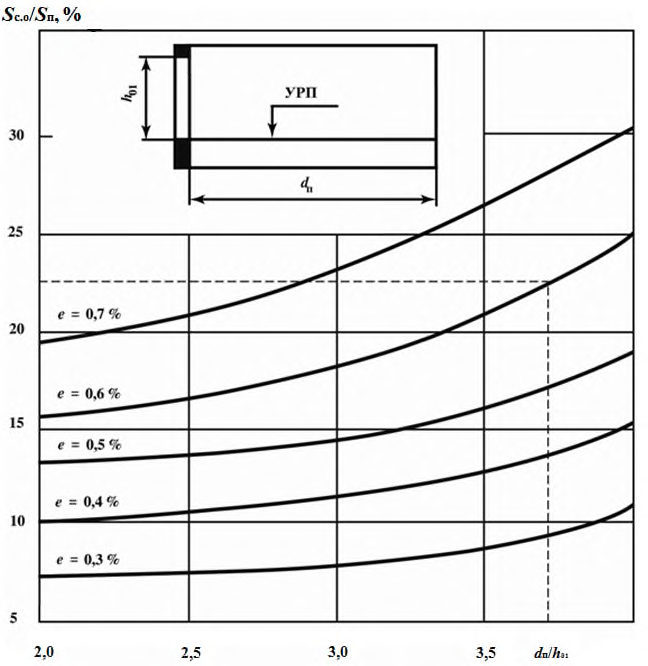
Рисунок 8.2 - График для определения относительной площади световых проемов S с.о./ S п при боковом освещении помещений рабочих кабинетов и офисов
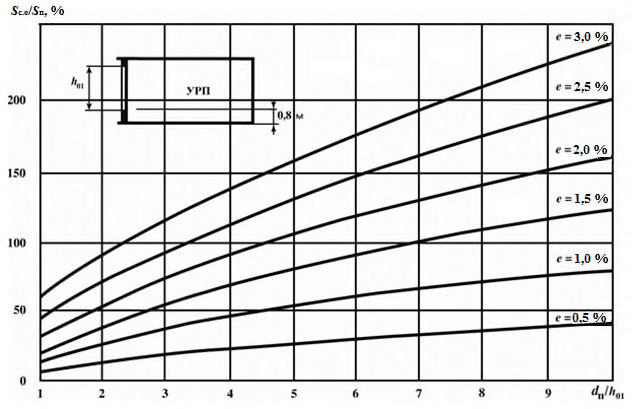
Рисунок 8.3 График для определения относительной площади световых проемов S с.о/ S п при боковом освещении учебных кабинетов общеобразовательных организаций
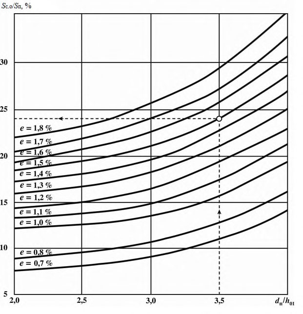
а) в зависимости от разряда зрительной работы или назначения помещения и группы административных районов по ресурсам светового климата по приложению Л СП 52.13330.2016 определяют нормированное значение КЕО для рассматриваемого помещения; б) определяют глубину помещения d п , высоту верхней грани световых проемов над уровнем УРП h 01 и отношение d п /h 01 ; в) на оси абсцисс графика (рисунок 8.1 или 8.2, или 8.3) определяют точку, соответствующую определенному значению d п /h 01, через найденную точку проводят вертикальную линию до пересечения с кривой, соответствующей нормированному значению КЕО. По ординате точки пересечения определяют значение S с.о. / S п; г) путем деления найденного значения S с.о. / S п на 100 и умножения на площадь пола находят площадь световых проемов в квадратных метрах.
Графики (рисунки 8.1-8.3) разработаны применительно к наиболее часто встречающимся в практике проектирования габаритным схемам помещений и типовому решению светопрозрачных конструкций -деревянным спаренным открывающимся переплетам.
Если в проекте здания приняты другие типы заполнения световых проемов, то найденные по рисункам 8.1-8.3 значения относительной площади световых проемов следует делить, а значение КЕО умножать на коэффициент К 1 по таблице 8.1.
Таблица 8.1 Поправочные коэффициенты для учета заполнений оконных проемов, отличных от деревянных спаренных переплетов
| Тип заполнения | Значения коэффициента К 1 для графиков на рисунках | Значения коэффициента К 1 для графиков на рисунках |
|---|---|---|
| 8.1 | 8.2, 8.3 | |
| Один слой оконного стекла в стальных одинарных глухих переплетах | - | 1,26 |
| То же, в открывающихся переплетах | - | 1,05 |
| Один слой оконного стекла в деревянных одинарных открывающихся переплетах | 1,13 | 1,05 |
| Три слоя оконного стекла в раздельно-спаренных металлических открывающихся переплетах | - | 0,82 |
| То же, в деревянных переплетах | 0,63 | 0,59 |
| Два слоя оконного стекла в стальных двойных открывающихся переплетах | - | 0,75 |
| То же, в глухих переплетах | - | - |
| Стеклопакеты (два слоя остекления) в стальных одинарных открывающихся переплетах* | - | 1,00 |
| То же, в глухих переплетах* | - | 1,15 |
| Стеклопакеты (три слоя остекления) в стальных глухих спаренных переплетах* | - | 1,00 |
| Пустотелые стеклянные блоки | - | 0,70 |
* При применении других видов переплетов коэффициент К 1 принимают по настоящей таблице до проведения соответствующих испытаний.
8.3Предварительный расчет площади световых проемов и КЕО при верхнем освещении
Суммарную площадь световых проемов фонарей S с.ф определяют по графикам на рисунках 8.4-8.7 в такой последовательности: а) в зависимости от разряда зрительной работы или назначения помещения и группы административных районов по ресурсам светового климата Российской Федерации по приложению Л СП 52.13330.2016 определяют нормированное значение КЕО для рассматриваемого помещения; б) на ординате графика определяют точку, соответствующую нормированному значению КЕО, через найденную точку проводят горизонталь до пересечения с соответствующей кривой графика (рисунки 8.4-8.7), по абсциссе точки пересечения определяют значение S с.о / S п; в) разделив значение S с.о / S п на 100 и умножив на площадь пола, находят площадь световых проемов фонарей в квадратных метрах.
Предварительный расчет значений КЕО в помещениях следует проводить с применением графиков на рисунках 8.4-8.7 в такой последовательности: а) по строительным чертежам находят суммарную площадь световых проемов фонарей S с.о , освещаемую площадь пола помещения S п и определяют отношение S с.о / S п; б) с учетом типа фонаря выбирают соответствующий рисунок (8.4 или 8.5, или 8.6, или 8.7);
Рисунок 8.4 - График для определения среднего значения КЕО е ср в общественных помещениях с зенитными фонарями с глубиной светового проема до 0,7 м и размерами, м, в плане 2,9×5,9 ( 1 ); 2,7×2,7; 2,9×2,9; 1,5×5,9 ( 2 ); 1,5×1,7 ( 3 )
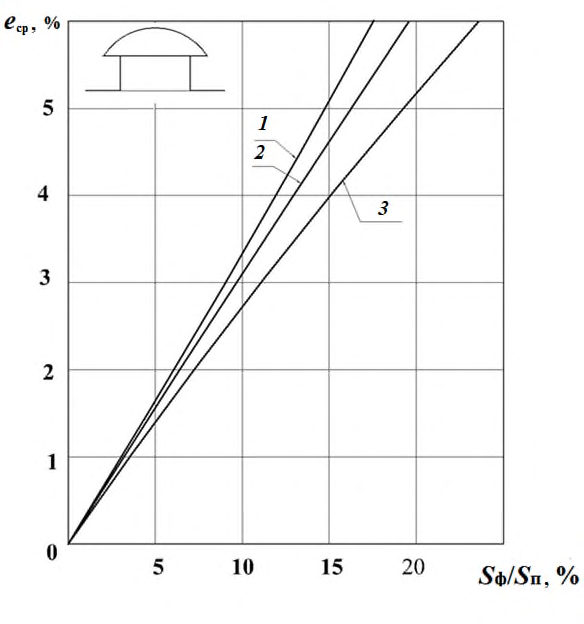
Рисунок 8.5 - График для определения среднего значения КЕО е ср в общественных помещениях с шахтными фонарями с глубиной светопроводной шахты 3,50 м и размерами, м, в плане 2,9×5,9 ( 1 ); 2,7×2,7; 2,9×2,9; 1,5×5,9 ( 2 ); 1,5×1,7 ( 3 )
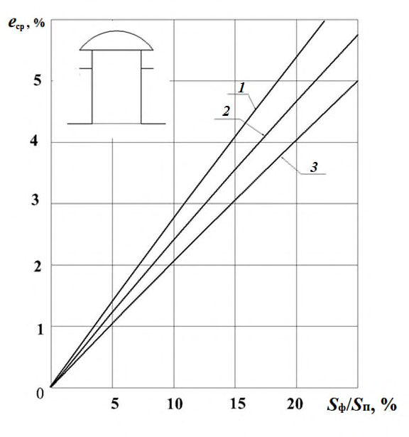
Рисунок 8.6 График для определения среднего значения КЕО е ср в общественных помещениях с шахтными фонарями диффузного света с глубиной светопроводной шахты 3,50 м и размерами, м, в плане 2,9×5,9 ( 1 ); 2,7×2,7; 2,9×2,9; 1,5×5,9 ( 2 ); 1,5×1,7 ( 3 )
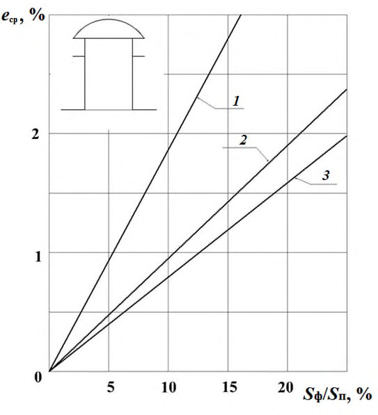
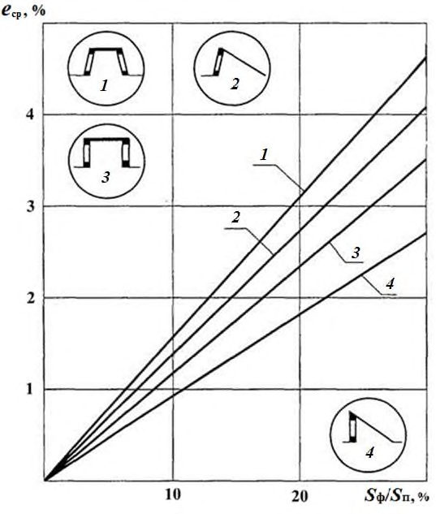
1 - трапециевидный фонарь; 2 - шедовый фонарь, имеющий наклонное остекление; 3 - прямоугольный фонарь; 4 - шедовый фонарь, имеющий вертикальное остекление
Рисунок 8.7 - График для определения среднего значения КЕО е ср в общественных помещениях с фонарями в) на выбранном рисунке через точку с абсциссой S с.о / S п проводят вертикальную линию до пересечения с соответствующим графиком. Ордината точки пересечения будет равна расчетному среднему значению коэффициента естественной освещенности е ср .
8.4Проверочный расчет КЕО при боковом освещении
Расчет КЕО проводят в такой последовательности: а) график I (рисунок 8.8) накладывают на поперечный разрез помещения таким образом, чтобы его полюс (центр) О совместился с расчетной точкой А (рисунок 8.9), а нижняя линия графика - со следом рабочей поверхности; б) по графику I подсчитывают число лучей, проходящих через поперечный разрез светового проема от неба, n 1 и число лучей от противостоящего здания n 1 1 в расчетную точку А ; в) отмечают номера полуокружностей на графике I, совпадающих с серединой С 1 участка светового проема, через который из расчетной точки видно небо, и с серединой С 2 участка светового проема, через который из расчетной точки видно противостоящее здание (рисунок 8.9); г) график II (рисунок 8.10) накладывают на план помещения таким образом, чтобы его вертикальная ось и горизонталь, номер которой соответствует номеру концентрической полуокружности [перечисление в)] проходили через точку С 1 (рисунок 8.9); д) подсчитывают число лучей n 2 по графику II, проходящих от неба через световой проем на плане помещения в расчетную точку O; е) определяют значение геометрического КЕО б , учитывающего прямой свет от неба, по формуле (А.9); ж) график II накладывают на план помещения таким образом, чтобы его вертикальная ось и горизонталь, номер которой соответствует номеру концентрической полуокружности [перечисление в)], проходили через точку С 2 ;
Рисунок 8.8 - График I для расчета геометрического КЕО

А - расчетная точка; О - полюс графика I;
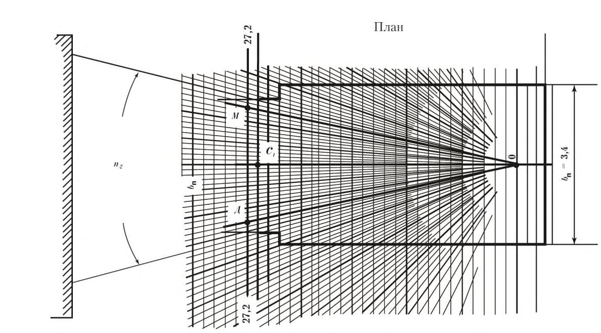
1 - середина участка светового проема, через который из расчетной
С точки видно небо;
С 2 - середина участка светового проема, через который из расчетной точки видно противостоящее здание
Рисунок 8.9 Пример использования графика I для подсчета числа лучей от неба и противостоящего здания
Рисунок 8.10 - График II для расчета геометрического КЕО
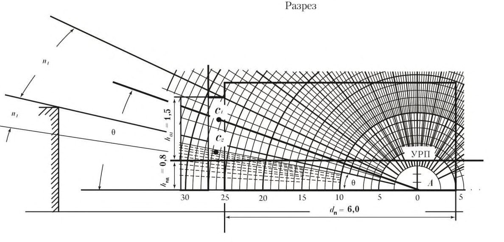
и) подсчитывают число лучей n 1 2 по графику II, проходящих от противостоящего здания через световой проем на плане помещения в расчетную точку А ; к) по формуле (А.10) определяют значение геометрического коэффициента естественной освещенности зд , учитывающего свет, отраженный от противостоящего здания; л) определяют значение угла , под которым видна середина участка неба из расчетной точки на поперечном разрезе помещения (рисунок 8.9); м) по значению угла и заданным параметрам помещения и окружающей застройки в соответствии с приложением А определяют значения коэффициентов СN, qi, b ф , К зд , r o , о и MF , подставляют в формулу (А.1) и вычисляют значение КЕО в расчетной точке помещения.
Примечания
1 Графики I и II применимы только для световых проемов прямоугольной формы.
2 План и разрез помещения выполняют (вычерчивают) в одинаковом масштабе.
При наличии в помещении различно ориентированных световых проемов расчет КЕО в точках характерного разреза проводят для каждого светового проема отдельно, а полученные значения КЕО для каждой точки суммируют.
8.5Проверочный расчет КЕО при верхнем освещении
Расчет КЕО проводят в такой последовательности: а) график I (рисунок 8.8) накладывают на поперечный разрез помещения таким образом, чтобы полюс (центр) О графика совмещался с расчетной точкой, а нижняя линия графика -со следом рабочей поверхности. Подсчитывают число радиально направленных лучей графика I, проходящих через поперечный разрез первого светового проема, ( n 1 ) 1 , второго светового проема ( n 1)2, третьего светового проема ( n 1)3 и т. д.; при этом отмечают номера полуокружностей, которые проходят через середину первого, второго, третьего световых проемов и т. д.; б) определяют углы 1 , 2 , 3 и т. д. между нижней линией графика I и линией, соединяющей полюс (центр) графика I с серединой первого, второго, третьего световых проемов и т. д.; в) график II (рисунок 8.10) накладывают на продольный разрез помещения; при этом график располагают так, чтобы его вертикальная ось и горизонталь, номер которой должен соответствовать номеру полуокружности на графике I, проходили через середину светового проема (точка С ).
Подсчитывают число лучей по графику II, проходящих через продольный разрез первого светового проема ( n 2)1, второго светового проема ( n 2)2, третьего светового проема ( n 2 ) 3 и т. д.; г) вычисляют значение геометрического КЕО в1 в первой точке характерного разреза помещения по формуле εв1=0,01((𝑛1𝑞𝑛2 ) 1 +(𝑛 1 𝑞𝑛 2 ) 2 +(𝑛 1 𝑞𝑛 2 ) 3 +...+(𝑛 1 𝑞𝑛 2 ) 𝑖 ), (8.1) где i - число световых проемов; q ( ) - коэффициент, учитывающий неравномерную яркость участка небосвода, видимого из первой точки соответственно под углами θ1, θ 2 , θ 3 и т. д.; д) повторяют вычисления в соответствии с перечислениями а)-г) для всех точек характерного разреза помещения до N включительно (где N -число точек, в которых проводят расчет КЕО); е) определяют среднее значение геометрического КЕО ср по формуле (А.7); ж) по заданным параметрам помещения и световых проемов в соответствии с приложением Б определяют значения r 2 , k ф, о ; и) последовательно для всех точек вычисляют расчетное значение КЕО по формуле (А.2).
где А ф.в - площадь входного верхнего отверстия фонаря;
N ф - число фонарей; q ( ) - коэффициент, учитывающий неравномерную яркость облачного неба МКО и определяемый по рисунку 8.11;
- угол между прямой, соединяющей расчетную точку с центром нижнего отверстия фонаря, и нормалью к этому отверстию;
К с - коэффициент светопередачи фонаря, определяемый для фонарей с диффузным отражением стенок по рисунку 8.12, а для фонарей с направленным отражением стенок - по рисунку 8.13 по значению индекса светового проема шахтного фонаря i ф;
MF - расчетный коэффициент, учитывающий снижение КЕО и освещенности в процессе эксплуатации вследствие загрязнения и старения светопрозрачных заполнений в световых проемах, а также снижение отражающих свойств поверхностей помещения (коэффициент эксплуатации).
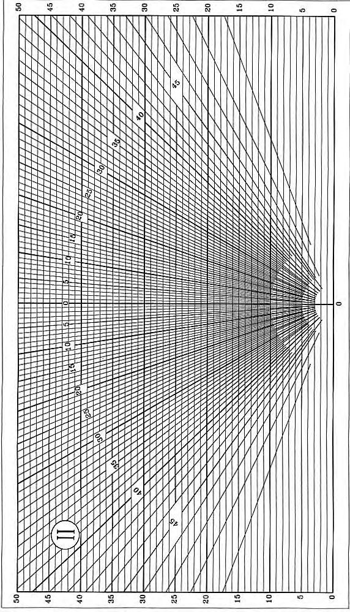
М - точка расчета
Рисунок 8.11 - График для определения коэффициента q ( ) в зависимости от угла
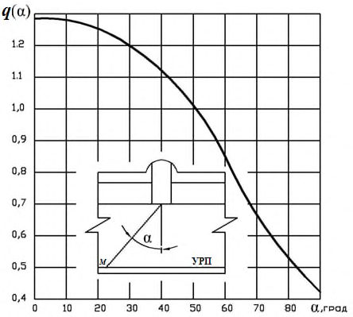
1 - ρд = 0,9; 2 - ρд = 0,8; 3 - ρд = 0,7; 4 - ρд = 0,6; 5 - ρд = 0,5 ρ - коэффициент диффузного отражения с фонарей
Рисунок 8.12 - График для определения коэффициента светопередачи К с диффузным отражением стенок шахты
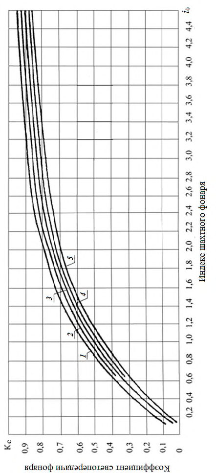
н - коэффициент направленного отражения
Рисунок 8.13 - График для определения коэффициента светопередачи К с фонарей с направленным отражением стенок шахты
Индекс светового проема фонаря с отверстиями в форме прямоугольника i ф определяют по формуле
где А ф.н - площадь нижнего отверстия фонаря;
А ф.в - площадь верхнего отверстия фонаря; h с.ф - высота светового проема фонаря;
Р ф.н , Р ф.в -периметры верхнего и нижнего отверстий фонаря соответственно.
Индекс светового проема фонаря с отверстиями в форме круга определяют по формуле
где r ф.в , r ф.н - радиус верхнего и нижнего отверстий фонаря соответственно.
Коэффициент о определяют по формуле (А.6), r 2 -по таблице А.9, коэффициент эксплуатации MF - по таблице 3 СП 52.13330.2016.
Расчет проводят в следующем порядке:
- а) вычисляют значение геометрического КЕО в первой точке характерного разреза помещения по формуле
б) повторяют вычисления в соответствии с перечислением а) для всех точек характерного разреза помещения до Nj включительно (где Nj - число точек, в которых проводят расчет КЕО);
- в) определяют ср по формуле
- г) последовательно для всех точек вычисляют прямую составляющую КЕО пр по формуле
- д) определяют отраженную составляющую КЕО отр , значение которой одинаково для всех точек, по формуле
- е) определяют расчетное значение КЕО е в р в каждой точке характерного разреза с учетом отраженного от поверхностей помещения и прямого света по формуле
8.6Расчет КЕО от световых проемов, имеющих форму, отличную от прямоугольника
где ψ -угол, образуемый линиями, проведенными из расчетной точки А к границам светового проема по рисунку 8.15, град. а - большая полуось эллипса; b - малая полуось эллипса; r - радиус окружности
Рисунок 8.14 - Замена круглого ( а ), полукруглого ( б ) и эллиптического ( в ) световых проемов эквивалентными прямоугольными ψ - угол, под которым виден диаметр светового проема из расчетной точки А
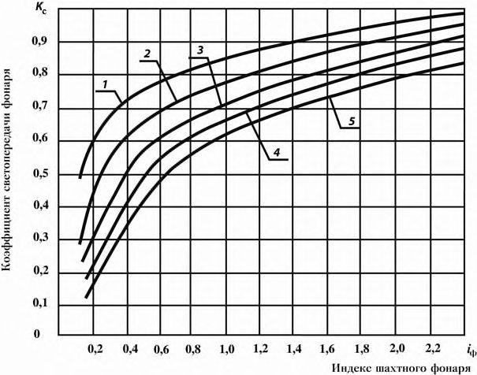
Рисунок 8.15 Схема для определения КЕО от световых проемов круглой формы в покрытии
9Проектирование естественного и совмещенного освещения некоторых типовых помещений
9.1Жилые помещения
При разработке типовых проектов жилых зданий, предназначенных для расположения в административных районах 2, 3, 4, 5-й групп по ресурсам светового климата, ориентация которых по сторонам горизонта неизвестна, значение КЕО следует определять согласно пункту 5.8 СП 52.13330.2016, при этом коэффициент светового климата СN следует принимать для северной ориентации световых проемов по сторонам горизонта.
Таблица 9.1 -Коэффициент К зд2 , учитывающий среднестатистическое затенение световых проемов в жилых помещениях первого или второго этажей
| Глубина помещения d п , м | От 2 до 3 | От 3 до 4 | От 4 до 5 | От 5 до 6 |
|---|---|---|---|---|
| Значение коэффициента К зд2 | 1,00 | 0,75 | 0,60 | 0,50 |
Рисунок 9.1 - План и разрез жилой комнаты
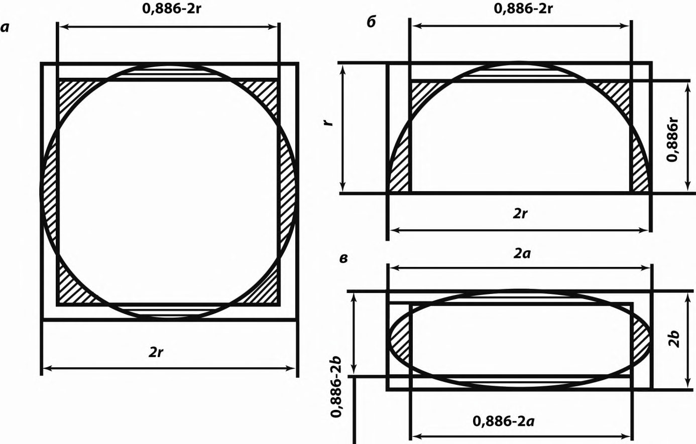
9.2Рабочие кабинеты, офисы
- а) создание необходимых условий освещения на рабочих столах, расположенных в глубине помещения, при выполнении разнообразных
СП 367.1325800.2017 зрительных работ (чтение типографского и машинописного текстов, рукописных материалов, различение деталей графических материалов и т. п.); б) обеспечение зрительной связи с наружным пространством; в) защита помещений от слепящего и теплового действия инсоляции; г) благоприятное распределение яркостей в поле зрения.
Таблица 9.2 Коэффициенты отражения света внутренними поверхностями рабочих кабинетов и офисов
| Внутренние поверхности помещений | Коэффициент отражения света внутренними поверхностями помещений , отн. ед., не менее |
|---|---|
| Потолок, верхняя часть стен, оконные откосы | 0,7 |
| Стены | 0,5 |
| Пол | 0,4 |
Примечание - Конкретные значения коэффициентов отражения внутренних поверхностей помещения принимают по данным измерений по ГОСТ Р 56709.
9.3Учебные кабинеты и помещения
Во всех остальных помещениях общеобразовательных организаций (включая рекреации) следует предусматривать боковое освещение через световые проемы в наружных стенах, которые должны обеспечивать зрительную связь с наружным пространством. Учебные кабинеты и помещения, расположенные на верхних этажах зданий, допускается проектировать с одним верхним освещением через световые проемы в кровле.
При разработке типовых проектов учебные кабинеты и помещения общеобразовательных организаций, ориентация которых по сторонам горизонта при строительстве может быть различной, расчетное значение КЕО следует определять по формуле (1), а коэффициент светового климата СN - по таблице 5.1 СП 52.13330.2016.
Таблица 9.3 Коэффициенты отражения света внутренними поверхностями учебных кабинетов помещений
| Внутренние поверхности помещений | Коэффициент отражения внутренних поверхностей помещений , отн. ед. |
|---|---|
| Потолок, верхняя часть стен, оконные откосы | 0,70-0,9 |
| Стены | 0,5-0,7 |
| Пол | 0,4-0,5 |
| Примечание - Конкретные значения коэффициентов отражения внутренних поверхностей помещений принимают по данным измерений по ГОСТ Р 56709. | Примечание - Конкретные значения коэффициентов отражения внутренних поверхностей помещений принимают по данным измерений по ГОСТ Р 56709. |
9.4Выставочные помещения
Освещение экспонатов характеризуют средним значением КЕО, равномерностью освещенности в выставочной зоне помещения и направлением падения светового потока на плоскость выставочной зоны.
При освещении окружающего пространства должны быть обеспечены:
- требуемое распределение освещенности в помещении;
- ограничение слепящего действия световых проемов;
- устранение инсоляции помещения;
- требуемое распределение яркости в помещении.
Таблица 9.4 - Нормативные параметры естественного освещения для выставочных помещений
| Экспозиционные помещения | Средние значения КЕО е ср ,% | Отношение максимального значения КЕО к минимальному, не более |
|---|---|---|
| Выставки монументальной и станковой живописи, гравюр, плакатов, ковров, тканей и т. п. | 1,5 | 1,3 |
| Выставки скульптуры, архитектуры, мебели | 1,5 | 2,0 |
| Политические, антропологические, археологические, этнографические выставки | 1,0 | 2,0 |
| Исторические и военно-исторические выставки | 1,0 | 3,0 |
| Машины, агрегаты, установки и т. п. | 3,0 | 3,0 |
Угол падения прямого света на объемные экспонаты выбирают в пределах от 30 ° до 50 ° ; такое направление падения света в наилучшей степени выявляет форму и детали объемных экспонатов.
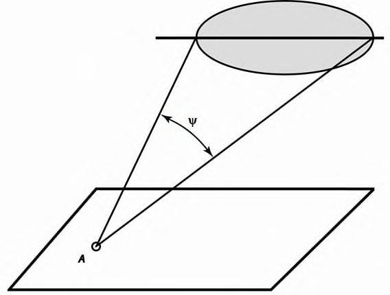
- защитный угол; - угол падения прямого света на середину выставочной зоны
Рисунок 9.2 - Поперечный разрез выставочного помещения
При нормальном удалении посетителя от экспонатов (равном 1,5 высоты экспозиционной зоны) и ориентации глаз на середину выставочной зоны угол (рисунок 9.2), под которым виден нижний край светового проема, должен быть не менее 30 . При высоте подоконников 1,2 м от пола и менее наружную стену и простенки не допускается использовать для экспозиции.
Для устранения инсоляции в этих помещениях целесообразно выбирать ориентацию световых проемов на северо-восток, север, северо- запад. При другой ориентации световых проемов в этих помещениях необходимо применять регулируемые внутренние (междурамные) или наружные жалюзи.
В экспозиционных помещениях с объемными экспонатами (скульптурами, макетами, машинами и т. п.) инсоляция желательна, так как прямой солнечный свет в наилучшей степени выявляет форму и детали экспонатов. Для этих помещений ориентацию световых проемов следует выбирать на юго-восток, юг, юго-запад.
Искусственное освещение необходимо осуществлять преимущественно источниками света, излучение которых по спектру приближается к дневному. Для подсвета следует применять специальную осветительную арматуру, которую размещают скрыто от посетителей (за подвесными потолками, встраивают в мебель или экспозиционное оборудование). При этом необходимо тщательно выбирать направление световых потоков, чтобы исключить возможность попадания в поле зрения посетителей незащищенных источников света и появления ярких бликов на экспонатах с полированными поверхностями.
При подсвете неравномерность распределения яркостей в поле зрения не должна превышать 40:1.
Отделку внутренних поверхностей выставочных помещений следует проводить с учетом коэффициентов отражения света поверхностей, приведенных в таблице 9.5.
Таблица 9.5 Коэффициенты отражения света внутренних поверхностей выставочных помещений
| Выставочное помещение | Коэффициенты отражения света , отн. ед. | Коэффициенты отражения света , отн. ед. | Коэффициенты отражения света , отн. ед. |
|---|---|---|---|
| потолка | стен | пола | |
| Картинные галереи и выставки | 0,70 | 0,20-0,40 | 0,10-0,30 |
| Скульптурные залы | 0,70 | 0,30-0,50 | 0,30-0,40 |
| Политехнические и научные музеи | 0,70-0,80 | 0,20-0,70 | 0,20-0,50 |
| Промышленные и сельскохозяйственные выставки | 0,70-0,80 | 0,70-0,80 | 0,20-0,50 |
10Помещения с зенитными и шахтными фонарями
Размещать фонари следует с учетом конструктивных элементов покрытия, инженерных коммуникаций и инженерного оборудования, а также в увязке с предполагаемым расположением светильников и с учетом требований равномерности освещения: а) квадратные в плане и круглые фонари рекомендуется размещать по углам квадрата, а прямоугольные -по углам прямоугольника с соотношением сторон в поперечном и продольном направлениях, соответствующим соотношению сторон основания опорного стакана или выходного отверстия светопроводной шахты; б) в целях обеспечения равномерности освещения размеры выходных отверстий фонарей должны быть не более 0,25-0,50 высоты помещения, а расстояние между крайним рядом фонарей и стеной не должно превышать 0,50 расстояния между средними рядами фонарей; в) фонари рекомендуется размещать между фермами или балками покрытия на площади, свободной от инженерных коммуникаций и оборудования.
СП 367.1325800.2017
Таблица 10.1 Характеристики фонарей для общественных зданий различного назначения
| Тип здания | Тип фонаря | Характеристика фонаря | Характеристика фонаря | Характеристика фонаря |
|---|---|---|---|---|
| Тип здания | Тип фонаря | Вид отражения опорного стакана и светопровод- ной шахты | Форма опорного стакана и светопроводной шахты | Размеры входного отверстия в плане, м |
| Инженерно- административное без подвесных потолков | Зенитный | Диффузное | Прямоугольный параллелепипед | 1,5 1,7; 2,7 2,7 |
| Инженерно- административное с подвесным светопрозрачным потолком | Зенитный | Направленное | Прямоугольный параллелепипед | 1,5 1,7; 2,7 2,7 |
| Инженерно- административное с подвесными непрозрачными потолками | Шахтный | Диффузное | Усеченная пирамида | 1,5 1,7; 2,7 2,7 |
| Общественное с техническим этажом | Шахтный | Направленное | Прямоугольный параллелепипед, цилиндр | 1,5 1,7; 2,7 2,7. Диаметр 1,2; 1,5 |
| Общественное с подвесным светопроз- рачным потолком | Зенитный | Направленное | Усеченная пира- мида, усеченный конус | 1,5 1,7; 2,7 2,7. Диаметр 1,2; 1,5 |
| Общественное с подвесным непрозрачным потолком | Шахтный | Диффузное | Усеченная пира- мида, усеченный конус | 1,5 1,7; 2,7 2,7. Диаметр 1,2; 1,5 |
11Расчет времени использования естественного освещения в помещениях
В помещениях жилых и общественных зданий, в которых расчетное значение КЕО составляет 80 % нормированного значения КЕО и менее, нормы искусственной освещенности повышают на одну ступень по шкале освещенности.
где ср e - среднее значение КЕО; определяют по формуле (А.8); о г E -наружная горизонтальная освещенность при сплошной облачности; принимают по таблице Б.1.
Примечание - Значения наружной освещенности в приложении Б приведены для местного среднего солнечного времени Т М. Переход от местного декретного времени к местному среднему солнечному проводят по формуле
где Д Т - местное декретное время;
N - номер часового пояса (рисунок 11.1);
- географическая долгота пункта, выраженная в часовой мере (15 = 1 ч).
где б р e - расчетное значение КЕО в точке А помещения при боковом освещении; определяют по формуле (А.1); о г А E - наружная освещенность на горизонтальной поверхности при облачном небе.
Расчет естественной освещенности я г М Е в заданной точке М помещения от окон при безоблачном небе следует проводить:
- а) при отсутствии солнцезащитных средств в световых проемах и противостоящих зданий по формуле
- б) при затенении окон противостоящими зданиями по формуле
- в) при наличии солнцезащитных средств в световых проемах по формуле
где б i - геометрический КЕО, определяемый по формуле (А.9);
б - коэффициент относительной яркости участка неба, видимого через световой проем; принимают по таблице 11.1;
Е в я - наружная освещенность в вертикальной плоскости, создаваемая рассеянным светом безоблачного неба; принимают в зависимости от ориентации поверхности фасада здания и времени суток по таблице Б.3; b ф i - средняя относительная яркость фасадов противостоящих зданий; определяют по таблице А.2;
К зд i -определяют по формуле (А.5);
ф -средневзвешенный коэффициент отражения фасадов противостоящих зданий; принимают по таблице А.3;
E в сум -наружная суммарная освещенность на вертикальной поверхности, создаваемая рассеянным светом неба, прямым светом солнца и светом, отраженным от земной поверхности; принимают по таблице Б.4.
Расчет средней естественной освещенности в помещении от безоблачного неба при верхнем освещении в зависимости от типа светового проема проводят: а) при световых проемах в плоскости покрытия, имеющих заполнение из светорассеивающих материалов, по формуле
СП .1325800.2017
UTC - Всемирное координированное время; MSK - московское время
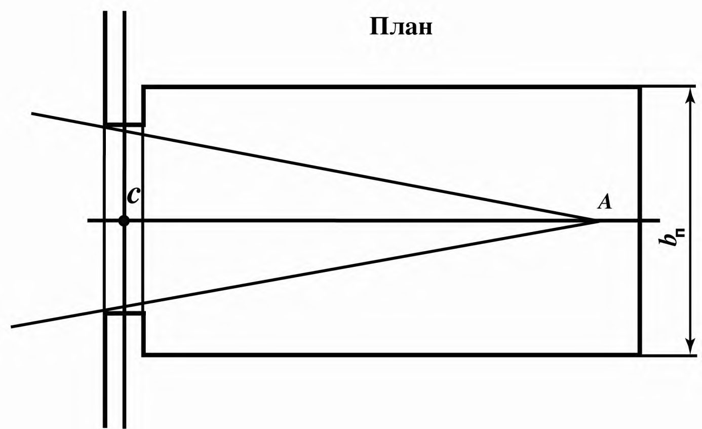
Рисунок 11.1 Карта часовых поясов Российской Федерации с 4 декабря 2016 г. б) при световых проемах в плоскости покрытия, имеющих заполнение из светопрозрачных материалов, по формуле
- в) при шедовых фонарях по формуле
- г) при прямоугольных фонарях по формуле
где о - общий коэффициент пропускания света; r 2 - коэффициент, учитывающий повышение КЕО при верхнем освещении, благодаря свету, отраженному от поверхностей помещения, принимаемый по таблице А.11; k ф -коэффициент, принимаемый в зависимости от типа фонаря и определяемый по таблице А.12;
ср - см. формулу (А.7);
E г сум - суммарная наружная освещенность на горизонтальной поверхности, создаваемая безоблачным небом и прямым светом солнца; принимают по таблице Б.3;
Е г я -наружная освещенность на горизонтальной поверхности, создаваемая безоблачным небом; принимают по таблице Б.3;
в - коэффициент относительной яркости участков безоблачного неба, видимых через световые проемы; принимают по таблице 11.2;
E в я и E в я -наружная освещенность на двух противоположных сторонах вертикальной поверхности; принимают по таблице Б.4.
Примечания
1 Прямой солнечный свет в расчетах освещенности учитывают при наличии в световых проемах солнцезащитных средств или светорассеивающих материалов; в остальных случаях прямой солнечный свет не учитывают.
2 Значения расчетных коэффициентов в таблицах 11.1 и 11.2 приведены для местного среднего солнечного времени.
Таблица 11.1 - Коэффициенты относительной яркости участка безоблачного неба, видимого из расчетной точки через световой проем
| Ориентация светопроемов | Значение коэффициента б в зависимости от времени суток, ч:мин | Значение коэффициента б в зависимости от времени суток, ч:мин | Значение коэффициента б в зависимости от времени суток, ч:мин | Значение коэффициента б в зависимости от времени суток, ч:мин | Значение коэффициента б в зависимости от времени суток, ч:мин | Значение коэффициента б в зависимости от времени суток, ч:мин | Значение коэффициента б в зависимости от времени суток, ч:мин | Значение коэффициента б в зависимости от времени суток, ч:мин | Значение коэффициента б в зависимости от времени суток, ч:мин | Значение коэффициента б в зависимости от времени суток, ч:мин | Значение коэффициента б в зависимости от времени суток, ч:мин | Значение коэффициента б в зависимости от времени суток, ч:мин | Значение коэффициента б в зависимости от времени суток, ч:мин | Значение коэффициента б в зависимости от времени суток, ч:мин | Значение коэффициента б в зависимости от времени суток, ч:мин |
|---|---|---|---|---|---|---|---|---|---|---|---|---|---|---|---|
| Ориентация светопроемов | 5:00 | 6:00 | 7:00 | 8:00 | 9:00 | 10:00 | 11:00 | 12:00 | 13:00 | 14:00 | 15:00 | 16:00 | 17:00 | 18:00 | 19:00 |
| В | 2 | 3,1 | 3 | 1,9 | 1,4 | 1,25 | 1,2 | 1,3 | 1,4 | 1,55 | 1,7 | 1,8 | 1,9 | 1,95 | 1,85 |
| ЮВ | 1,05 | 1,1 | 1,45 | 2,5 | 2,6 | 1,9 | 1,5 | 1,3 | 1,25 | 1,3 | 1,35 | 1,45 | 1,6 | 1,85 | 1,9 |
| Ю | 1,5 | 1,35 | 1,1 | 1,2 | 1,3 | 1,5 | 1,7 | 1,85 | 1,7 | 1,5 | 1,3 | 1,2 | 1,1 | 1,35 | 1,5 |
| ЮЗ | 1,9 | 1,85 | 1,6 | 1,45 | 1,35 | 1,3 | 1,25 | 1,3 | 1,5 | 1,9 | 2,6 | 2,5 | 1,45 | 1,1 | 1,05 |
| З | 1,85 | 1,95 | 1,9 | 1,8 | 1,7 | 1,55 | 1,4 | 1,3 | 1,2 | 1,25 | 1,4 | 1,9 | 3 | 3,1 | 2 |
| СЗ | 1,3 | 1,5 | 1,7 | 1,75 | 1,75 | 1,7 | 1,6 | 1,5 | 1,4 | 1,3 | 1,25 | 1,25 | 1,3 | 1,9 | 2,9 |
| С | 1,2 | 1,2 | 1,3 | 1,45 | 1,5 | 1,6 | 1,6 | 1,65 | 1,6 | 1,6 | 1,5 | 1,45 | 1,3 | 1,2 | 1,2 |
| СВ | 2,9 | 1,9 | 1,3 | 1,25 | 1,25 | 1,3 | 1,4 | 1,5 | 1,6 | 1,7 | 1,75 | 1,75 | 1,7 | 1,5 | 1,3 |
Примечание - В настоящей таблице применены следующие условные обозначения: В восток; З - запад; С - север; СВ - северо-восток; СЗ - северо-запад; Ю - юг; ЮВ - юго-восток; ЮЗ - югозапад.
Таблица 11.2 Коэффициенты относительной яркости участков безоблачного неба, видимых из расчетной точки через световые проемы
| Тип светового | Значение коэффициента в в зависимости от времени суток, ч:мин | Значение коэффициента в в зависимости от времени суток, ч:мин | Значение коэффициента в в зависимости от времени суток, ч:мин | Значение коэффициента в в зависимости от времени суток, ч:мин | Значение коэффициента в в зависимости от времени суток, ч:мин | Значение коэффициента в в зависимости от времени суток, ч:мин | Значение коэффициента в в зависимости от времени суток, ч:мин | Значение коэффициента в в зависимости от времени суток, ч:мин | Значение коэффициента в в зависимости от времени суток, ч:мин | Значение коэффициента в в зависимости от времени суток, ч:мин | Значение коэффициента в в зависимости от времени суток, ч:мин | Значение коэффициента в в зависимости от времени суток, ч:мин | Значение коэффициента в в зависимости от времени суток, ч:мин | Значение коэффициента в в зависимости от времени суток, ч:мин | Значение коэффициента в в зависимости от времени суток, ч:мин |
|---|---|---|---|---|---|---|---|---|---|---|---|---|---|---|---|
| проема | 5:00 | 6:00 | 7:00 | 8:00 | 9:00 | 10:00 | 11:00 | 12:00 | 13:00 | 14:00 | 15:00 | 16:00 | 17:00 | 18:00 | 19:00 |
| Прямоуголь- ный фонарь | 1,3 | 1,42 | 1,52 | 1,54 | 1,42 | 1,23 | 1,15 | 1,14 | 1,15 | 1,23 | 1,42 | 1,54 | 1,52 | 1,42 | 1,3 |
| В плоскости покрытия | 0,7 | 0,85 | 0,95 | 1,05 | 1,1 | 1,14 | 1,16 | 1,17 | 1,16 | 1,14 | 1,1 | 1,05 | 0,95 | 0,85 | 0,7 |
| Шедовый фонарь (ориенти- рованный на СЗ, С, СВ) | 1 | 1,17 | 1,13 | 1,04 | 0,95 | 0,9 | 0,85 | 0,8 | 0,85 | 0,9 | 0,95 | 1,04 | 1,13 | 1,17 | 1 |
Примечание - В настоящей таблице применены следующие условные обозначения: С - север; СВ - северо-восток; СЗ - северо-запад.
12Технико-экономическая оценка систем естественного освещения по энергетическим затратам
- определяют нормированные значения КЕО для помещения при естественном и совмещенном освещении;
- определяют нормы искусственной освещенности в соответствии с разрядом и подразрядом зрительных работ в соответствии с СП 52.13330;
- определяют расчетное значение КЕО е р ;
- расчетное значение КЕО е p сравнивают с нормируемым значением, при этом могут иметь место три случая: а) е p более нормированного. В этом случае возможно уменьшение размеров световых проемов, а дальнейший технико-экономический расчет проводят для сравнения вариантов систем естественного освещения с различными размерами светопроемов; б) е p более 0,8 нормированного. В этом случае возможно увеличение размеров световых проемов, а дальнейший технико-экономический расчет проводят для сравнения вариантов систем естественного освещения с различными размерами световых проемов; в) е p более нормированного при совмещенном освещении, но менее 0,8 нормированного при естественном освещении. В этом случае возможно увеличение размеров световых проемов, а дальнейший техникоэкономический расчет проводят для сравнения варианта системы естественного освещения с увеличенными размерами световых проемов с вариантом системы совмещенного освещения без увеличения размеров световых проемов.
1) в рассматриваемой системе освещения помещения нормы искусственной освещенности повышают на одну ступень шкалы освещенности в соответствии с пунктом 6.6 СП 52.13330.2016 (первая система естественного освещения);
2) изменяют систему естественного освещения, отличающуюся увеличением площади световых проемов. Эта система естественного освещения помещения должна обеспечивать расчетное значение КЕО не менее 0,8 нормированного (вторая система естественного освещения помещения).
где A 1 и A 2 - площади световых проемов, м² ;
ок - цена заполнения светового проема, руб./м² ;
ст - цена возведения ограждающей конструкции, в которой расположен световой проем, руб./м² ; б) рассчитывают разницу теплопоступлений через световые проемы между первой и второй системами естественного освещения помещения в течении отопительного периода.
Теплопоступления через световой проем с ориентацией j , кВт · ч/год, рассчитывают, основываясь на формуле (1.1), по формуле
где g ок -коэффициент общего пропускания солнечной энергии светопрозрачной частью, относительные единицы;
2ок -коэффициент, учитывающий затенение светового проема непрозрачными элементами заполнения, относительные единицы;
I j вер - суммарная радиация за отопительный период для вертикальной поверхности, ориентированной по направлению j , МДж/(год·м² );
А - площадь окна, ориентированного по направлению j , м² .
Тогда разница теплопоступлений через световые проемы между первой и второй системами естественного освещения помещения составит:
в) рассчитывают разницу теплопотерь через световые проемы между первой и второй системами естественного освещения помещения в течении отопительного периода, кВт · ч/год, по формуле
где ГСОП - градусо-сутки отопительного периода района строительства, °С сут/год; правила определения приведены в [1]; рассчитывают по формуле
здесь t в - нормируемая температура внутреннего воздуха, °С; t от.пер -средняя температура отопительного периода района строительства, °С, определяемая по СП 50.13330; z от.пер -продолжительность отопительного периода района строительства, сут/год, определяемая по СП 50.13330;
R ок пр -приведенное сопротивление теплопередаче заполнения светового проема, м² °С/Вт;
R ст пр -приведенное сопротивление теплопередаче ограждающей конструкции, в которой расположен световой проем, м² °С/Вт; г) рассчитывают разницу среднегодовых затрат на потери теплоты за отопительный период Зт, обусловленную изменением системы естественного освещения помещения, с учетом притока тепла от солнечной радиации через световые проемы:
где С т - перспективная цена тепловой энергии, руб./(кВт ч); д) рассчитывают разницу среднегодовых затрат на потребление электрической энергии Зэ, обусловленную изменением системы естественного освещения помещения, по формуле
где N 1 , N 2 -удельная установленная мощность системы искусственного освещения помещения, Вт/м² , для первой и второй систем естественного освещения помещения соответственно; определяют по таблице 7.2 СП 52.13330.2016;
z 1 , z 2 -продолжительность использования искусственного освещения в помещении, ч/год, для первой и второй систем естественного освещения помещения соответственно; определяют расчетом;
С э - перспективная цена электрической энергии, руб.; е) рассчитывают разницу среднегодовых эксплуатационных затрат по формуле
где р -процентная ставка по кредиту банка, %.
Если условие (12.9) не выполняется, то это означает, что затраты на изменение системы естественного освещения помещения в соответствии со второй системой естественного освещения помещения не окупятся и выгоднее принять первую систему естественного освещения помещения, т. е. повысить нормы искусственного освещения помещения на ступень. При этом технико-экономический расчет заканчивают.
Проводят сопоставление расчетного срока окупаемости измененной системы естественного освещения помещения с принятым предельно допустимым значением T о.доп. Если Т o < Т о.доп, то экономически оправдан выбор второй системы естественного освещения помещения. В противном случае экономически оправдан выбор первой системы естественного освещения помещения.
АПриложение А. Методика расчета естественного освещения помещений
А.1 Методика предназначена для расчета коэффициента естественной освещенности КЕО применительно к боковой системе освещения с различными схемами расположения зданий в условиях застройки, а также для расчета КЕО в помещениях с верхней (через фонари различных конструкций) и комбинированной (верхней и боковой) системами естественного освещения.
А.2Расчет коэффициента естественной освещенности
Расчет коэффициента естественной освещенности КЕО следует проводить: а) при боковом освещении по формуле
б) при верхнем освещении по формуле
в) при комбинированном (верхнем и боковом) освещении по формуле
где СN - коэффициент, учитывающий особенности светового климата, принимают по таблице 5.1 СП 52.13330.2016 в зависимости от номера группы административных районов Российской Федерации;
L - число участков небосвода, видимых через световой проем из расчетной точки;
б i - геометрический КЕО в расчетной точке при боковом освещении, учитывающий прямой свет от i -го участка неба, определяемый по формуле (А.9); q( γ) i -коэффициент, учитывающий неравномерную яркость i -го участка облачного неба МКО, определяемый по таблице А.1;
М -число участков фасадов зданий противостоящей застройки, видимых через световой проем из расчетной точки;
Т -число световых проемов в покрытии;
зд j - геометрический КЕО в расчетной точке при боковом освещении, учитывающий свет, отраженный от j -го участка фасадов зданий противостоящей застройки, определяемый по формуле (А.10); b ф j - средняя относительная яркость j -го участка противостоящего (экранирующего) здания, расположенного параллельно исследуемому зданию (помещению), определяемая по таблице А.2. Иные схемы застройки необходимо приводить к схеме № 1 с параллельным расположением зданий согласно А.3; r о -коэффициент, учитывающий повышение КЕО при боковом освещении благодаря свету, отраженному от поверхностей помещения и подстилающего слоя, прилегающего к зданию, принимаемый по таблицам А.4 и А.5;
MF - коэффициент эксплуатации, определяемый по таблице 4.3 СП 52.13330.2016;
в i - геометрический КЕО в расчетной точке при верхнем освещении от i -го проема.
При расчете средней относительной яркости фасадов b ф j по таблице А.2 коэффициент отражения строительных и облицовочных материалов для фасадов противостоящих зданий без оконных проемов, а также средневзвешенный коэффициент отражения фасадов ф с учетом оконных проемов следует принимать по таблице А.3. Для строящихся зданий допускается принимать ф по данным, приведенным в документации на отделочный материал фасада, или по данным измерений.
Средневзвешенный коэффициент отражения оконных проемов с учетом переплетов ок в расчетах принимают равным 0,20.
СП .1325800.2017
Средневзвешенный коэффициент отражения фасадов ф с отделочными материалами, отличающимися от приведенных в таблице А.3, с учетом оконных блоков следует определять по формуле
где и ок - коэффициент отражения отделочного материала фасада и оконных блоков соответственно;
S фас и S ок - площадь фасада без учета оконных блоков и площадь оконных блоков соответственно;
К зд j - коэффициент, учитывающий изменения внутренней отраженной составляющей КЕО в помещении при наличии противостоящих зданий, определяемый по формуле
здесь К зд0 -коэффициент, учитывающий изменения внутренней отраженной составляющей КЕО в помещении при полном закрытии небосвода зданиями, видимыми из расчетной точки, определяемый по таблице А.6.
Для наиболее часто встречающихся в практике строительства схем застройки зданий, отличающихся от приведенных на рисунке А.1, коэффициент К зд определяют согласно схемам, приведенным на рисунках А.2-А.8;
о - общий коэффициент пропускания света, определяемый по формуле
здесь 1 - коэффициент светопропускания материала, определяемый по таблицам А.7 и А.8;
2 - коэффициент, учитывающий потери света в переплетах светового проема, определяемый по таблице А.9. Размеры светового проема принимают равными размерам коробки переплета по наружному обмеру;
3 -коэффициент, учитывающий потери света в несущих конструкциях, определяемый по таблице А.10 (при боковом освещении 3 = 1);
4 - коэффициент, учитывающий потери света в солнцезащитных устройствах, определяемый в соответствии с таблицей А.10;
5 - коэффициент, учитывающий потери света в защитной сетке, устанавливаемой под фонарями, принимаемый равным 0,9;
ср - среднее значение геометрического КЕО при верхнем освещении на линии пересечения УРП и плоскости характерного вертикального разреза помещения, определяемое из соотношения
здесь N -число расчетных точек.
Среднее значение КЕО е ср при верхнем или комбинированном освещении определяют по формуле
где е 1 и eN - значения КЕО при верхнем или комбинированном освещении в первой и последней точках характерного разреза помещения; еi -значения КЕО в остальных точках характерного разреза помещения ( i = 2, 3, ..., N - 1).
Геометрический коэффициент естественной освещенности, учитывающий прямой свет неба от равнояркого небосвода в какой-либо точке помещения при боковом освещении, определяют по формуле
где n 1 - число лучей по графику I (рисунок 8.8), проходящих от неба через световые проемы в расчетную точку на поперечном разрезе помещения;
СП .1325800.2017
n 2 - число лучей по графику II (рисунок 8.10), проходящих от неба через световые проемы в расчетную точку на плане помещения.
Геометрический коэффициент естественной освещенности зд j , учитывающий свет, отраженный от противостоящего здания при боковом освещении, определяют по формуле
где п 1 -число лучей по графику I (рисунок 8.8), проходящих от противостоящего здания через световые проемы в расчетную точку на поперечном разрезе помещения; n 2 - число лучей по графику II (рисунок 8.9), проходящих от противостоящего здания через световой проем в расчетную точку на плане помещения.
Расчетные значения КЕО е p , полученные по формулам (А.1)-(А.3), (А.7), (А.8), следует округлять до сотых долей. Допускается снижение расчетного значения КЕО е p по сравнению с нормированным КЕО на 10 %.
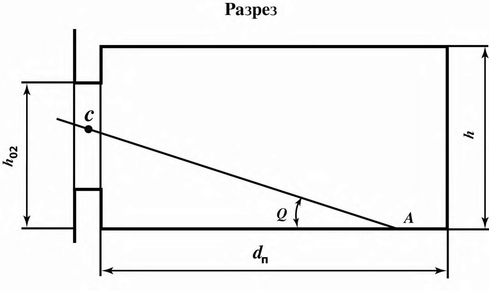
- исследуемое помещение; - экранирующее здание;
- С -расчетная точка в разрезе;
- С ´ - расчетная точка в плане;
I-II - участок экранирующего здания, видимый из расчетной точки через световой проем; z 1 - индекс экранирующего здания в плане; z 2 -индекс экранирующего здания в разрезе
Примечание - Другие обозначения см. в разделе 4.
Рисунок А.1 -Схема № 1 к определению параметров застройки при параллельном расположении зданий в застройке
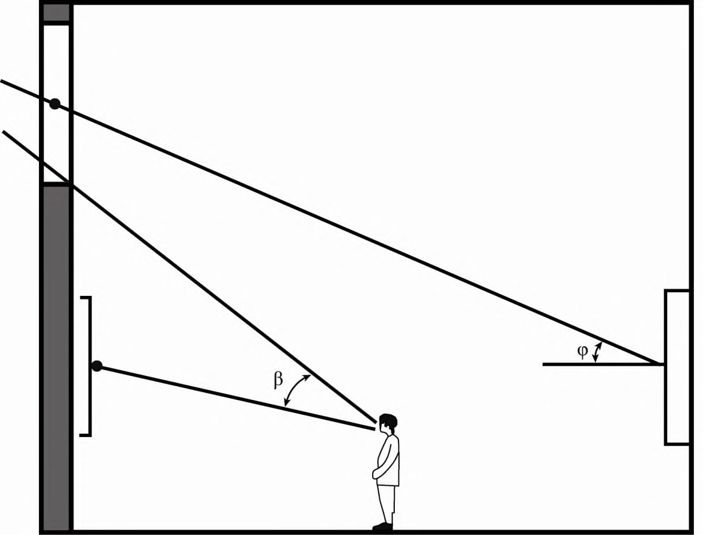
С
- расчетная точка в разрезе;
С
´
- расчетная точка в плане;
I-II - участок экранирующего здания, видимый из расчетной точки через световой проем
Примечание - Другие обозначения см. в разделе 4 и А.3.
Рисунок А.2 - Схема № 2 к определению параметров застройки при расположении экранирующего здания под углом к исследуемому зданию
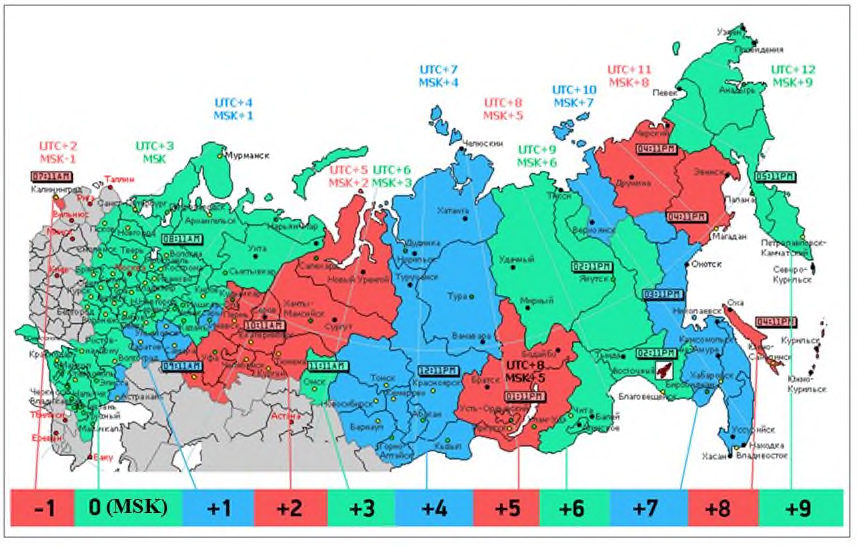
С
- расчетная точка в разрезе;
С
´
- расчетная точка в плане;
I-II - участок экранирующего здания, видимый из расчетной точки через световой проем
Примечание - Другие обозначения см. в разделе 4 и А.3.
Рисунок А.3 - Определение числа лучей в плане для схемы № 2 при расположении экранирующего здания под углом к исследуемому зданию
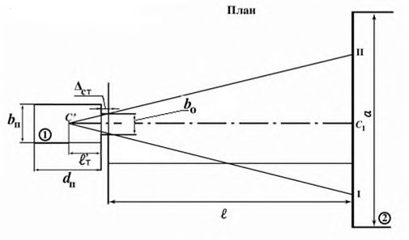
- исследуемое помещение; - экранирующее здание;
С -расчетная точка в разрезе; С ´ - расчетная точка в плане; I-II-III - участки экранирующего здания, видимые из расчетной точки через световой проем Примечание - Другие обозначения см. в разделе 4 и А.3.
Рисунок А.4 - Схема № 3 к определению параметров Г-образного расположения зданий в застройке
С -расчетная точка в разрезе; С ´ - расчетная точка в плане; I-II - участок экранирующего здания, видимый из расчетной точки через световой проем Примечание - Другие обозначения см. в разделе 4 и А.3.

Рисунок А.5 - Определение числа лучей в плане для схемы № 3 при Г-образном расположении зданий в застройке

- исследуемое помещение; и - экранирующие здания;
С -расчетная точка в разрезе; С ´ - расчетная точка в плане; а 1 и а 2 -длины участков экранирующего здания; I-II - участки экранирующего здания, видимые из расчетной точки через световой проем
Примечание - Другие обозначения см. в разделе 4 и А.3.
Рисунок А.6 - Схема № 4 к определению параметров застройки со сложной конфигурацией экранирующего здания в плане
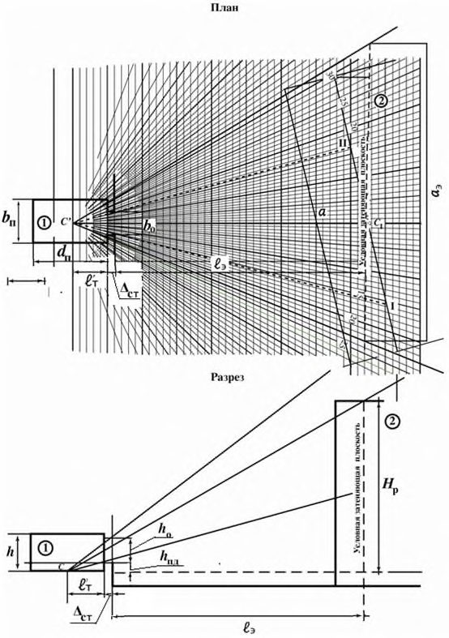
- исследуемое помещение; и - участки здания с различной высотой;
С -расчетная точка в разрезе; С ´ - расчетная точка в плане;
I-II, III-IV - участки экранирующего здания, видимые из расчетной точки через световой проем
Примечание - Другие обозначения см. в разделе 4 и А.3.
Рисунок А.7 - Схема № 5 к определению параметров застройки со сложной конфигурацией по высоте экранирующего здания
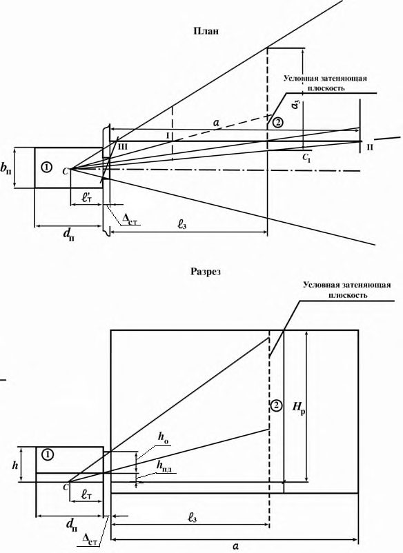
- исследуемое помещение; , , , , - экранирующие здания;
С -расчетная точка в разрезе; С ´ - расчетная точка в плане;
I-II - участки экранирующих зданий, видимые из расчетной точки через световой проем
Примечание - Другие обозначения см. в разделе 4 и А.3.
Рисунок А.8 - Схема № 6 к определению параметров застройки со смешанным расположением экранирующих зданий
Таблица А.1 Значения коэффициента q (γ)
| Угол возвышения середины участка небосвода γ (угловая высота среднего луча i -го участка небосвода), видимого из расчетной точки через световой проем в разрезе помещения, град | Значения коэффициента q (γ) |
|---|---|
| 2 6 10 14 18 22 26 30 34 38 42 46 50 54 58 62 66 70 74 78 82 86 90 | 0,429 0,431 0,459 0,524 0,607 0,694 0,777 0,852 0,920 0,980 1,032 1,077 1,117 1,151 1,181 1,206 1,227 1,244 1,257 1,268 1,275 1,280 1,281 |
Примечания
1 При значениях угловых высот среднего луча, отличных от приведенных в настоящей таблице, значения коэффициента q( γ) определяют интерполяцией.
2 В практических расчетах угловую высоту среднего луча участка небосвода, видимого из расчетной точки через световой проем в разрезе помещения, следует заменять угловой высотой середины участка небосвода, видимого из расчетной точки через световой проем.
3 При разработке настоящей таблицы частично использованы данные ГОСТ Р 57260.
СП .1325800.2017
Таблица А.2 -Значения средней относительной яркости фасадов экранирующих (противостоящих) зданий b ф с параллельным их расположением по схеме № 1
| Средневзвешенный коэффициент отражения фасада ф | Отношение расстояния между зданиями l к длине противостоящего здания а | Значения средней относительной яркости фасада b ф противостоящего здания при отношении длины противостоящего здания а к его расчетной высоте H р | Значения средней относительной яркости фасада b ф противостоящего здания при отношении длины противостоящего здания а к его расчетной высоте H р | Значения средней относительной яркости фасада b ф противостоящего здания при отношении длины противостоящего здания а к его расчетной высоте H р | Значения средней относительной яркости фасада b ф противостоящего здания при отношении длины противостоящего здания а к его расчетной высоте H р | Значения средней относительной яркости фасада b ф противостоящего здания при отношении длины противостоящего здания а к его расчетной высоте H р | Значения средней относительной яркости фасада b ф противостоящего здания при отношении длины противостоящего здания а к его расчетной высоте H р | Значения средней относительной яркости фасада b ф противостоящего здания при отношении длины противостоящего здания а к его расчетной высоте H р |
|---|---|---|---|---|---|---|---|---|
| Средневзвешенный коэффициент отражения фасада ф | Отношение расстояния между зданиями l к длине противостоящего здания а | 0,25 и менее | 0,50 | 1,00 | 1,50 | 2,00 | 3,00 | 4,00 и более |
| 0,6 | 2,00 и более | 0,29 | 0,33 | 0,37 | 0,39 | 0,40 | 0,41 | 0,41 |
| 0,6 | 1,00 | 0,24 | 0,27 | 0,32 | 0,34 | 0,35 | 0,36 | 0,36 |
| 0,6 | 0,50 | 0,20 | 0,21 | 0,25 | 0,28 | 0,30 | 0,32 | 0,33 |
| 0,6 | 0,25 и менее | 0,17 | 0,17 | 0,18 | 0,21 | 0,23 | 0,27 | 0,29 |
| 0,5 | 2,00 и более | 0,24 | 0,27 | 0,31 | 0,32 | 0,33 | 0,34 | 0,34 |
| 0,5 | 1,00 | 0,19 | 0,22 | 0,26 | 0,28 | 0,28 | 0,29 | 0,30 |
| 0,5 | 0,50 | 0,15 | 0,16 | 0,19 | 0,22 | 0,24 | 0,26 | 0,27 |
| 0,5 | 0,25 и менее | 0,12 | 0,12 | 0,14 | 0,16 | 0,18 | 0,21 | 0,23 |
| 0,4 | 2,00 и более | 0,19 | 0,22 | 0,24 | 0,25 | 0,26 | 0,27 | 0,27 |
| 0,4 | 1,00 | 0,15 | 0,17 | 0,20 | 0,22 | 0,22 | 0,23 | 0,24 |
| 0,4 | 0,50 | 0,11 | 0,12 | 0,15 | 0,17 | 0,19 | 0,20 | 0,21 |
| 0,4 | 0,25 и менее | 0,09 | 0,09 | 0,10 | 0,12 | 0,14 | 0,16 | 0,18 |
| 0,3 | 2,00 и более | 0,14 | 0,16 | 0,18 | 0,19 | 0,20 | 0,20 | 0,20 |
| 0,3 | 1,00 | 0,11 | 0,12 | 0,15 | 0,16 | 0,17 | 0,17 | 0,18 |
| 0,3 | 0,50 | 0,08 | 0,08 | 0,10 | 0,12 | 0,13 | 0,15 | 0,15 |
| 0,3 | 0,25 и менее | 0,06 | 0,06 | 0,07 | 0,08 | 0,10 | 0,12 | 0,13 |
| 0,2 | 2,00 и более | 0,09 | 0,11 | 0,12 | 0,13 | 0,13 | 0,13 | 0,14 |
| 0,2 | 1,00 | 0,07 | 0,08 | 0,10 | 0,10 | 0,11 | 0,11 | 0,12 |
| 0,2 | 0,50 | 0,05 | 0,05 | 0,07 | 0,08 | 0,09 | 0,10 | 0,10 |
| 0,2 | 0,25 и менее | 0,04 | 0,04 | 0,04 | 0,05 | 0,06 | 0,07 | 0,08 |
Примечание - При значениях параметров ф, l / а, а / Нp , отличных от приведенных в настоящей таблице, коэффициент b ф определяют интерполяцией и экстраполяцией.
Таблица А.3 -Значения коэффициента отражения некоторых строительных материалов и средневзвешенного коэффициента отражения фасада ф
| Материал | Коэффициент отражения материала | Средневзвешенный коэффициент отражения фасада ф |
|---|---|---|
| Белая фасадная краска, белый мрамор | 0,70 | 0,55 |
| Светло-серый бетон, белый силикатный кирпич, очень светлые фасадные краски | 0,60 | 0,48 |
| Серый бетон, известняк, желтый песчаник, светло-зеленая, бежевая, светло-серая фасадная краска, светлые породы мрамора | 0,50 | 0,41 |
| Серый офактуренный бетон, серая фасадная краска, светлое дерево, серый силикатный кирпич | 0,40 | 0,34 |
| Розовый силикатный кирпич, темно- голубая, темно-бежевая, светло- коричневая фасадная краска, потемневшее дерево | 0,30 | 0,27 |
| Темно-серый мрамор, гранит, темно- коричневая, синяя, темно-зеленая, красная фасадная краска | 0,20 | 0,20 |
Таблица А.4 Значения r o для УРП
| Отношение расстояния расчетной точки от внутренней поверхности наружной стены l т к глубине | Средневзвешенный коэффициент отражения пола, стен и потолка ρ ср | Средневзвешенный коэффициент отражения пола, стен и потолка ρ ср | Средневзвешенный коэффициент отражения пола, стен и потолка ρ ср | Средневзвешенный коэффициент отражения пола, стен и потолка ρ ср | Средневзвешенный коэффициент отражения пола, стен и потолка ρ ср | Средневзвешенный коэффициент отражения пола, стен и потолка ρ ср | Средневзвешенный коэффициент отражения пола, стен и потолка ρ ср | Средневзвешенный коэффициент отражения пола, стен и потолка ρ ср | Средневзвешенный коэффициент отражения пола, стен и потолка ρ ср | Средневзвешенный коэффициент отражения пола, стен и потолка ρ ср | Средневзвешенный коэффициент отражения пола, стен и потолка ρ ср | Средневзвешенный коэффициент отражения пола, стен и потолка ρ ср | Средневзвешенный коэффициент отражения пола, стен и потолка ρ ср | Средневзвешенный коэффициент отражения пола, стен и потолка ρ ср | Средневзвешенный коэффициент отражения пола, стен и потолка ρ ср | Средневзвешенный коэффициент отражения пола, стен и потолка ρ ср | Средневзвешенный коэффициент отражения пола, стен и потолка ρ ср | Средневзвешенный коэффициент отражения пола, стен и потолка ρ ср | Средневзвешенный коэффициент отражения пола, стен и потолка ρ ср | |
|---|---|---|---|---|---|---|---|---|---|---|---|---|---|---|---|---|---|---|---|---|
| Отношение глубины помещения d п к высоте от уровня | Отношение расстояния расчетной точки от внутренней поверхности наружной стены l т к глубине | 0,65 | 0,65 | 0,65 | 0,60 | 0,60 | 0,60 | 0,55 | 0,55 | 0,55 | 0,50 | 0,50 | 0,50 | 0,45 | 0,45 | 0,45 | ||||
| Отношение глубины помещения d п к высоте от уровня | Отношение расстояния расчетной точки от внутренней поверхности наружной стены l т к глубине | Отношение ширины помещения b п к его глубине d п | Отношение ширины помещения b п к его глубине d п | Отношение ширины помещения b п к его глубине d п | Отношение ширины помещения b п к его глубине d п | Отношение ширины помещения b п к его глубине d п | Отношение ширины помещения b п к его глубине d п | Отношение ширины помещения b п к его глубине d п | Отношение ширины помещения b п к его глубине d п | Отношение ширины помещения b п к его глубине d п | Отношение ширины помещения b п к его глубине d п | Отношение ширины помещения b п к его глубине d п | Отношение ширины помещения b п к его глубине d п | Отношение ширины помещения b п к его глубине d п | Отношение ширины помещения b п к его глубине d п | Отношение ширины помещения b п к его глубине d п | Отношение ширины помещения b п к его глубине d п | Отношение ширины помещения b п к его глубине d п | Отношение ширины помещения b п к его глубине d п | Отношение ширины помещения b п к его глубине d п |
| верха окна h 01 | помещения | 0,5 | 1,0 | 2,0 | 0,5 | 1,0 | 2,0 | 0,5 | 1,0 | 2,0 | 0,5 | 1,0 | 2,0 | 0,5 | 1,0 | 2,0 | 0,5 | 1,0 | 2,0 | |
| 1,00 | d п 0,10 | 1,04 | 1,03 | 1,03 | 1,03 | 1,03 | 1,02 | 1,03 | 1,03 | 1,02 | 1,02 | 1,02 | 1,02 | 1,02 | 1,02 | 1,01 | 1,01 | 1,01 | 1,01 | |
| 1,00 | 0,50 | 1,75 | 1,67 | 1,52 | 1,66 | 1,59 | 1,46 | 1,56 | 1,51 | 1,39 | 1,47 | 1,42 | 1,33 | 1,37 | 1,34 | 1,26 | 1,19 | 1,17 | 1,13 | |
| 1,00 | 0,90 | 3,12 | 2,91 | 2,48 | 2,86 | 2,67 | 2,30 | 2,59 | 2,43 | 2,11 | 2,33 | 2,19 | 1,93 | 2,06 | 1,95 | 1,74 | 1,53 | 1,48 | 1,37 | |
| 3,00 | 0,10 | 1,11 | 1,10 | 1,08 | 1,10 | 1,09 | 1,07 | 1,08 | 1,08 | 1,06 | 1,07 | 1,06 | 1,05 | 1,06 | 1,05 | 1,04 | 1,03 | 1,03 | 1,02 | |
| 3,00 | 0,20 | 1,36 | 1,33 | 1,25 | 1,32 | 1,29 | 1,22 | 1,27 | 1,25 | 1,19 | 1,23 | 1,20 | 1,16 | 1,18 | 1,16 | 1,13 | 1,09 | 1,08 | 1,06 | |
| 3,00 | 0,30 | 1,82 | 1,74 | 1,57 | 1,72 | 1,64 | 1,50 | 1,61 | 1,55 | 1,43 | 1,51 | 1,46 | 1,36 | 1,41 | 1,37 | 1,29 | 1,20 | 1,18 | 1,14 | |
| 3,00 | 0,40 | 2,46 | 2,32 | 2,02 | 2,28 | 2,15 | 1,90 | 2,10 | 1,99 | 1,77 | 1,91 | 1,82 | 1,64 | 1,73 | 1,66 | 1,51 | 1,37 | 1,33 | 1,26 | |
| 3,00 | 0,50 | 3,25 | 3,02 | 2,57 | 2,97 | 2,77 | 2,38 | 2,68 | 2,52 | 2,18 | 2,40 | 2,26 | 1,98 | 2,12 | 2,01 | 1,79 | 1,56 | 1,51 | 1,39 | |
| 3,00 | 0,60 | 4,14 | 3,82 | 3,20 | 3,75 | 3,47 | 2,92 | 3,35 | 3,12 | 2,65 | 2,96 | 2,76 | 2,37 | 2,57 | 2,41 | 2,10 | 1,78 | 1,71 | 1,55 | |
| 3,00 | 0,70 | 5,12 | 4,71 | 3,89 | 4,61 | 4,25 | 3,52 | 4,09 | 3,78 | 3,16 | 3,58 | 3,32 | 2,80 | 3,06 | 2,86 | 2,44 | 2,03 | 1,93 | 1,72 | |
| 3,00 | 0,80 | 6,20 | 5,68 | 4,64 | 5,55 | 5,09 | 4,18 | 4,90 | 4,51 | 3,73 | 4,25 | 3,92 | 3,27 | 3,60 | 3,34 2,82 | 2,30 | 2,17 | 1,91 | ||
| 3,00 | 0,90 | 7,36 | 6,73 | 5,45 | 6,57 | 6,01 | 4,90 | 5,77 | 5,29 | 4,34 | 4,98 | 4,58 | 3,78 | 4,18 | 3,86 | 3,23 | 2,59 | 2,43 | 2,11 | |
| 5,00 | 0,10 | 1,19 | 1,17 | 1,13 | 1,16 | 1,15 | 1,11 | 1,14 | 1,13 | 1,10 | 1,12 | 1,11 | 1,08 | 1,09 | 1,08 | 1,07 | 1,05 | 1,04 | 1,03 |
| 5,00 | 0,20 | 1,61 | 1,55 | 1,42 | 1,53 | 1,48 | 1,37 | 1,45 | 1,41 | 1,32 | 1,38 | 1,34 | 1,27 | 1,30 | 1,27 | 1,21 | 1,15 | 1,14 | 1,11 |
|---|---|---|---|---|---|---|---|---|---|---|---|---|---|---|---|---|---|---|---|
| 5,00 | 0,30 | 2,36 | 2,23 | 1,96 | 2,19 | 2,07 | 1,84 | 2,02 | 1,92 | 1,72 | 1,85 | 1,77 | 1,60 | 1,68 | 1,61 | 1,48 | 1,34 | 1,31 | 1,24 |
| 5,00 | 0,40 | 3,44 | 3,19 | 2,71 | 3,13 | 2,92 | 2,49 | 2,83 | 2,65 | 2,28 | 2,52 | 2,37 | 2,07 | 2,22 | 2,10 | 1,85 | 1,61 | 1,55 | 1,43 |
| 5,00 | 0,50 | 4,74 | 4,37 | 3,62 | 4,28 | 3,95 | 3,29 | 3,81 | 3,53 | 2,97 | 3,34 | 3,11 | 2,64 | 2,87 | 2,68 | 2,31 | 1,94 | 1,84 | 1,66 |
| 5,00 | 0,60 | 6,23 | 5,71 | 4,66 | 5,58 | 5,12 | 4,20 | 4,92 | 4,53 | 3,75 | 4,27 | 3,94 | 3,29 | 3,61 | 3,35 | 2,83 | 2,31 | 2,18 | 1,92 |
| 5,00 | 0,70 | 7,87 | 7,18 | 5,81 | 7,01 | 6,41 | 5,21 | 6,15 | 5,64 | 4,61 | 5,29 | 4,86 | 4,01 | 4,44 | 4,09 | 3,40 | 2,72 | 2,55 | 2,20 |
| 5,00 | 0,80 | 9,66 | 8,80 | 7,06 | 8,58 | 7,82 | 6,31 | 7,50 | 6,85 | 5,55 | 6,41 | 5,87 | 4,79 | 5,33 | 4,90 | 4,03 | 3,17 | 2,95 | 2,52 |
| 5,00 | 0,90 | 11,60 10,54 | 11,60 10,54 | 8,42 | 10,28 | 9,35 | 7,49 | 8,95 | 8,16 | 6,57 | 7,63 | 6,96 | 5,64 | 6,30 | 5,77 | 4,71 | 3,65 | 3,39 | 2,86 |
Примечания
- 1 При промежуточных значениях d п/ h 01, l т / d п, b п/ d п и ср коэффициент r o определяют интерполяцией и экстраполяцией.
- 2 Средневзвешенный коэффициент отражения помещения (пола, стен, потолка и окна) рассчитывают по формуле
где п, ст , пот, ρо - коэффициенты отражения материала пола, стен, потолка и окна соответственно;
S п, S ст , S пот, S о - площадь пола, стен, потолка и окна соответственно.
Если коэффициенты отражения света отделки поверхностей помещения неизвестны, то для помещений жилых и общественных зданий средневзвешенный коэффициент отражения ср следует принимать равным 0,55.
Таблица А.5 Значения r o на уровне пола
| Отношение расстояния расчетной точки от внутренней поверхности наружной | Средневзвешенный коэффициент отражения пола, стен и потолка ρ ср | Средневзвешенный коэффициент отражения пола, стен и потолка ρ ср | Средневзвешенный коэффициент отражения пола, стен и потолка ρ ср | Средневзвешенный коэффициент отражения пола, стен и потолка ρ ср | Средневзвешенный коэффициент отражения пола, стен и потолка ρ ср | Средневзвешенный коэффициент отражения пола, стен и потолка ρ ср | Средневзвешенный коэффициент отражения пола, стен и потолка ρ ср | Средневзвешенный коэффициент отражения пола, стен и потолка ρ ср | Средневзвешенный коэффициент отражения пола, стен и потолка ρ ср | Средневзвешенный коэффициент отражения пола, стен и потолка ρ ср | Средневзвешенный коэффициент отражения пола, стен и потолка ρ ср | Средневзвешенный коэффициент отражения пола, стен и потолка ρ ср | Средневзвешенный коэффициент отражения пола, стен и потолка ρ ср | Средневзвешенный коэффициент отражения пола, стен и потолка ρ ср | Средневзвешенный коэффициент отражения пола, стен и потолка ρ ср | Средневзвешенный коэффициент отражения пола, стен и потолка ρ ср | Средневзвешенный коэффициент отражения пола, стен и потолка ρ ср | Средневзвешенный коэффициент отражения пола, стен и потолка ρ ср | Средневзвешенный коэффициент отражения пола, стен и потолка ρ ср | |
|---|---|---|---|---|---|---|---|---|---|---|---|---|---|---|---|---|---|---|---|---|
| Отношение глубины помещения d п к высоте | Отношение расстояния расчетной точки от внутренней поверхности наружной | 0,65 | 0,65 | 0,65 | 0,60 | 0,60 | 0,60 | 0,55 | 0,55 | 0,55 | 0,50 | 0,50 | 0,50 | 0,45 | 0,45 | 0,45 | ||||
| Отношение глубины помещения d п к высоте | Отношение расстояния расчетной точки от внутренней поверхности наружной | Отношение ширины помещения b п к его глубине d п | Отношение ширины помещения b п к его глубине d п | Отношение ширины помещения b п к его глубине d п | Отношение ширины помещения b п к его глубине d п | Отношение ширины помещения b п к его глубине d п | Отношение ширины помещения b п к его глубине d п | Отношение ширины помещения b п к его глубине d п | Отношение ширины помещения b п к его глубине d п | Отношение ширины помещения b п к его глубине d п | Отношение ширины помещения b п к его глубине d п | Отношение ширины помещения b п к его глубине d п | Отношение ширины помещения b п к его глубине d п | Отношение ширины помещения b п к его глубине d п | Отношение ширины помещения b п к его глубине d п | Отношение ширины помещения b п к его глубине d п | Отношение ширины помещения b п к его глубине d п | Отношение ширины помещения b п к его глубине d п | Отношение ширины помещения b п к его глубине d п | Отношение ширины помещения b п к его глубине d п |
| УРП до верха окна h 01 | стены l т глубине помещения | 0,5 | 1,0 | 2,0 | 0,5 | 1,0 | 2,0 | 0,5 | 1,0 | 2,0 | 0,5 | 1,0 | 2,0 | 0,5 | 1,0 | 2,0 | 0,5 | 1,0 | 2,0 | |
| 1,00 | d п 0,10 | 1,05 | 1,05 | 1,05 | 1,05 | 1,05 | 1,05 | 1,05 | 1,05 | 1,05 | 1,04 | 1,04 | 1,04 | 1,04 | 1,04 | 1,04 | 1,03 | 1,03 | 1,03 | |
| 1,00 | 0,50 | 1,54 | 1,48 | 1,36 | 1,46 | 1,41 | 1,31 | 1,39 | 1,34 | 1,25 | 1,31 | 1,27 | 1,20 | 1,23 | 1,20 | 1,14 | 1,08 | 1,06 | 1,03 | |
| 1,00 | 0,90 | 2,53 | 2,36 | 2,03 | 2,32 | 2,17 | 1,88 | 2,10 | 1,98 | 1,72 | 1,89 | 1,79 | 1,57 | 1,68 | 1,59 | 1,42 | 1,25 | 1,21 | 1,12 | |
| 3,00 | 0,10 | 1,07 | 1,07 | 1,07 | 1,07 | 1,07 | 1,07 | 1,06 | 1,06 | 1,06 | 1,06 | 1,06 | 1,06 | 1,05 | 1,05 | 1,05 | 1,05 | 1,05 | 1,05 | |
| 3,00 | 0,20 | 1,05 | 1,05 | 1,05 | 1,04 | 1,04 | 1,04 | 1,04 | 1,04 | 1,04 | 1,03 | 1,03 | 1,03 | 1,03 | 1,03 | 1,03 | 1,02 | 1,02 | 1,02 | |
| 3,00 | 0,30 | 1,36 | 1,33 | 1,26 | 1,32 | 1,29 | 1,23 | 1,27 | 1,24 | 1,19 | 1,22 | 1,20 | 1,16 | 1,17 | 1,16 | 1,12 | 1,08 | 1,07 | 1,05 | |
| 3,00 | 0,40 | 1,98 | 1,88 | 1,68 | 1,85 | 1,77 | 1,59 | 1,73 | 1,65 | 1,50 | 1,60 | 1,54 | 1,41 | 1,47 | 1,42 | 1,32 | 1,21 | 1,19 | 1,14 | |
| 3,00 | 0,50 | 2,74 | 2,56 | 2,21 | 2,51 | 2,36 | 2,05 | 2,29 | 2,16 | 1,89 | 2,06 | 1,95 | 1,73 | 1,84 | 1,75 | 1,57 | 1,38 | 1,34 | 1,25 | |
| 3,00 | 0,60 | 3,54 | 3,28 | 2,76 | 3,21 | 2,98 | 2,53 | 2,88 | 2,68 | 1,26 | 2,55 | 2,39 | 2,06 | 2,22 | 2,09 | 1,83 | 1,56 | 1,50 | 1,37 | |
| 3,00 | 0,70 | 4,34 | 3,99 | 3,31 | 3,90 | 3,60 | 3,00 | 3,47 | 3,22 | 2,70 | 3,04 | 2,83 | 2,40 | 2,61 | 2,44 | 2,09 | 1,74 | 1,66 | 1,49 | |
| 3,00 | 0,80 | 5,13 | 4,71 | 3,86 | 4,60 | 4,23 | 3,48 | 4,06 | 3,74 | 3,11 | 3,53 | 3,26 | 2,73 | 2,99 | 2,78 2,36 | 1,92 | 1,82 | 1,61 | ||
| 3,00 | 0,90 | 5,93 | 5,42 | 4,41 | 5,29 | 4,85 | 3,96 | 4,65 | 4,27 | 3,51 | 4,02 | 3,70 | 3,06 | 3,38 | 3,12 | 2,62 | 2,10 | 1,98 | 1,72 | |
| 5,00 | 0,10 | 1,09 | 1,09 | 1,09 | 1,09 | 1,09 | 1,09 | 1,08 | 1,08 | 1,08 | 1,08 | 1,07 | 1,07 | 1,07 | 1,07 | 1,07 | 1,06 | 1,06 | 1,06 | |
| 5,00 | 0,20 | 1,07 | 1,07 | 1,07 | 1,06 | 1,06 | 1,06 | 1,06 | 1,06 | 1,06 | 1,05 | 1,05 | 1,05 | 1,04 1,04 | 1,04 | 1,03 | 1,03 | 1,03 | ||
| 5,00 | 0,30 | 1,61 | 1,55 | 1,44 | 1,53 | 1,48 | 1,38 | 1,46 | 1,41 | 1,33 | 1,38 | 1,34 | 1,27 | 1,30 1,27 | 1,22 | 1,15 | 1,13 | 1,10 | ||
| 5,00 | 0,40 | 2,66 | 2,49 | 2,16 | 2,45 | 2,30 | 2,01 | 2,24 | 2,11 | 1,86 | 2,02 | 1,92 | 1,71 | 1,81 | 1,73 1,56 | 1,39 | 1,35 | 1,27 | ||
| 5,00 | 0,50 | 3,94 | 3,65 | 3,05 | 3,57 | 3,31 | 2,79 | 3,19 | 2,97 | 2,52 | 2,82 | 2,63 | 2,26 | 2,44 | 2,29 | 2,00 | 1,69 | 1,62 | 1,47 |
| 5,00 | 0,60 | 5,29 | 4,85 | 3,99 | 4,74 | 4,36 | 3,60 | 4,19 | 3,87 | 3,22 | 3,65 | 3,38 | 2,83 | 3,10 | 2,88 | 2,45 | 2,01 | 1,90 | 1,68 |
|---|---|---|---|---|---|---|---|---|---|---|---|---|---|---|---|---|---|---|---|
| 5,00 | 0,70 | 6,64 | 6,06 | 4,92 | 5,92 | 5,42 | 4,42 | 5,20 | 4,77 | 3,91 | 4,48 | 4,12 | 3,41 | 3,76 | 3,48 | 2,91 | 2,32 | 2,18 | 1,90 |
| 5,00 | 0,80 | 7,98 | 7,27 | 5,85 | 7,09 | 6,47 | 5,23 | 6,20 | 5,67 | 4,61 | 5,31 | 4,87 | 3,98 | 4,42 | 4,07 | 3,36 | 2,64 | 2,46 | 2,11 |
| 5,00 | 0,90 | 9,32 | 8,48 | 6,79 | 8,26 | 7,52 | 6,04 | 7,20 | 6,57 | 5,30 | 6,14 | 5,61 | 4,56 | 5,08 | 4,66 | 3,81 | 2,96 | 2,75 | 2,32 |
Примечания
- 1 При промежуточных значениях d п/ h 01, l т / d п, b п/ d п и ср коэффициент r o определяют интерполяцией и экстраполяцией.
- 2 Средневзвешенный коэффициент отражения помещения (пола, стен, потолка и окна) рассчитывают по формуле
пот, ρо - коэффициенты отражения материала пола, стен, потолка и окна соответственно; где п, ст , S п, S ст , S пот, S о - площадь пола, стен, потолка и окна соответственно.
Если коэффициенты отражения света отделки поверхностей помещения неизвестны, то для помещений жилых и общественных зданий средневзвешенный коэффициент отражения ср следует принимать равным 0,55.
СП .1325800.2017
Таблица А.6 -Значения коэффициента К зд0 для схемы № 1 (рисунок А.1) с параллельным расположением зданий
| Средневзвешенный коэффициент отражения | Средневзвешенный коэффициент отражения | Индекс противостоящего здания в плане z 1 | Значения коэффициента К зд0 при значениях индекса противостоящего здания в разрезе z 2 | Значения коэффициента К зд0 при значениях индекса противостоящего здания в разрезе z 2 | Значения коэффициента К зд0 при значениях индекса противостоящего здания в разрезе z 2 | Значения коэффициента К зд0 при значениях индекса противостоящего здания в разрезе z 2 |
|---|---|---|---|---|---|---|
| фасада экранирующего здания ф | внутренней поверхности помещения ср | Индекс противостоящего здания в плане z 1 | 0,10 и менее | 0,50 1,00 | 1,50 2,00 | 4,00 и более |
| Отношение расстояния расчетной точки от наружной стены к глубине помещения l т / d п = 0,90 | Отношение расстояния расчетной точки от наружной стены к глубине помещения l т / d п = 0,90 | Отношение расстояния расчетной точки от наружной стены к глубине помещения l т / d п = 0,90 | Отношение расстояния расчетной точки от наружной стены к глубине помещения l т / d п = 0,90 | Отношение расстояния расчетной точки от наружной стены к глубине помещения l т / d п = 0,90 | Отношение расстояния расчетной точки от наружной стены к глубине помещения l т / d п = 0,90 | Отношение расстояния расчетной точки от наружной стены к глубине помещения l т / d п = 0,90 |
| 0,60 | 0,55 | 0,5 и менее | 1,00 | 1,65 1,73 | 1,69 1,42 | 1,30 |
| 0,60 | 0,55 | 2,0 | 1,00 | 1,54 1,63 | 1,59 1,39 | 1,28 |
| 0,60 | 0,55 | 4,0 и более | 1,00 | 1,41 1,50 1,45 | 1,34 | 1,25 |
| 0,60 | 0,50 | 0,5 и менее | 1,00 | 1,58 1,67 1,62 | 1,38 | 1,28 |
| 0,60 | 0,50 | 2,0 | 1,00 | 1,48 1,57 1,53 | 1,35 | 1,26 |
| 0,60 | 0,50 | 4,0 и более | 1,00 | 1,36 1,45 1,40 | 1,30 | 1,23 |
| 0,60 | 0,45 | 0,5 и менее | 1,00 | 1,51 1,60 1,56 | 1,34 | 1,26 |
| 0,60 | 0,45 | 2,0 | 1,00 | 1,42 1,51 1,47 | 1,31 | 1,24 |
| 0,60 | 0,45 | 4,0 и более | 1,00 | 1,30 1,39 1,35 | 1,26 | 1,21 |
| 0,60 | 0,40 | 0,5 и менее | 1,00 | 1,45 1,54 1,49 | 1,30 | 1,24 |
| 0,60 | 0,40 | 2,0 | 1,00 | 1,36 1,45 1,41 | 1,26 | 1,22 |
| 0,60 | 0,40 | 4,0 и более | 1,00 | 1,25 1,34 1,29 | 1,22 | 1,19 |
| 0,50 | 0,55 | 0,5 и менее | 1,00 | 1,76 1,85 1,80 | 1,50 | 1,34 |
| 0,50 | 0,55 | 2,0 | 1,00 | 1,66 1,75 1,70 | 1,47 | 1,32 |
| 0,50 | 0,55 | 4,0 и более | 1,00 | 1,52 1,61 1,57 | 1,43 | 1,30 |
| 0,50 | 0,50 | 0,5 и менее | 1,00 | 1,69 1,78 1,74 | 1,46 | 1,32 |
| 0,50 | 0,50 | 2,0 | 1,00 | 1,60 1,69 1,64 | 1,43 | 1,30 |
| 0,50 | 0,50 | 4,0 и более | 1,00 | 1,47 1,56 1,51 | 1,39 | 1,28 |
| 0,50 | 0,45 | 0,5 и менее | 1,00 | 1,63 1,72 1,67 | 1,42 | 1,30 |
| 0,50 | 0,45 | 2,0 | 1,00 | 1,54 1,63 | 1,58 1,39 | 1,28 |
| 0,50 | 0,45 | 4,0 и более | 1,00 | 1,42 1,51 1,46 | 1,34 | 1,26 |
| 0,50 | 0,40 | 0,5 и менее | 1,00 | 1,56 1,65 1,60 | 1,38 | 1,28 |
| 0,50 | 0,40 | 2,0 | 1,00 | 1,48 1,57 | 1,52 1,35 | 1,26 |
| 0,50 | 0,40 | 4,0 и более | 1,00 | 1,36 1,45 1,41 | 1,30 | 1,24 |
| 0,40 | 0,55 | 0,5 и менее | 1,00 | 1,87 1,96 1,91 | 1,59 | 1,38 |
| 0,40 | 0,55 | 2,0 | 1,00 | 1,77 1,86 1,81 | 1,55 | 1,36 |
| 0,40 | 0,55 | 4,0 и более | 1,00 | 1,64 1,72 | 1,68 1,51 | 1,34 |
| 0,40 | 0,50 | 0,5 и менее | 1,00 | 1,81 1,89 | 1,85 1,55 | 1,36 |
| 0,40 0,40 | 0,50 0,50 | 2,0 4,0 и более | 1,00 1,00 | 1,71 1,80 1,75 1,58 | 1,51 1,67 1,63 1,47 | 1,34 1,32 |
| Средневзвешенный коэффициент отражения | Средневзвешенный коэффициент отражения | Индекс противостоящего здания в плане z 1 | Значения коэффициента К зд0 при значениях индекса противостоящего здания в разрезе z 2 | Значения коэффициента К зд0 при значениях индекса противостоящего здания в разрезе z 2 | Значения коэффициента К зд0 при значениях индекса противостоящего здания в разрезе z 2 |
|---|---|---|---|---|---|
| фасада экранирующего здания ф | внутренней поверхности помещения ср | Индекс противостоящего здания в плане z 1 | 0,10 и менее | 0,50 1,00 1,50 2,00 | 4,00 и более |
| 0,40 | 0,45 | 0,5 и менее | 1,00 | 1,74 1,83 1,78 1,51 | 1,34 |
| 0,40 | 0,45 | 2,0 | 1,00 | 1,65 1,74 1,69 1,47 | 1,32 |
| 0,40 | 0,45 | 4,0 и более | 1,00 | 1,53 1,62 1,57 1,43 | 1,30 |
| 0,40 | 0,40 | 0,5 и менее | 1,00 | 1,67 1,76 1,72 1,47 | 1,32 |
| 0,40 | 0,40 | 2,0 | 1,00 | 1,59 1,68 1,63 1,43 | 1,31 |
| 0,40 | 0,40 | 4,0 и более | 1,00 | 1,48 1,56 1,52 1,39 | 1,28 |
| 0,30 | 0,55 | 0,5 и менее | 1,00 | 1,98 2,07 2,03 1,67 | 1,43 |
| 0,30 | 0,55 | 2,0 | 1,00 | 1,88 1,97 1,93 1,64 | 1,41 |
| 0,30 | 0,55 | 4,0 и более | 1,00 | 1,75 1,84 1,79 1,59 | 1,38 |
| 0,30 | 0,50 | 0,5 и менее | 1,00 | 1,92 2,01 1,96 1,63 | 1,41 |
| 0,30 | 0,50 | 2,0 | 1,00 | 1,82 1,91 1,87 1,60 | 1,39 |
| 0,30 | 0,50 | 4,0 и более | 1,00 | 1,70 1,78 1,74 1,55 | 1,36 |
| 0,30 | 0,45 | 0,5 и менее | 1,00 | 1,85 1,94 1,90 1,59 | 1,39 |
| 0,30 | 0,45 | 2,0 | 1,00 | 1,76 1,85 1,81 1,56 | 1,37 |
| 0,30 | 0,45 | 4,0 и более | 1,00 | 1,64 1,73 1,69 1,51 | 1,34 |
| 0,30 | 0,40 | 0,5 и менее | 1,00 | 1,79 1,88 1,83 1,55 | 1,37 |
| 0,30 | 0,40 | 2,0 | 1,00 | 1,70 1,79 1,75 1,52 | 1,35 |
| 0,30 | 0,40 | 4,0 и более | 1,00 | 1,59 1,68 1,63 1,47 | 1,32 |
| Отношение расстояния расчетной точки от наружной стены к глубине помещения l т / d п = 0,50 | Отношение расстояния расчетной точки от наружной стены к глубине помещения l т / d п = 0,50 | Отношение расстояния расчетной точки от наружной стены к глубине помещения l т / d п = 0,50 | Отношение расстояния расчетной точки от наружной стены к глубине помещения l т / d п = 0,50 | Отношение расстояния расчетной точки от наружной стены к глубине помещения l т / d п = 0,50 | Отношение расстояния расчетной точки от наружной стены к глубине помещения l т / d п = 0,50 |
| 0,60 | 0,55 | 0,5 и менее | 1,00 | 1,31 1,39 1,35 1,20 | 1,23 |
| 0,60 | 0,55 | 2,0 | 1,00 | 1,27 1,36 1,31 1,18 | 1,22 |
| 0,60 | 0,55 | 4,0 и более | 1,00 | 1,22 1,31 1,26 1,15 | 1,21 |
| 0,60 | 0,50 | 0,5 и менее | 1,00 | 1,27 1,35 1,31 1,17 | 1,22 |
| 0,60 | 0,50 | 2,0 | 1,00 | 1,24 1,32 1,28 1,15 | 1,21 |
| 0,60 | 0,50 | 4,0 и более | 1,00 | 1,19 1,28 1,24 1,12 | 1,21 |
| 0,60 | 0,45 | 0,5 и менее | 1,00 | 1,23 1,31 1,27 1,14 | 1,21 |
| 0,60 | 0,45 | 2,0 | 1,00 | 1,20 1,29 1,24 1,12 | 1,21 |
| 0,60 | 0,45 | 4,0 и более | 1,00 | 1,17 1,25 1,21 1,09 | 1,20 |
| 0,60 | 0,40 | 0,5 и менее | 1,00 | 1,19 1,27 1,23 1,11 | 1,20 |
| 0,60 | 0,40 | 2,0 | 1,00 | 1,17 1,25 1,21 1,09 | 1,20 |
| 0,60 | 0,40 | 4,0 и более | 1,00 | 1,14 1,23 1,18 1,07 | 1,19 |
| 0,50 | 0,55 | 0,5 и менее | 1,00 | 1,37 1,46 1,41 1,25 | 1,24 |
| Средневзвешенный коэффициент отражения | Средневзвешенный коэффициент отражения | Индекс противостоящего здания в плане z 1 | Значения коэффициента К зд0 при значениях индекса противостоящего здания в разрезе z 2 | Значения коэффициента К зд0 при значениях индекса противостоящего здания в разрезе z 2 | Значения коэффициента К зд0 при значениях индекса противостоящего здания в разрезе z 2 | Значения коэффициента К зд0 при значениях индекса противостоящего здания в разрезе z 2 |
|---|---|---|---|---|---|---|
| фасада экранирующего здания ф | внутренней поверхности помещения ср | Индекс противостоящего здания в плане z 1 | 0,10 и менее | 0,50 1,00 | 1,50 2,00 | 4,00 и более |
| 0,50 | 0,55 | 4,0 и более | 1,00 | 1,28 1,37 1,33 | 1,20 | 1,23 |
| 0,50 | 0,50 | 0,5 и менее | 1,00 | 1,33 1,42 1,37 | 1,22 | 1,23 |
| 0,50 | 0,50 | 2,0 | 1,00 | 1,30 1,39 1,34 | 1,20 | 1,23 |
| 0,50 | 0,50 | 4,0 и более | 1,00 | 1,26 1,34 1,30 | 1,18 | 1,22 |
| 0,50 | 0,45 | 0,5 и менее | 1,00 | 1,29 1,38 1,33 | 1,19 | 1,22 |
| 0,50 | 0,45 | 2,0 | 1,00 | 1,26 1,35 1,30 | 1,17 | 1,22 |
| 0,50 | 0,45 | 4,0 и более | 1,00 | 1,23 1,32 1,27 | 1,15 | 1,21 |
| 0,50 | 0,40 | 0,5 и менее | 1,00 | 1,25 1,34 1,29 | 1,17 | 1,22 |
| 0,50 | 0,40 | 2,0 | 1,00 | 1,23 1,32 1,27 | 1,15 | 1,21 |
| 0,50 | 0,40 | 4,0 и более | 1,00 | 1,20 1,29 1,24 | 1,12 | 1,21 |
| 0,40 | 0,55 | 0,5 и менее | 1,00 | 1,43 1,52 1,47 | 1,30 | 1,25 |
| 0,40 | 0,55 | 2,0 | 1,00 | 1,39 1,48 1,44 | 1,28 | 1,25 |
| 0,40 | 0,55 | 4,0 и более | 1,00 | 1,34 1,43 1,39 | 1,26 | 1,24 |
| 0,40 | 0,50 | 0,5 и менее | 1,00 | 1,39 1,48 1,43 | 1,28 | 1,24 |
| 0,40 | 0,50 | 2,0 | 1,00 | 1,36 1,45 1,40 | 1,26 | 1,24 |
| 0,40 | 0,50 | 4,0 и более | 1,00 | 1,32 1,40 1,36 | 1,23 | 1,23 |
| 0,40 | 0,45 | 0,5 и менее | 1,00 | 1,35 1,44 1,39 | 1,25 | 1,24 |
| 0,40 | 0,45 | 2,0 | 1,00 | 1,32 1,41 1,37 | 1,23 | 1,23 |
| 0,40 | 0,45 | 4,0 и более | 1,00 | 1,29 1,38 1,33 | 1,20 | 1,23 |
| 0,40 | 0,40 | 0,5 и менее | 1,00 | 1,31 1,40 1,35 | 1,22 | 1,23 |
| 0,40 | 0,40 | 2,0 | 1,00 | 1,29 1,38 1,33 | 1,20 | 1,23 |
| 0,40 | 0,40 | 4,0 и более | 1,00 | 1,26 1,35 1,30 | 1,17 | 1,22 |
| 0,30 | 0,55 | 0,5 и менее | 1,00 | 1,49 1,58 1,53 | 1,36 | 1,26 |
| 0,30 | 0,55 | 2,0 | 1,00 | 1,45 1,54 1,50 | 1,34 | 1,26 |
| 0,30 | 0,55 | 4,0 и более | 1,00 | 1,41 1,49 1,45 | 1,31 | 1,25 |
| 0,30 | 0,50 | 0,5 и менее | 1,00 | 1,45 1,54 1,49 | 1,33 | 1,26 |
| 0,30 | 0,50 | 2,0 | 1,00 | 1,42 1,51 1,46 | 1,31 | 1,25 |
| 0,30 | 0,50 | 4,0 и более | 1,00 | 1,38 1,47 1,42 | 1,28 | 1,25 |
| 0,30 | 0,45 | 0,5 и менее | 1,00 | 1,41 1,50 1,45 | 1,30 | 1,25 |
| 0,30 | 0,45 | 2,0 | 1,00 | 1,38 1,47 1,43 1,28 | 1,25 | |
| 0,30 | 0,45 | 4,0 и более | 1,00 | 1,35 1,44 1,39 | 1,25 | 1,24 |
| 0,30 0,30 | 0,40 0,40 | 0,50 и менее 4,0 и более | 1,00 1,00 | 1,37 1,46 1,32 1,41 1,37 1,23 | 1,41 1,27 | 1,24 1,23 |
| 0,30 | 0,40 | 2,0 | 1,00 | 1,35 1,44 1,39 | 1,25 | 1,24 |
| Средневзвешенный коэффициент отражения | Средневзвешенный коэффициент отражения | Индекс противостоящего здания в плане z 1 | Значения коэффициента К зд0 при значениях индекса противостоящего здания в разрезе z 2 | Значения коэффициента К зд0 при значениях индекса противостоящего здания в разрезе z 2 | Значения коэффициента К зд0 при значениях индекса противостоящего здания в разрезе z 2 | Значения коэффициента К зд0 при значениях индекса противостоящего здания в разрезе z 2 |
|---|---|---|---|---|---|---|
| фасада экранирующего здания ф | внутренней поверхности помещения ср | Индекс противостоящего здания в плане z 1 | 0,10 и менее | 0,50 1,00 | 1,50 2,00 | 4,00 и более |
| Отношение расстояния расчетной точки от наружной стены к глубине помещения l т / d п = 0,10 | Отношение расстояния расчетной точки от наружной стены к глубине помещения l т / d п = 0,10 | Отношение расстояния расчетной точки от наружной стены к глубине помещения l т / d п = 0,10 | Отношение расстояния расчетной точки от наружной стены к глубине помещения l т / d п = 0,10 | Отношение расстояния расчетной точки от наружной стены к глубине помещения l т / d п = 0,10 | Отношение расстояния расчетной точки от наружной стены к глубине помещения l т / d п = 0,10 | Отношение расстояния расчетной точки от наружной стены к глубине помещения l т / d п = 0,10 |
| 0,60 | 0,55 | 0,5 и менее | 1,00 | 0,97 1,06 | 1,01 0,97 | 1,16 |
| 0,60 | 0,55 | 2,0 | 1,00 | 1,00 1,08 | 1,04 0,97 | 1,16 |
| 0,60 | 0,55 | 4,0 и более | 1,00 | 1,03 1,12 | 1,08 0,96 | 1,18 |
| 0,60 | 0,50 | 0,5 и менее | 1,00 | 0,95 1,04 1,00 | 0,96 | 1,16 |
| 0,60 | 0,50 | 2,0 | 1,00 | 0,99 1,07 1,03 | 0,95 | 1,17 |
| 0,60 | 0,50 | 4,0 и более | 1,00 | 1,03 1,12 1,07 | 0,94 | 1,18 |
| 0,60 | 0,45 | 0,5 и менее | 1,00 | 0,94 1,03 0,98 | 0,94 | 1,17 |
| 0,60 | 0,45 | 2,0 | 1,00 | 0,98 1,07 1,02 | 0,94 | 1,18 |
| 0,60 | 0,45 | 4,0 и более | 1,00 | 1,03 1,12 1,07 | 0,93 | 1,19 |
| 0,60 | 0,40 | 0,5 и менее | 1,00 | 0,92 1,01 0,97 | 0,93 | 1,17 |
| 0,60 | 0,40 | 2,0 | 1,00 | 0,97 1,06 1,01 | 0,92 | 1,18 |
| 0,60 | 0,40 | 4,0 и более | 1,00 | 1,03 1,11 1,07 | 0,91 | 1,19 |
| 0,50 | 0,55 | 0,5 и менее | 1,00 | 0,98 1,07 1,02 | 1,00 | 1,14 |
| 0,50 | 0,55 | 2,0 | 1,00 | 1,01 1,09 1,05 | 0,99 | 1,15 |
| 0,50 | 0,55 | 4,0 и более | 1,00 | 1,04 1,13 1,09 | 0,98 | 1,16 |
| 0,50 | 0,50 | 0,5 и менее | 1,00 | 0,96 1,05 1,01 | 0,98 | 1,14 |
| 0,50 | 0,50 | 2,0 | 1,00 | 1,00 1,08 1,04 | 0,97 | 1,15 |
| 0,50 | 0,50 | 4,0 и более | 1,00 | 1,04 1,13 1,08 | 0,97 | 1,16 |
| 0,50 | 0,45 | 0,5 и менее | 1,00 | 0,95 1,04 0,99 | 0,97 | 1,15 |
| 0,50 | 0,45 | 2,0 | 1,00 | 0,99 1,08 1,03 | 0,96 | 1,16 |
| 0,50 | 0,45 | 4,0 и более | 1,00 | 1,04 1,13 1,08 | 0,95 | 1,17 |
| 0,50 | 0,40 | 0,5 и менее | 1,00 | 0,93 1,02 0,98 | 0,95 | 1,16 |
| 0,50 | 0,40 | 2,0 | 1,00 | 0,98 1,07 1,02 | 0,94 | 1,16 |
| 0,50 | 0,40 | 4,0 и более | 1,00 | 1,04 1,12 1,08 | 0,93 | 1,18 |
| 0,40 | 0,55 | 0,5 и менее | 1,00 | 0,99 1,08 1,03 | 1,02 | 1,12 |
| 0,40 | 0,55 | 2,0 | 1,00 | 1,02 1,10 | 1,06 1,01 | 1,13 |
| 0,40 | 0,55 | 4,0 и более | 1,00 | 1,05 1,14 1,10 | 1,00 | 1,14 |
| 0,40 | 0,50 | 0,5 и менее | 1,00 | 0,97 1,06 1,02 | 1,00 | 1,13 |
| 0,40 | 0,50 | 2,0 | 1,00 | 1,01 1,09 | 1,05 1,00 | 1,14 |
| 0,40 | 0,50 | 4,0 и более | 1,00 | 1,05 1,14 | 1,09 0,99 | 1,15 |
| 0,40 | 0,45 0,45 | 0,5 и менее 2,0 | 1,00 1,00 | 0,96 1,05 1,00 0,99 | 1,04 | 1,13 |
| 0,40 | 1,00 1,08 | 0,98 | 1,14 |
СП .1325800.2017
| Средневзвешенный коэффициент отражения | Средневзвешенный коэффициент отражения | Индекс противостоящего здания в плане z 1 | Значения коэффициента К зд0 при значениях индекса противостоящего здания в разрезе z | Значения коэффициента К зд0 при значениях индекса противостоящего здания в разрезе z | Значения коэффициента К зд0 при значениях индекса противостоящего здания в разрезе z | Значения коэффициента К зд0 при значениях индекса противостоящего здания в разрезе z | Значения коэффициента К зд0 при значениях индекса противостоящего здания в разрезе z | Значения коэффициента К зд0 при значениях индекса противостоящего здания в разрезе z |
|---|---|---|---|---|---|---|---|---|
| фасада экранирующего здания ф | внутренней поверхности помещения ср | Индекс противостоящего здания в плане z 1 | 0,10 и менее | 0,50 1,00 | 1,50 2,00 | 4,00 и более | ||
| 0,40 | 0,45 | 4,0 и более | 1,00 | 1,05 1,14 | 1,09 0,97 | 1,15 | ||
| 0,40 | 0,40 | 0,5 и менее | 1,00 | 0,94 1,03 | 0,99 0,97 | 1,14 | ||
| 0,40 | 0,40 | 2,0 | 1,00 | 0,99 1,08 | 1,03 0,97 | 1,15 | ||
| 0,40 | 0,40 | 4,0 и более | 1,00 | 1,05 1,13 | 1,09 0,96 | 1,16 | ||
| 0,30 | 0,55 | 0,5 и менее | 1,00 | 1,00 1,09 1,04 | 1,04 | 1,10 | ||
| 0,30 | 0,55 | 2,0 | 1,00 | 1,03 1,11 1,07 | 1,04 | 1,11 | ||
| 0,30 | 0,55 | 4,0 и более | 1,00 | 1,06 1,15 1,11 | 1,03 | 1,12 | ||
| 0,30 | 0,50 | 0,5 и менее | 1,00 | 0,98 1,07 1,03 | 1,03 | 1,11 | ||
| 0,30 | 0,50 | 2,0 | 1,00 | 1,02 1,10 1,06 | 1,02 | 1,12 | ||
| 0,30 | 0,50 | 4,0 и более | 1,00 | 1,06 1,15 1,10 | 1,01 | 1,13 | ||
| 0,30 | 0,45 | 0,5 и менее | 1,00 | 0,97 1,06 1,01 | 1,01 | 1,11 | ||
| 0,30 | 0,45 | 2,0 | 1,00 | 1,01 1,09 | 1,05 1,01 | 1,12 | ||
| 0,30 | 0,45 | 4,0 и более | 1,00 | 1,06 1,15 | 1,10 1,00 | 1,14 | ||
| 0,30 | 0,40 | 0,5 и менее | 1,00 | 0,95 1,04 | 1,00 1,00 | 1,12 | ||
| 0,30 | 0,40 | 2,0 | 1,00 | 1,00 1,09 | 1,04 0,99 | 1,13 | ||
| 0,30 | 0,40 | 4,0 и более | 1,00 | 1,06 1,14 | 1,10 0,98 | 1,14 |
Примечания
1 При значениях параметров ф, ср, z 1, z 2, l т / d п, отличных от приведенных в настоящей таблице, коэффициент K зд0 определяют интерполяцией и экстраполяцией.
2 Значения коэффициента K зд0 для схем застройки зданий, отличающихся от схемы № 1, определяют по настоящей таблице с учетом указаний, приведенных в приложении А.
Таблица А 7 -Коэффициенты отражения и пропускания строительных стекол 1)
| Тип стекла, номинальная толщина | Коэффициент пропускания света τ , отн. | Коэффициент отражения света, отн. ед. | Коэффициент отражения света, отн. ед. |
|---|---|---|---|
| ед. | стороной с покрытием | стороной без покрытия | |
| Стекло листовое бесцветное 2) | Стекло листовое бесцветное 2) | Стекло листовое бесцветное 2) | Стекло листовое бесцветное 2) |
| Флоат-стекло бесцветное, 4-12 мм | 0,87-0,91 | - | 0,08 |
| Стекло многослойное бесцветное 3) | Стекло многослойное бесцветное 3) | Стекло многослойное бесцветное 3) | Стекло многослойное бесцветное 3) |
| Флоат-стекло, 6,38-17,52 мм | 0,84-0,89 | - | 0,08 |
| Стекла с покрытиями | Стекла с покрытиями | Стекла с покрытиями | Стекла с покрытиями |
| Стекла с низкоэмиссионными мягкими покрытиями (толщиной 4 мм) 4) | 0,76-0,90 | 0,04-0,14 | 0,05-0,18 |
| Стекла с солнцезащитным мягким покрытием для применения в стеклопакете, 6 мм 5) | 0,08-0,67 | 0,10-0,51 | 0,10-0,43 |
| Стекла с солнцезащитным твердым покрытием для применения в стеклопакете и моноостеклении, 6 мм 6) | 0,08-0,70 | 0,10-0,51 | 0,05-0,41 |
| Стекло листовое, окрашенное в массе, 6 мм 7) | 0,35-0,73 | - | 0,05-0,07 |
| Стекла с мультифункциональными мягкими покрытиями, 6 мм 5) | 0,16-0,88 | 0,03-0,37 | 0,05-0,47 |
Таблица А.8 -Значения коэффициента пропускания наиболее распространенных стеклопакетов 1
| Формула остекления | τ 1 , отн. ед. |
|---|---|
| 4M1 | 0,90-0,92 |
| 6M1 | 0,88-0,91 |
| 4M1-16-4M1 | 0,81-0,83 |
| 4M1-16-4M1-16-4M1 | 0,74-0,76 |
| 6M1-16-4M1-12-4M1 | 0,73 |
| 4K | 0,81; 0,82 |
| 4М1-16Ar-K4 | 0,74; 0,75 |
| 4M1-16Ar-K6 | 0,73 |
| 4K-16-4M1-16-K4 | 0,63 |
| 6СK-16-6M1 | 0,60 |
| 6СK-16-K6 | 0,56 |
| 6СK-16-И6 | 0,58 |
| 6СK-16-4M1-12-4M1 | 0,56 |
| 4М1-16-И4 | 0,70; 0,78; 0,80; 0,81 |
| 4M1-16-И6 | 0,77 |
| 4И-16-4M1-16-И4 | 0,56; 0,71-0,74 |
| 4M1-12-4M1-12-И4 | 0,73 |
| 4И-12-4M1-12-И4 | 0,55; 0,71-0,74 |
| 6И-16-4M1-16-И6 | 0,71 |
| 4СИ-16-4M1 | 0,67; 0,71; 0,75 |
| 6СИ-16-4M1-12-4M1 | 0,36-0,64 |
6СИ-16-4M1 Примечания
0,40-0,71;0,74
1 Формулы стеклопакетов - в соответствии с ГОСТ 24866.
- 2 СИ - солнцезащитное и низкоэмисионное И-стекло. СК солнцезащитное и низкоэмисионное К-стекло.
- 3 Дискретные и интервальные значения коэффициента светопропускания соответствуют номенклатуре стеклопакетов и обусловлены различиями в светотехнических характеристиках.
Расстояние между стеклами в стеклопакете не влияет на светопропускание и указано условно.
Таблица А.9 Значения коэффициента 2
| Вид переплета | Значение 2 |
|---|---|
| Переплеты для окон и фонарей промышленных зданий: - деревянные: | |
| - одинарные | 0,75 |
| - спаренные | 0,7 |
| - двойные раздельные | 0,6 |
| - стальные: | |
| - одинарные открывающиеся | 0,75 |
| - одинарные глухие | 0,9 |
| - двойные открывающиеся | 0,6 |
| - двойные глухие | 0,8 |
| Переплеты для окон жилых, общественных и вспомогательных зданий: | |
| - деревянные: | |
| - одинарные | 0,8 |
| - спаренные | 0,75 |
| - двойные раздельные | 0,65 |
| - с тройным остеклением | 0,5 |
| - металлические: | |
| - одинарные | 0,9 |
| - спаренные | 0,85 |
| - двойные раздельные | 0,8 |
| - с тройным остеклением | 0,7 |
| Стекложелезобетонные панели с пустотелыми стеклянными блоками при толщине шва: | |
| - 20 мм и менее | 0,9 |
| - более 20 мм | 0,85 |
| Примечание - Значения коэффициентов 1 и 2 для светопропускающего материала и переплетов, не указанных в таблицах А.7 и А.8, следует определять по ГОСТ 26602.4. | Примечание - Значения коэффициентов 1 и 2 для светопропускающего материала и переплетов, не указанных в таблицах А.7 и А.8, следует определять по ГОСТ 26602.4. |
Таблица А.10 Значения коэффициентов 3 и 4
| Несущие конструкции покрытий | Коэффициент, учитывающий потери света в несущих конструкциях, 3 | Солнцезащитные устройства, изделия и материалы | Коэффициент, учитывающий потери света в солнцезащитных устройствах, 4 |
|---|---|---|---|
| Стальные фермы | 0,9 | Убирающиеся регулируемые жалюзи и шторы (межстекольные, внутренние, наружные) | 1,0 |
| Железобетонные и деревянные фермы и арки | 0,8 | Стационарные жалюзи и экраны с защитным углом не более 45° при расположении пластин жалюзи или экранов под углом 90° к плоскости окна: | |
| - горизонтальные | 0,65 | ||
| - вертикальные | 0,75 | ||
| Балки и рамы сплошные при высоте | Горизонтальные козырьки: | ||
| сечения: | с защитным углом | 0,8 | |
| - 50 см и более | 0,8 | с защитным углом от 15° до 45° (многоступенчатые) | 0,9-0,6 |
| - менее 50 см | 0,9 | Балконы глубиной, м: до 1,20 | 0,90 |
| 1,50 | 0,85 | ||
| 2,00 | 0,78 | ||
| 3,00 | 0,62 | ||
| Лоджии глубиной, м: | |||
| до 1,20 | 0,80 | ||
| 1,50 | 0,70 | ||
| 2,00 | 0,55 | ||
| 3,00 | 0,22 | ||
| Примечание - Значения коэффициентов 4 балконов и лоджий для глубины, | Примечание - Значения коэффициентов 4 балконов и лоджий для глубины, | Примечание - Значения коэффициентов 4 балконов и лоджий для глубины, | Примечание - Значения коэффициентов 4 балконов и лоджий для глубины, |
Таблица А.11 Значения коэффициента r 2
| Отношение высоты помещения, принимаемой от УРП до нижней грани остекления, h ф к ширине пролета l 1 | Средневзвешенный коэффициент отражения пола, стен и потолка | Средневзвешенный коэффициент отражения пола, стен и потолка | Средневзвешенный коэффициент отражения пола, стен и потолка | Средневзвешенный коэффициент отражения пола, стен и потолка | Средневзвешенный коэффициент отражения пола, стен и потолка | Средневзвешенный коэффициент отражения пола, стен и потолка | Средневзвешенный коэффициент отражения пола, стен и потолка | Средневзвешенный коэффициент отражения пола, стен и потолка | Средневзвешенный коэффициент отражения пола, стен и потолка |
|---|---|---|---|---|---|---|---|---|---|
| Отношение высоты помещения, принимаемой от УРП до нижней грани остекления, h ф к ширине пролета l 1 | ср = 0,5 | ср = 0,5 | ср = 0,5 | ср = 0,4 | ср = 0,4 | ср = 0,4 | ср = 0,3 | ср = 0,3 | ср = 0,3 |
| Отношение высоты помещения, принимаемой от УРП до нижней грани остекления, h ф к ширине пролета l 1 | 1 | 2 | 3 и более | 1 | 2 | 3 и более | 1 | 2 | 3 и более |
| 2 | 1,7 | 1,5 | 1,15 | 1,6 | 1,4 | 1,1 | 1,4 | 1,1 | 1,05 |
| 1 | 1,5 | 1,4 | 1,15 | 1,4 | 1,3 | 1,1 | 1,3 | 1,1 | 1,05 |
| 0,75 | 1,45 | 1,35 | 1,15 | 1,35 | 1,25 | 1,1 | 1,25 | 1,1 | 1,05 |
| 0,5 | 1,4 | 1,3 | 1,15 | 1,3 | 1,2 | 1,1 | 1,2 | 1,1 | 1,05 |
| 0,25 | 1,35 | 1,25 | 1,15 | 1,25 | 1,15 | 1,1 | 1,15 | 1,1 | 1,05 |
Примечания
1 В помещениях с зенитными и шахтными фонарями h ф соответствует h p (расчетная высота от УРП до нижней грани остекления фонаря).
2 В однопролетных помещениях ширина пролета l 1 соответствует ширине помещения b п.
Таблица А.12 Значения коэффициента k ф
| Тип фонаря | Значение k ф |
|---|---|
| Световые проемы в плоскости покрытия, ленточные | 1,0 |
| Световые проемы в плоскости покрытия, штучные | 1,1 |
| Фонари с наклонным двусторонним остеклением (трапециевидные) | 1,15 |
| Фонари с вертикальным двусторонним остеклением (прямоугольные) | 1,2 |
| Шедовые фонари с односторонним наклонным остеклением | 1,3 |
| Шедовые фонари с односторонним вертикальным остеклением | 1,4 |
Геометрический коэффициент естественной освещенности Bi в какойлибо точке помещения от неба МКО при верхнем освещении определяют по формуле
где n 1 - число лучей по графику I, проходящих от неба в расчетную точку через i -й световой проем на поперечном разрезе помещения; n 2 - число лучей по графику II, проходящих от неба в расчетную точку через i -й световой проем на продольном разрезе помещения.
А.3Расчет параметров для различных схем застройки зданий
В случае когда проектируемое здание и экранирующее его здание расположены не параллельно (т. е. отличаются по схеме застройки от схемы № 1), их необходимо привести к эквивалентной схеме с параллельным расположением по схеме № 1. Ниже рассмотрены наиболее часто встречающиеся схемы застройки и приведение их к схеме № 1 с эквивалентными параметрами. По параметрам схем, приведенным к параметрам схемы № 1, определяют значения средней относительной яркости экранирующих зданий и коэффициент K зд , учитывающий изменение внутренней отраженной составляющей КЕО в помещении при наличии противостоящих зданий.
Схема № 2
Противостоящее (экранирующее) здание расположено под углом к исследуемому зданию (рисунки А.2, А.3)
1 Накладывают график II для расчета КЕО на план исследуемого помещения (рисунок А.3) таким образом, чтобы его вертикальная ось совместилась с характерным разрезом помещения, а полюс графика 0 совместился с расчетной точкой С . Подсчитывают по графику II число лучей, проходящих от части фасада (участок I-II) экранирующего здания через световой проем.
- 2 Отмечают точку С 1, расположенную на середине участка I-II экранирующего здания.
- 3 Строят условную затеняющую плоскость в плане, равную проекции плоскости фасада экранирующего здания на плоскость, параллельную фасаду исследуемого здания (помещения) и проходящую через точку С 1 .
- 4 Определяют расстояние l э от фасада исследуемого здания (помещения) до условной затеняющей плоскости (рисунок А.2).
- 5 Определяют расчетную высоту Н p от уровня пола исследуемого помещения до верха парапета или других затеняющих элементов экранирующего здания.
- 6 Вычисляют отношение расстояния между исследуемым помещением и условной затеняющей плоскостью к длине условной затеняющей плоскости l э / a э .
- 7 Вычисляют отношение длины условной затеняющей плоскости к расчетной высоте экранирующего здания аэ / H p .
- 8 Определяют значение средней относительной яркости фасада экранирующего здания по таблице А.2.
- 9 Вычисляют индекс экранирующего здания в плане z 1 по формуле
- 10 Вычисляют индекс экранирующего здания в разрезе z 2 по формуле
11 Определяют значение коэффициента К зд0 по таблице А.6.
Схема № 3
Т-образное расположение зданий (рисунки А.4, А.5)
Определение параметров застройки по схеме № 3 аналогично определению параметров застройки по схеме № 2, за исключением пункта 3. Строят условную затеняющую плоскость в плане, равную проекции видимой из расчетной точки части экранирующего здания, находящегося в пределах светового угла (участок II-III), на плоскость, параллельную плоскости фасада исследуемого здания (помещения) и проходящую через точку С 1 (середина участка I-II).
Схема № 4
Экранирующее здание со сложной конфигурацией в плане (рисунок А.6)
1 Вычисляют расстояние С -С 1 от исследуемого помещения до условной затеняющей плоскости, параллельной плоскости фасада, по формуле
где l 1 и l 2 - расстояния от исследуемого помещения до части длины здания а 1 и до части длины здания а 2 .
2 Строят лучи С -I и С -II, соединяющие расчетную точку в плане с крайними точками горизонтальной проекции плоскости фасада экранирующего здания.
3 Определяют длину условной затеняющей плоскости a э, равную отрезку I -II .
4 Вычисляют параметры застройки для схемы № 4 применительно к условной затеняющей плоскости длиной аэ и расстоянием l э и суммарной шириной окон, включая простенки b с.п, по формулам (А.12) и (А.13).
Схема № 5
Экранирующее здание со сложной конфигурацией по высоте (рисунок А.7)
1 Вычисляют параметры застройки по формулам:
2 Определяют коэффициенты b ф1, К зд1 для части здания высотой Н p1 и длиной l 1 и коэффициенты b ф2, К зд2 для части здания высотой H p2 и длиной l 2 по таблицам А.2 и А.6.
3 Определяют произведение средневзвешенных коэффициентов b ф и К зд от всего экранирующего здания по формуле
где b ф1 и b ф2 -средняя относительная яркость фасадов отдельных частей здания;
К зд1 и К зд2 - коэффициенты, учитывающие изменения внутренней отраженной составляющей КЕО в помещении при наличии каждого из отдельных частей экранирующего здания; εзд1 и εзд2 - геометрические коэффициенты участков фасадов экранирующих частей зданий, видимых из расчетной точки через световой проем.
Схема № 6
Смешанное расположение экранирующих зданий (рисунок А.8)
1 Строят условные затеняющие плоскости для экранирующих зданий и .
2 Вычисляют параметры застройки z 1 и z 2 применительно к каждому экранирующему зданию и и каждой условной затеняющей плоскости зданий и .
3 Определяют коэффициенты b ф1, b ф2, b ф3, b ф4 и коэффициенты К зд1 , К зд2 , К зд3 , К зд4, для каждого из экранирующих зданий и и для каждой из условных затеняющих плоскостей зданий и в отдельности.
4 Определяют сумму произведений значений геометрических КЕО Ɛзд на коэффициенты b ф1 i и К зд по формуле
где b ф1, b ф2, b ф3 и b ф4 - средняя относительная яркость фасадов каждого из отдельных экранирующих зданий;
К зд1 , К зд2 , К зд3 , К зд4 -коэффициенты, учитывающие изменения внутренней отраженной составляющей КЕО в помещении при наличии каждого из отдельных экранирующих зданий;
Ɛзд1 , Ɛзд2 , Ɛзд3 , Ɛзд4 - геометрические коэффициенты естественного освещения участков фасадов экранирующих зданий, видимых из расчетной точки через световой проем.
БПриложение Б. Таблица Б.2
- 106 Освещенность различно ориентированных поверхностей при сплошной облачности и при ясном небе Таблица Б.1
| Географическая широта, град с. ш. | Месяц | Освещенность горизонтальной поверхности Е г о при сплошной облачности, клк, в зависимости от времени суток, ч:мин | Освещенность горизонтальной поверхности Е г о при сплошной облачности, клк, в зависимости от времени суток, ч:мин | Освещенность горизонтальной поверхности Е г о при сплошной облачности, клк, в зависимости от времени суток, ч:мин | Освещенность горизонтальной поверхности Е г о при сплошной облачности, клк, в зависимости от времени суток, ч:мин | Освещенность горизонтальной поверхности Е г о при сплошной облачности, клк, в зависимости от времени суток, ч:мин | Освещенность горизонтальной поверхности Е г о при сплошной облачности, клк, в зависимости от времени суток, ч:мин | Освещенность горизонтальной поверхности Е г о при сплошной облачности, клк, в зависимости от времени суток, ч:мин | Освещенность горизонтальной поверхности Е г о при сплошной облачности, клк, в зависимости от времени суток, ч:мин | Освещенность горизонтальной поверхности Е г о при сплошной облачности, клк, в зависимости от времени суток, ч:мин | Освещенность горизонтальной поверхности Е г о при сплошной облачности, клк, в зависимости от времени суток, ч:мин | Освещенность горизонтальной поверхности Е г о при сплошной облачности, клк, в зависимости от времени суток, ч:мин | Освещенность горизонтальной поверхности Е г о при сплошной облачности, клк, в зависимости от времени суток, ч:мин | Освещенность горизонтальной поверхности Е г о при сплошной облачности, клк, в зависимости от времени суток, ч:мин | Освещенность горизонтальной поверхности Е г о при сплошной облачности, клк, в зависимости от времени суток, ч:мин | Освещенность горизонтальной поверхности Е г о при сплошной облачности, клк, в зависимости от времени суток, ч:мин |
|---|---|---|---|---|---|---|---|---|---|---|---|---|---|---|---|---|
| Географическая широта, град с. ш. | Месяц | 6:00 | 7:00 | 8:00 | 9:00 | 10:00 | 11:00 | 12:00 | 13:00 | 14:00 | 15:00 | 16:00 | 17:00 | 18:00 | 19:00 | 20:00 |
| 35 | III | - | 3,5 | 7 | 10 | 13 | 15,5 | 16,5 | 16 | 14 | 11 | 8 | 4,2 | 0,8 | - | - |
| 35 | VI | 4 | 7 | 11 | 15 | 18,5 | 21 | 22 | 21 | 18,5 | 15 | 11 | 7 | 4 | 0,8 | - |
| 35 | IX | 1 | 4,2 | 8 | 11,5 | 14 | 16 | 17 | 16 | 14 | 10,5 | 7 | 3,7 | - | - | - |
| 35 | XII | - | - | 2,8 | 5 | 7,5 | 9 | 9,3 | 8,7 | 7 | 5 | 2,5 | - | - | - | - |
| 45 | III | - | 2,8 | 5,6 | 8,5 | 11 | 12,5 | 13,5 | 13 | 11,8 | 9,3 | 6,6 | 3,5 | 0,8 | - | - |
| 45 | VI | 5 | 8 | 11 | 14,3 | 17,5 | 19,5 | 20 | 19,5 | 17,5 | 14,3 | 11,5 | 7,5 | 5 | 2,2 | - |
| 45 | IX | 0,8 | 4 | 7 | 9,5 | 12 | 13,5 | 14 | 13,5 | 11,7 | 9 | 6,3 | 3,4 | - | - | - |
| 45 | XII | - | - | 1 | 3,3 | 5 | 6 | 6,3 | 6 | 5 | 3 | 0,8 | - | - | - | - |
| 55 | II | - | 2,3 | 5 | 7 | 8,5 | 10 | 10,5 | 10,2 | 9 | 7 | 5,2 | 3 | 0,8 | - | - |
| 55 | VI | 5,7 | 8,5 | 11 | 13,2 | 15,3 | 17 | 17,5 | 17 | 15,5 | 13,2 | 11 | 8,5 | 5,7 | 3,5 | 1,3 |
| 55 | IX | 0,8 | 3,5 | 5,7 | 7 | 9,5 | 11 | 11 | 10,5 | 9,3 | 7,5 | 5,2 | 2,8 | - | - | - |
| 55 | XII | - | - | - | 1 | 2,2 | 3 | 3,5 | 3 | 2,2 | 0,8 | - | - | - | - | - |
| 65 | III | - | 2 | 4 | 5 | 6,3 | 7 | 6,5 | 7 | 6,5 | 5 | 4 | 2,3 | - | - | - |
| 65 | VI | 6,5 | 8,2 | 10,5 | 11,6 | 13,5 | 14 | 14,3 | 14 | 13 | 11,6 | 10 | 8,5 | 6,5 | 4,5 | 2,8 |
| 65 | IX | 0,8 | 2,5 | 4 | 5,6 | 7 | 8 | 8,3 | 8 | 7 | 5,6 | 4 | 2 | 0,5 | - | - |
| 65 | XII | - | - | - | - | - | - | 0,8 | - | - | - | - | - | - | - | - |
| Географическая широта, град с. ш. | Месяц | Освещенность различно ориентированных вертикальных поверхностей Е в о при сплошной облачности, клк, в зависимости от времени суток, ч:мин | Освещенность различно ориентированных вертикальных поверхностей Е в о при сплошной облачности, клк, в зависимости от времени суток, ч:мин | Освещенность различно ориентированных вертикальных поверхностей Е в о при сплошной облачности, клк, в зависимости от времени суток, ч:мин | Освещенность различно ориентированных вертикальных поверхностей Е в о при сплошной облачности, клк, в зависимости от времени суток, ч:мин | Освещенность различно ориентированных вертикальных поверхностей Е в о при сплошной облачности, клк, в зависимости от времени суток, ч:мин | Освещенность различно ориентированных вертикальных поверхностей Е в о при сплошной облачности, клк, в зависимости от времени суток, ч:мин | Освещенность различно ориентированных вертикальных поверхностей Е в о при сплошной облачности, клк, в зависимости от времени суток, ч:мин | Освещенность различно ориентированных вертикальных поверхностей Е в о при сплошной облачности, клк, в зависимости от времени суток, ч:мин | Освещенность различно ориентированных вертикальных поверхностей Е в о при сплошной облачности, клк, в зависимости от времени суток, ч:мин | Освещенность различно ориентированных вертикальных поверхностей Е в о при сплошной облачности, клк, в зависимости от времени суток, ч:мин | Освещенность различно ориентированных вертикальных поверхностей Е в о при сплошной облачности, клк, в зависимости от времени суток, ч:мин | Освещенность различно ориентированных вертикальных поверхностей Е в о при сплошной облачности, клк, в зависимости от времени суток, ч:мин | Освещенность различно ориентированных вертикальных поверхностей Е в о при сплошной облачности, клк, в зависимости от времени суток, ч:мин | Освещенность различно ориентированных вертикальных поверхностей Е в о при сплошной облачности, клк, в зависимости от времени суток, ч:мин | Освещенность различно ориентированных вертикальных поверхностей Е в о при сплошной облачности, клк, в зависимости от времени суток, ч:мин | Освещенность различно ориентированных вертикальных поверхностей Е в о при сплошной облачности, клк, в зависимости от времени суток, ч:мин |
|---|---|---|---|---|---|---|---|---|---|---|---|---|---|---|---|---|---|
| Географическая широта, град с. ш. | Месяц | 5:00 | 6:00 | 7:00 | 8:00 | 9:00 | 10:00 | 11:00 | 12:00 | 13:00 | 14:00 | 15:00 | 16:00 | 17:00 | 18:00 | 19:00 | 20:00 |
| 35 | III | - | - | 1,4 | 3,2 | 4,9 | 6,4 | 7,4 | 7,7 | 7,6 | 7,0 | 5,5 | 4,0 | 1,8 | - | - | - |
| 35 | VI | - | 1,8 | 4,0 | 5,7 | 7,5 | 8,6 | 9,2 | 9,6 | 9,2 | 8,6 | 7,5 | 5,7 | 4,0 | 1,8 | - | - |
| 35 | IX | - | 1,0 | 2,0 | 4,2 | 5,9 | 7,4 | 8,0 | 8,3 | 8,0 | 7,2 | 5,5 | 4,0 | 1,8 | - | - | - |
| 35 | XII | - | - | - | 1,4 | 2,4 | 4,0 | 4,5 | 4,7 | 4,4 | 3,8 | 2,4 | 1,4 | - | - | - | - |
| 45 | III | - | - | 1,2 | 2,4 | 4,2 | 5,3 | 6,0 | 6,4 | 6,2 | 5,7 | 4,4 | 3,2 | 1,6 | - | - | - |
| 45 | VI | 1,2 | 2,2 | 4,2 | 5,7 | 7,3 | 8,3 | 8,8 | 9,0 | 8,8 | 8,3 | 7,3 | 5,8 | 4,0 | 2,2 | 1,1 | - |
| 45 | IX | - | 0,6 | 1,9 | 3,8 | 5,1 | 6,2 | 7,1 | 7,3 | 7,1 | 6,0 | 4,9 | 3,4 | 1,7 | 0,1 | - | - |
| 45 | XII | - | - | - | 0,6 | 1,6 | 2,4 | 3,0 | 3,2 | 3,0 | 2,2 | 1,5 | 0,2 | - | - | - | - |
| 55 | III | - | - | 1,0 | 1,8 | 3,2 | 4,1 | 4,5 | 4,9 | 4,9 | 4,3 | 3,6 | 2,2 | 2,4 | - | - | - |
| 55 | VI | 1,6 | 2,8 | 4,3 | 5,6 | 6,8 | 7,6 | 8,1 | 8,3 | 8,1 | 7,7 | 6,8 | 5,6 | 4,3 | 2,6 | 1,6 | - |
| 55 | IX | - | 0,6 | 1,7 | 3,0 | 4,2 | 5,1 | 5,7 | 5,8 | 5,6 | 4,9 | 4,1 | 2,6 | 1,5 | 0,1 | - | - |
| 55 | XII | - | - | - | - | 0,6 | 1,2 | 1,5 | 1,6 | 1,5 | 1,2 | 0,4 | - | - | - | - | - |
| 65 | III | - | - | 0,6 | 1,5 | 1,9 | 2,6 | 3,2 | 3,4 | 3,4 | 3,0 | 2,2 | 1,6 | 1,0 | - | - | - |
| 65 | VI | 2,0 | 3,2 | 4,3 | 5,3 | 5,9 | 6,8 | 7,2 | 7,3 | 7,1 | 6,8 | 5,9 | 5,3 | 4,3 | 3,2 | 1,9 | 1,4 |
| 65 | IX | - | 0,6 | 1,4 | 2,0 | 3,0 | 3,8 | 4,2 | 4,3 | 4,2 | 3,8 | 3,0 | 2,0 | 1,3 | - | - | - |
| 65 | XII | - | - | - | - | - | - | 0,0 | 0,4 | 0,0 | - | - | - | - | - | - | - |
Таблица Б.3
| Географическая широта, град с. ш. | Месяц | Освещенность горизонтальной поверхности Е г я при ясном небе, клк Суммарная освещенность на горизонтальной поверхности Е г сум от ясного неба и солнца, клк, в зависимости от времени суток, ч:мин | Освещенность горизонтальной поверхности Е г я при ясном небе, клк Суммарная освещенность на горизонтальной поверхности Е г сум от ясного неба и солнца, клк, в зависимости от времени суток, ч:мин | Освещенность горизонтальной поверхности Е г я при ясном небе, клк Суммарная освещенность на горизонтальной поверхности Е г сум от ясного неба и солнца, клк, в зависимости от времени суток, ч:мин | Освещенность горизонтальной поверхности Е г я при ясном небе, клк Суммарная освещенность на горизонтальной поверхности Е г сум от ясного неба и солнца, клк, в зависимости от времени суток, ч:мин | Освещенность горизонтальной поверхности Е г я при ясном небе, клк Суммарная освещенность на горизонтальной поверхности Е г сум от ясного неба и солнца, клк, в зависимости от времени суток, ч:мин | Освещенность горизонтальной поверхности Е г я при ясном небе, клк Суммарная освещенность на горизонтальной поверхности Е г сум от ясного неба и солнца, клк, в зависимости от времени суток, ч:мин | Освещенность горизонтальной поверхности Е г я при ясном небе, клк Суммарная освещенность на горизонтальной поверхности Е г сум от ясного неба и солнца, клк, в зависимости от времени суток, ч:мин | Освещенность горизонтальной поверхности Е г я при ясном небе, клк Суммарная освещенность на горизонтальной поверхности Е г сум от ясного неба и солнца, клк, в зависимости от времени суток, ч:мин | Освещенность горизонтальной поверхности Е г я при ясном небе, клк Суммарная освещенность на горизонтальной поверхности Е г сум от ясного неба и солнца, клк, в зависимости от времени суток, ч:мин | Освещенность горизонтальной поверхности Е г я при ясном небе, клк Суммарная освещенность на горизонтальной поверхности Е г сум от ясного неба и солнца, клк, в зависимости от времени суток, ч:мин | Освещенность горизонтальной поверхности Е г я при ясном небе, клк Суммарная освещенность на горизонтальной поверхности Е г сум от ясного неба и солнца, клк, в зависимости от времени суток, ч:мин | Освещенность горизонтальной поверхности Е г я при ясном небе, клк Суммарная освещенность на горизонтальной поверхности Е г сум от ясного неба и солнца, клк, в зависимости от времени суток, ч:мин | Освещенность горизонтальной поверхности Е г я при ясном небе, клк Суммарная освещенность на горизонтальной поверхности Е г сум от ясного неба и солнца, клк, в зависимости от времени суток, ч:мин | Освещенность горизонтальной поверхности Е г я при ясном небе, клк Суммарная освещенность на горизонтальной поверхности Е г сум от ясного неба и солнца, клк, в зависимости от времени суток, ч:мин | Освещенность горизонтальной поверхности Е г я при ясном небе, клк Суммарная освещенность на горизонтальной поверхности Е г сум от ясного неба и солнца, клк, в зависимости от времени суток, ч:мин | Освещенность горизонтальной поверхности Е г я при ясном небе, клк Суммарная освещенность на горизонтальной поверхности Е г сум от ясного неба и солнца, клк, в зависимости от времени суток, ч:мин |
|---|---|---|---|---|---|---|---|---|---|---|---|---|---|---|---|---|---|
| Географическая широта, град с. ш. | Месяц | 5:00 | 6:00 | 7:00 | 8:00 | 9:00 | 10:00 | 11:00 | 12:00 | 13:00 | 14:00 | 15:00 | 16:00 | 17:00 | 18:00 | 19:00 | 20:00 |
| 35 | III | - | - | 3,7 7,8 | 8,5 24,0 | 13,3 44,0 | 16,4 61,7 | 18,0 70,6 | 18,5 75,2 | 18,3 73,8 | 17,0 65,2 | 14,5 49,8 | 10,5 31,0 | 5,3 12,6 | 0,6 1,0 | - | - |
| 35 | VI | 1,0 1,7 | 5,3 12,6 | 10,4 31,0 | 15,1 53,8 | 18,1 72,3 | 20,1 87,5 | 21,7 95,0 | 21,5 99,0 | 21,7 95,0 | 20,1 87,5 | 18,1 72,3 | 15,1 53,8 | 10,4 31,0 | 5,3 12,6 | 1,0 1,7 | - |
| 35 | IX | - | 1,8 3,0 | 6,0 14,9 | 11,3 34,1 | 15,7 56,5 | 17,7 68,8 | 19,0 79,6 | 19,5 83,0 | 19,0 79,6 | 17,5 67,8 | 14,8 51,9 | 10,3 31,0 | 5,3 12,6 | 0,6 0,9 | - | - |
| 35 | XII | - | - | - | 3,7 8,0 | 6,9 17,9 | 10,5 31,0 | 12,5 40,0 | 13,0 42,0 | 12,1 38,0 | 10,0 29,5 | 6,9 17,9 | 3,2 6,8 | - | - | - | - |
| 45 | III | - | - | 4,0 5,9 | 8,5 18,0 | 12,7 34,1 | 15,8 48,0 | 18,0 58,3 | 18,6 61,5 | 18,3 60,0 | 16,9 53,7 | 13,6 38,1 | 10,3 24,0 | 5,9 10,0 | - | - | - |
| 45 | VI | 2,9 5,9 | 6,5 16,2 | 11,3 34,1 | 15,3 53,8 | 17,7 69,0 | 19,5 83,1 | 20,6 90,1 | 21,1 92,3 | 20,6 90,1 | 19,5 83,1 | 17,7 69,0 | 15,4 55,0 | 10,5 31,0 | 6,5 16,2 | 2,5 4,8 | - |
| 45 | IX | - | 1,4 2,1 | 5,7 14,0 | 10,0 29,5 | 13,7 46,0 | 16,1 60,0 | 17,1 66,2 | 17,7 69,0 | 17,1 66,2 | 15,9 58,4 | 13,3 43,9 | 9,0 25,9 | 4,9 11,5 | 0,6 0,9 | - | - |
| 45 | XII | - | - | - | 1,9 2,1 | 5,9 10,0 | 8,6 18,0 | 9,9 22,2 | 10,3 24,0 | 9,9 22,2 | 8,0 16,0 | 5,5 9,9 | 1,5 1,6 | - | - | - | - |
| 55 | III | - | - | 3,0 4,0 | 6,7 12,5 | 10,3 24,0 | 12,3 38,5 | 14,0 40,0 | 14,8 43,9 | 14,8 43,9 | 13,1 36,1 | 11,1 27,7 | 8,1 16,3 | 4,5 6,9 | - | - | - |
| 55 | VI | 4,5 10,0 | 7,7 21,0 | 11,7 36,0 | 14,8 51,8 | 16,9 64,0 | 18,3 73,9 | 19,2 80,8 | 19,5 83,1 | 19,2 80,8 | 18,5 75,0 | 16,9 64,0 | 14,8 51,8 | 11,7 36,0 | 7,3 19,4 | 4,5 10,0 | - |
| 55 | IX | - | 1,4 2,1 | 4,9 11,4 | 8,1 22,1 | 11,3 34,1 | 13,7 46,0 | 15,1 53,8 | 15,4 55,0 | 14,9 51,8 | 13,3 44,0 | 10,9 32,5 | 7,3 19,2 | 4,1 9,0 | 0,6 0,9 | - | - |
| 55 | XII | - | - | - | - | 2,0 2,1 | 4,0 6,0 | 5,5 9,5 | 6,0 10,0 | 5,5 9,5 | 4,0 6,0 | - | - | - | - | - | - |
| Географическая широта, град с. ш. | Месяц | Освещенность горизонтальной поверхности Е г я при ясном небе, клк Суммарная освещенность на горизонтальной поверхности Е г сум от ясного неба и солнца, клк, в зависимости от времени суток, ч:мин | Освещенность горизонтальной поверхности Е г я при ясном небе, клк Суммарная освещенность на горизонтальной поверхности Е г сум от ясного неба и солнца, клк, в зависимости от времени суток, ч:мин | Освещенность горизонтальной поверхности Е г я при ясном небе, клк Суммарная освещенность на горизонтальной поверхности Е г сум от ясного неба и солнца, клк, в зависимости от времени суток, ч:мин | Освещенность горизонтальной поверхности Е г я при ясном небе, клк Суммарная освещенность на горизонтальной поверхности Е г сум от ясного неба и солнца, клк, в зависимости от времени суток, ч:мин | Освещенность горизонтальной поверхности Е г я при ясном небе, клк Суммарная освещенность на горизонтальной поверхности Е г сум от ясного неба и солнца, клк, в зависимости от времени суток, ч:мин | Освещенность горизонтальной поверхности Е г я при ясном небе, клк Суммарная освещенность на горизонтальной поверхности Е г сум от ясного неба и солнца, клк, в зависимости от времени суток, ч:мин | Освещенность горизонтальной поверхности Е г я при ясном небе, клк Суммарная освещенность на горизонтальной поверхности Е г сум от ясного неба и солнца, клк, в зависимости от времени суток, ч:мин | Освещенность горизонтальной поверхности Е г я при ясном небе, клк Суммарная освещенность на горизонтальной поверхности Е г сум от ясного неба и солнца, клк, в зависимости от времени суток, ч:мин | Освещенность горизонтальной поверхности Е г я при ясном небе, клк Суммарная освещенность на горизонтальной поверхности Е г сум от ясного неба и солнца, клк, в зависимости от времени суток, ч:мин | Освещенность горизонтальной поверхности Е г я при ясном небе, клк Суммарная освещенность на горизонтальной поверхности Е г сум от ясного неба и солнца, клк, в зависимости от времени суток, ч:мин | Освещенность горизонтальной поверхности Е г я при ясном небе, клк Суммарная освещенность на горизонтальной поверхности Е г сум от ясного неба и солнца, клк, в зависимости от времени суток, ч:мин | Освещенность горизонтальной поверхности Е г я при ясном небе, клк Суммарная освещенность на горизонтальной поверхности Е г сум от ясного неба и солнца, клк, в зависимости от времени суток, ч:мин | Освещенность горизонтальной поверхности Е г я при ясном небе, клк Суммарная освещенность на горизонтальной поверхности Е г сум от ясного неба и солнца, клк, в зависимости от времени суток, ч:мин | Освещенность горизонтальной поверхности Е г я при ясном небе, клк Суммарная освещенность на горизонтальной поверхности Е г сум от ясного неба и солнца, клк, в зависимости от времени суток, ч:мин | Освещенность горизонтальной поверхности Е г я при ясном небе, клк Суммарная освещенность на горизонтальной поверхности Е г сум от ясного неба и солнца, клк, в зависимости от времени суток, ч:мин | Освещенность горизонтальной поверхности Е г я при ясном небе, клк Суммарная освещенность на горизонтальной поверхности Е г сум от ясного неба и солнца, клк, в зависимости от времени суток, ч:мин |
|---|---|---|---|---|---|---|---|---|---|---|---|---|---|---|---|---|---|
| 5:00 | 6:00 | 7:00 | 8:00 | 9:00 | 10:00 | 11:00 | 12:00 | 13:00 | 14:00 | 15:00 | 16:00 | 17:00 | 18:00 | 19:00 | 20:00 | ||
| 65 | III | - | - | 2,0 2,1 | 5,5 9,0 | 7,1 14,0 | 9,0 19,3 | 10,3 24,0 | 10,7 25,8 | 10,7 25,8 | 10,0 22,1 | 8,1 16,2 | 5,9 10,1 | 3,0 4,0 | - | - | - |
| 65 | VI | 6,1 15,0 | 8,6 24,0 | 11,3 34,2 | 14,1 48,0 | 15,7 56,6 | 16,9 64,0 | 17,5 67,8 | 17,7 69,0 | 17,3 66,1 | 16,9 64,0 | 15,7 56,6 | 14,1 48,0 | 11,7 36,1 | 8,6 24,0 | 5,7 13,9 | 3,7 8,0 |
| 65 | IX | - | 1,4 2,1 | 3,7 8,0 | 6,1 15,0 | 8,2 22,4 | 10,0 29,5 | 11,3 34,3 | 11,7 36,0 | 11,3 34,3 | 10,0 29,5 | 8,2 22,4 | 6,1 15,0 | 3,2 6,7 | - | - | - |
| 65 | XII | - | - | - | - | - | - | 0,0 0,0 | 1,8 1,8 | 0,0 0,0 | - | - | - | - | - | - | - |
Таблица Б.4
| Географическая широта, град с. ш. | Ориентация поверхности | Месяц | Освещенность различно ориентированных вертикальных поверхностей Е в я при ясном небе, клк Суммарная освещенность различно ориентированных вертикальных поверхностей Е в сум от ясного неба и солнца, клк, в зависимости от времени суток, ч:мин | Освещенность различно ориентированных вертикальных поверхностей Е в я при ясном небе, клк Суммарная освещенность различно ориентированных вертикальных поверхностей Е в сум от ясного неба и солнца, клк, в зависимости от времени суток, ч:мин | Освещенность различно ориентированных вертикальных поверхностей Е в я при ясном небе, клк Суммарная освещенность различно ориентированных вертикальных поверхностей Е в сум от ясного неба и солнца, клк, в зависимости от времени суток, ч:мин | Освещенность различно ориентированных вертикальных поверхностей Е в я при ясном небе, клк Суммарная освещенность различно ориентированных вертикальных поверхностей Е в сум от ясного неба и солнца, клк, в зависимости от времени суток, ч:мин | Освещенность различно ориентированных вертикальных поверхностей Е в я при ясном небе, клк Суммарная освещенность различно ориентированных вертикальных поверхностей Е в сум от ясного неба и солнца, клк, в зависимости от времени суток, ч:мин | Освещенность различно ориентированных вертикальных поверхностей Е в я при ясном небе, клк Суммарная освещенность различно ориентированных вертикальных поверхностей Е в сум от ясного неба и солнца, клк, в зависимости от времени суток, ч:мин | Освещенность различно ориентированных вертикальных поверхностей Е в я при ясном небе, клк Суммарная освещенность различно ориентированных вертикальных поверхностей Е в сум от ясного неба и солнца, клк, в зависимости от времени суток, ч:мин | Освещенность различно ориентированных вертикальных поверхностей Е в я при ясном небе, клк Суммарная освещенность различно ориентированных вертикальных поверхностей Е в сум от ясного неба и солнца, клк, в зависимости от времени суток, ч:мин | Освещенность различно ориентированных вертикальных поверхностей Е в я при ясном небе, клк Суммарная освещенность различно ориентированных вертикальных поверхностей Е в сум от ясного неба и солнца, клк, в зависимости от времени суток, ч:мин | Освещенность различно ориентированных вертикальных поверхностей Е в я при ясном небе, клк Суммарная освещенность различно ориентированных вертикальных поверхностей Е в сум от ясного неба и солнца, клк, в зависимости от времени суток, ч:мин | Освещенность различно ориентированных вертикальных поверхностей Е в я при ясном небе, клк Суммарная освещенность различно ориентированных вертикальных поверхностей Е в сум от ясного неба и солнца, клк, в зависимости от времени суток, ч:мин | Освещенность различно ориентированных вертикальных поверхностей Е в я при ясном небе, клк Суммарная освещенность различно ориентированных вертикальных поверхностей Е в сум от ясного неба и солнца, клк, в зависимости от времени суток, ч:мин | Освещенность различно ориентированных вертикальных поверхностей Е в я при ясном небе, клк Суммарная освещенность различно ориентированных вертикальных поверхностей Е в сум от ясного неба и солнца, клк, в зависимости от времени суток, ч:мин | Освещенность различно ориентированных вертикальных поверхностей Е в я при ясном небе, клк Суммарная освещенность различно ориентированных вертикальных поверхностей Е в сум от ясного неба и солнца, клк, в зависимости от времени суток, ч:мин | Освещенность различно ориентированных вертикальных поверхностей Е в я при ясном небе, клк Суммарная освещенность различно ориентированных вертикальных поверхностей Е в сум от ясного неба и солнца, клк, в зависимости от времени суток, ч:мин | Освещенность различно ориентированных вертикальных поверхностей Е в я при ясном небе, клк Суммарная освещенность различно ориентированных вертикальных поверхностей Е в сум от ясного неба и солнца, клк, в зависимости от времени суток, ч:мин |
|---|---|---|---|---|---|---|---|---|---|---|---|---|---|---|---|---|---|---|
| 5:00 | 6:00 | 7:00 | 8:00 | 9:00 | 10:00 | 11:00 | 12:00 | 13:00 | 14:00 | 15:00 | 16:00 | 17:00 | 18:00 | 19:00 | 20:00 | |||
| 35 | С | III | - | - | - | 6,5 6,5 | 9,8 9,8 | 9,6 9,6 | 11,3 11,3 | 11,8 11,8 | 11,4 11,4 | 10,1 10,1 | 10,1 10,1 | 8,2 8,2 | 3,7 3,5 | 0,2 0,2 | - | - |
| 35 | VI | 0,6 4,4 | 5,7 17,1 | 11,2 21,5 | 12,4 15,5 | 13,6 13,6 | 15,1 15,1 | 16,5 16,5 | 16,4 16,4 | 16,5 16,5 | 15,0 15,0 | 13,6 13,6 | 12,4 15,4 | 11,2 21,5 | 5,7 17,1 | 0,6 4,4 | - | |
| 35 | IX | - | 1,2 1,7 | 4,6 4,6 | 9,2 9,2 | 9,4 9,4 | 11,6 11,6 | 13,0 13,0 | 13,1 13,1 | 13,0 13,0 | 11,4 11,4 | 10,0 10,0 | 8,7 8,7 | 4,1 4,1 | 0,2 0,4 | - | - | |
| 35 | XII | - | - | - | 2,3 2,3 | 4,4 4,4 | 7,2 7,2 | 8,5 8,5 | 8,3 8,3 | 8,1 8,1 | 6,8 6,8 | 4,4 4,4 | 2,0 2,0 | - | - | - | - | |
| 35 | СВ | III | - | - | 4,4 18,6 | 10,4 28,7 | 14,4 28,0 | 12,6 14,8 | 12,4 12,4 | 12,0 12,0 | 11,6 11,6 | 10,0 10,0 | 8,5 8,5 | 7,1 7,1 | 3,1 3,1 | 0,2 0,2 | - | - |
| 35 | VI | 0,8 8,4 | 8,0 38,4 | 16,0 54,0 | 17,5 53,9 | 17,5 46,7 | 19,6 35,8 | 19,2 46,0 | 17,6 17,6 | 15,3 15,3 | 13,7 13,7 | 11,7 11,7 | 9,4 9,4 | 7,7 7,7 | 3,4 3,4 | 0,4 0,4 | - | |
| 35 | IX | - | 2,0 12,6 | 7,8 3,0 | 14,3 36,0 | 13,9 28,8 | 13,6 26,2 | 13,9 13,9 | 13,1 13,1 | 12,8 12,8 | 10,4 10,4 | 8,6 8,6 | 7,2 7,2 | 3,1 3,1 | 0,2 0,2 | - | - | |
| 35 | XII | - | - | - | 3,2 6,2 | 5,5 5,5 | 8,6 8,6 | 9,4 9,4 | 9,2 9,2 | 8,3 8,3 | 6,7 6,7 | 4,1 4,1 | 2,0 2,0 | - | - | - | - | |
| 35 | В | III | - | - | 5,9 29,4 | 13,7 53,4 | 19,3 61,0 | 16,9 48,9 | 16,2 36,6 | 14,8 17,3 | 12,8 12,8 | 10,3 10,3 | 9,4 9,4 | 7,1 7,1 | 3,1 3,1 | 0,2 0,2 | - | - |
| 35 | VI | 0,7 7,8 | 8,2 39,0 | 17,6 61,4 | 21,2 69,4 | 21,3 66,6 | 22,9 57,1 | 23,5 42,0 | 20,4 20,4 | 16,0 16,0 | 13,4 13,4 | 10,9 10,9 | 8,5 8,5 | 7,0 7,0 | 3,1 3,1 | 0,3 0,3 | - | |
| 35 | IX | - | 2,5 16,9 | 10,1 47,0 | 18,3 61,9 | 18,4 61,9 | 17,5 49,9 | 18,2 35,9 | 15,4 15,4 | 13,7 13,7 | 11,1 11,1 | 8,7 8,7 | 7,0 7,0 | 3,1 3,1 | 0,2 0,2 | - | - | |
| 35 | XII | - | - | - | 6,0 23,8 | 9,1 35,3 | 13,4 35,1 | 13,9 25,1 | 12,0 13,0 | 9,5 9,5 | 7,4 7,4 | 4,5 4,5 | 2,0 2,0 | - | - | - | - |
| Географическая широта, град с. ш. | Ориентация поверхности | Месяц | Освещенность различно ориентированных вертикальных поверхностей Е в я при ясном небе, клк Суммарная освещенность различно ориентированных вертикальных поверхностей Е в сум от ясного неба и солнца, клк, в зависимости от времени суток, ч:мин | Освещенность различно ориентированных вертикальных поверхностей Е в я при ясном небе, клк Суммарная освещенность различно ориентированных вертикальных поверхностей Е в сум от ясного неба и солнца, клк, в зависимости от времени суток, ч:мин | Освещенность различно ориентированных вертикальных поверхностей Е в я при ясном небе, клк Суммарная освещенность различно ориентированных вертикальных поверхностей Е в сум от ясного неба и солнца, клк, в зависимости от времени суток, ч:мин | Освещенность различно ориентированных вертикальных поверхностей Е в я при ясном небе, клк Суммарная освещенность различно ориентированных вертикальных поверхностей Е в сум от ясного неба и солнца, клк, в зависимости от времени суток, ч:мин | Освещенность различно ориентированных вертикальных поверхностей Е в я при ясном небе, клк Суммарная освещенность различно ориентированных вертикальных поверхностей Е в сум от ясного неба и солнца, клк, в зависимости от времени суток, ч:мин | Освещенность различно ориентированных вертикальных поверхностей Е в я при ясном небе, клк Суммарная освещенность различно ориентированных вертикальных поверхностей Е в сум от ясного неба и солнца, клк, в зависимости от времени суток, ч:мин | Освещенность различно ориентированных вертикальных поверхностей Е в я при ясном небе, клк Суммарная освещенность различно ориентированных вертикальных поверхностей Е в сум от ясного неба и солнца, клк, в зависимости от времени суток, ч:мин | Освещенность различно ориентированных вертикальных поверхностей Е в я при ясном небе, клк Суммарная освещенность различно ориентированных вертикальных поверхностей Е в сум от ясного неба и солнца, клк, в зависимости от времени суток, ч:мин | Освещенность различно ориентированных вертикальных поверхностей Е в я при ясном небе, клк Суммарная освещенность различно ориентированных вертикальных поверхностей Е в сум от ясного неба и солнца, клк, в зависимости от времени суток, ч:мин | Освещенность различно ориентированных вертикальных поверхностей Е в я при ясном небе, клк Суммарная освещенность различно ориентированных вертикальных поверхностей Е в сум от ясного неба и солнца, клк, в зависимости от времени суток, ч:мин | Освещенность различно ориентированных вертикальных поверхностей Е в я при ясном небе, клк Суммарная освещенность различно ориентированных вертикальных поверхностей Е в сум от ясного неба и солнца, клк, в зависимости от времени суток, ч:мин | Освещенность различно ориентированных вертикальных поверхностей Е в я при ясном небе, клк Суммарная освещенность различно ориентированных вертикальных поверхностей Е в сум от ясного неба и солнца, клк, в зависимости от времени суток, ч:мин | Освещенность различно ориентированных вертикальных поверхностей Е в я при ясном небе, клк Суммарная освещенность различно ориентированных вертикальных поверхностей Е в сум от ясного неба и солнца, клк, в зависимости от времени суток, ч:мин | Освещенность различно ориентированных вертикальных поверхностей Е в я при ясном небе, клк Суммарная освещенность различно ориентированных вертикальных поверхностей Е в сум от ясного неба и солнца, клк, в зависимости от времени суток, ч:мин | Освещенность различно ориентированных вертикальных поверхностей Е в я при ясном небе, клк Суммарная освещенность различно ориентированных вертикальных поверхностей Е в сум от ясного неба и солнца, клк, в зависимости от времени суток, ч:мин | Освещенность различно ориентированных вертикальных поверхностей Е в я при ясном небе, клк Суммарная освещенность различно ориентированных вертикальных поверхностей Е в сум от ясного неба и солнца, клк, в зависимости от времени суток, ч:мин |
|---|---|---|---|---|---|---|---|---|---|---|---|---|---|---|---|---|---|---|
| 5:00 | 6:00 | 7:00 | 8:00 | 9:00 | 10:00 | 11:00 | 12:00 | 13:00 | 14:00 | 15:00 | 16:00 | 17:00 | 18:00 | 19:00 | 20:00 | |||
| 35 | ЮВ | III | - | - | 5,0 24,3 | 13,3 51,1 | 20,9 68,8 | 20,9 68,4 | 19,8 67,3 | 19,2 52,8 | 16,9 36,5 | 13,4 16,8 | 11,8 11,8 | 8,1 8,1 | 3,3 3,3 | 0,2 0,2 | - | - |
| 35 | ЮВ | VI | 0,5 2,8 | 6,0 19,6 | 13,8 38,6 | 16,8 48,8 | 18,1 51,2 | 22,1 53,9 | 26,6 50,2 | 24,6 36,5 | 18,5 18,5 | 14,6 14,6 | 11,8 11,8 | 9,1 9,1 | 7,3 7,3 | 3,1 3,1 | 0,6 0,6 | - |
| 35 | ЮВ | IX | - | 1,9 11,8 | 8,6 38,2 | 17,5 58,0 | 19,4 65,2 | 21,3 67,4 | 21,6 60,4 | 20,2 49,2 | 17,3 30,1 | 13,1 13,1 | 10,2 10,2 | 7,8 7,8 | 3,2 3,2 | 0,2 0,2 | - | - |
| 35 | ЮВ | XII | - | - | - | 5,9 29,6 | 11,6 50,3 | 17,2 60,2 | 19,1 59,2 | 17,7 50,8 | 15,2 40,3 | 11,0 21,9 | 5,8 20,0 | 2,3 2,3 | - | - | - | - |
| 35 | Ю | III | - | - | 3,3 7,1 | 9,4 22,5 | 16,3 40,0 | 16,6 48,6 | 19,0 59,0 | 21,7 65,8 | 20,1 61,9 | 17,4 52,6 | 16,5 43,4 | 12,6 29,6 | 5,0 12,0 | 0,2 0,5 | - | - |
| 35 | Ю | VI | 0,3 0,3 | 3,5 3,5 | 8,9 8,9 | 11,4 11,4 | 14,2 17,9 | 18,4 28,9 | 22,7 38,6 | 28,2 44,1 | 22,7 38,6 | 18,1 27,3 | 14,2 17,9 | 11,4 11,4 | 8,9 8,9 | 3,5 3,5 | 0,3 0,3 | - |
| 35 | Ю | IX | - | 1,2 1,2 | 5,4 10,1 | 13,0 26,3 | 14,9 36,9 | 17,4 48,7 | 21,3 59,0 | 23,4 60,6 | 21,1 57,7 | 17,0 46,8 | 15,9 37,3 | 11,6 22,8 | 4,6 7,5 | 0,2 0,2 | - | - |
| 35 | Ю | XII | - | - | - | 4,5 19,4 | 9,4 38,2 | 16,2 55,8 | 19,3 64,6 | 21,8 68,9 | 19,7 64,3 | 15,4 53,5 | 9,3 37,6 | 3,8 17,3 | - | - | - | - |
| 35 | ЮЗ | III | - | - | 2,3 2,3 | 6,3 6,3 | 10,7 10,7 | 12,4 12,4 | 15,4 29,9 | 18,8 47,9 | 19,8 59,5 | 19,6 65,8 | 20,6 68,5 | 16,6 57,7 | 7,6 34,7 | 0,4 3,8 | - | - |
| 35 | ЮЗ | VI | 0,3 0,3 | 3,1 3,1 | 7,3 7,3 | 9,1 9,1 | 11,8 11,8 | 15,1 15,1 | 18,5 18,5 | 24,6 35,2 | 26,6 50,2 | 21,9 52,5 | 18,1 51,2 | 16,8 48,8 | 13,8 38,4 | 6,0 196 | 0,5 2,8 | - |
| 35 | ЮЗ | IX | - | 0,9 0,9 | 3,8 3,8 | 8,5 8,5 | 10,5 10,5 | 13,4 13,4 | 17,7 32,9 | 20,4 48,3 | 21,8 61,7 | 20,9 67,3 | 19,8 65,6 | 16,1 55,2 | 7,3 32,2 | 0,4 3,4 | - | - |
| 35 | ЮЗ | XII | - | - | - | 2,6 2,6 | 5,9 8,0 | 11,8 23,8 | 16,0 40,5 | 17,9 51,8 | 18,8 60,0 | 16,5 59,2 | 11,6 50,3 | 5,2 27,1 | - | - | - | - |
| Географическая широта, град с. ш. | Ориентация поверхности | Месяц | Освещенность различно ориентированных вертикальных поверхностей Е в я при ясном небе, клк Суммарная освещенность различно ориентированных вертикальных поверхностей Е в сум от ясного неба и солнца, клк, в зависимости от времени суток, ч:мин | Освещенность различно ориентированных вертикальных поверхностей Е в я при ясном небе, клк Суммарная освещенность различно ориентированных вертикальных поверхностей Е в сум от ясного неба и солнца, клк, в зависимости от времени суток, ч:мин | Освещенность различно ориентированных вертикальных поверхностей Е в я при ясном небе, клк Суммарная освещенность различно ориентированных вертикальных поверхностей Е в сум от ясного неба и солнца, клк, в зависимости от времени суток, ч:мин | Освещенность различно ориентированных вертикальных поверхностей Е в я при ясном небе, клк Суммарная освещенность различно ориентированных вертикальных поверхностей Е в сум от ясного неба и солнца, клк, в зависимости от времени суток, ч:мин | Освещенность различно ориентированных вертикальных поверхностей Е в я при ясном небе, клк Суммарная освещенность различно ориентированных вертикальных поверхностей Е в сум от ясного неба и солнца, клк, в зависимости от времени суток, ч:мин | Освещенность различно ориентированных вертикальных поверхностей Е в я при ясном небе, клк Суммарная освещенность различно ориентированных вертикальных поверхностей Е в сум от ясного неба и солнца, клк, в зависимости от времени суток, ч:мин | Освещенность различно ориентированных вертикальных поверхностей Е в я при ясном небе, клк Суммарная освещенность различно ориентированных вертикальных поверхностей Е в сум от ясного неба и солнца, клк, в зависимости от времени суток, ч:мин | Освещенность различно ориентированных вертикальных поверхностей Е в я при ясном небе, клк Суммарная освещенность различно ориентированных вертикальных поверхностей Е в сум от ясного неба и солнца, клк, в зависимости от времени суток, ч:мин | Освещенность различно ориентированных вертикальных поверхностей Е в я при ясном небе, клк Суммарная освещенность различно ориентированных вертикальных поверхностей Е в сум от ясного неба и солнца, клк, в зависимости от времени суток, ч:мин | Освещенность различно ориентированных вертикальных поверхностей Е в я при ясном небе, клк Суммарная освещенность различно ориентированных вертикальных поверхностей Е в сум от ясного неба и солнца, клк, в зависимости от времени суток, ч:мин | Освещенность различно ориентированных вертикальных поверхностей Е в я при ясном небе, клк Суммарная освещенность различно ориентированных вертикальных поверхностей Е в сум от ясного неба и солнца, клк, в зависимости от времени суток, ч:мин | Освещенность различно ориентированных вертикальных поверхностей Е в я при ясном небе, клк Суммарная освещенность различно ориентированных вертикальных поверхностей Е в сум от ясного неба и солнца, клк, в зависимости от времени суток, ч:мин | Освещенность различно ориентированных вертикальных поверхностей Е в я при ясном небе, клк Суммарная освещенность различно ориентированных вертикальных поверхностей Е в сум от ясного неба и солнца, клк, в зависимости от времени суток, ч:мин | Освещенность различно ориентированных вертикальных поверхностей Е в я при ясном небе, клк Суммарная освещенность различно ориентированных вертикальных поверхностей Е в сум от ясного неба и солнца, клк, в зависимости от времени суток, ч:мин | Освещенность различно ориентированных вертикальных поверхностей Е в я при ясном небе, клк Суммарная освещенность различно ориентированных вертикальных поверхностей Е в сум от ясного неба и солнца, клк, в зависимости от времени суток, ч:мин | Освещенность различно ориентированных вертикальных поверхностей Е в я при ясном небе, клк Суммарная освещенность различно ориентированных вертикальных поверхностей Е в сум от ясного неба и солнца, клк, в зависимости от времени суток, ч:мин |
|---|---|---|---|---|---|---|---|---|---|---|---|---|---|---|---|---|---|---|
| 5:00 | 6:00 | 7:00 | 8:00 | 9:00 | 10:00 | 11:00 | 12:00 | 13:00 | 14:00 | 15:00 | 16:00 | 17:00 | 18:00 | 19:00 | 20:00 | |||
| 35 | З | III | - | - | 2,3 2,3 | 5,4 5,4 | 8,9 8,9 | 9,6 9,6 | 12,0 12,0 | 14,1 14,1 | 16,4 32,4 | 16,6 46,8 | 18,6 59,0 | 16,6 58,2 | 8,5 40,3 | 0,5 6,0 | - | - |
| 35 | З | VI | 0,3 0,3 | 3,1 3,1 | 7,0 7,0 | 8,5 8,5 | 10,9 10,9 | 13,4 13,4 | 16,9 16,9 | 20,4 20,4 | 23,5 40,7 | 23,0 56,0 | 21,3 66,6 | 21,2 69,4 | 17,6 61,4 | 8,2 38,8 | 0,7 7,8 | - |
| 35 | З | IX | - | 0,9 0,9 | 3,7 3,7 | 7,5 7,5 | 9,0 9,0 | 11,5 11,5 | 13,8 33,8 | 15,8 17,1 | 18,5 37,5 | 17,6 51,6 | 19,1 62,1 | 17,3 60,2 | 8,8 41,2 | 0,5 5,0 | - | - |
| 35 | З | XII | - | - | - | 2,3 2,3 | 4,5 4,5 | 7,9 7,9 | 10,5 10,5 | 12,2 13,2 | 14,5 28,3 | 12,6 34,6 | 9,1 35,8 | 4,4 22,7 | - | - | - | - |
| 35 | СЗ | III | - | - | 2,3 2,3 | 5,5 5,5 | 8,6 8,6 | 9,5 9,5 | 11,1 11,1 | 12,1 12,1 | 12,5 12,5 | 12,6 12,6 | 14,2 23,4 | 12,7 30,4 | 6,4 24,2 | 0,4 3,3 | - | - |
| 35 | СЗ | VI | 0,4 0,4 | 3,4 3,4 | 7,7 7,7 | 9,4 9,4 | 11,7 11,7 | 13,7 13,7 | 15,3 15,3 | 17,6 17,6 | 19,2 21,9 | 19,8 36,7 | 17,5 46,4 | 17,5 53,9 | 16,0 54,0 | 8,0 34,4 | 0,3 7,9 | - |
| 35 | СЗ | IX | 0,9 0,9 | 3,7 3,7 | 7,6 7,6 | 8,9 8,9 | 10,7 10,7 | 12,9 12,9 | 13,2 13,2 | 14,0 14,0 | 13,8 17,3 | 15,1 31,6 | 13,5 36,0 | 6,8 27,9 | 0,4 3,7 | |||
| 35 | СЗ | XII | - | - | - | 2,3 2,3 | 4,1 4,1 | 7,1 7,1 | 8,7 8,7 | 9,2 9,2 | 9,1 9,1 | 8,1 8,1 | 5,6 5,6 | 2,9 6,0 | - | - | - | - |
| 45 | С | III | - | - | 2,0 2,0 | 4,9 4,9 | 8,3 8,3 | 9,5 9,5 | 9,3 9,3 | 9,5 9,5 | 9,4 9,4 | 8,9 8,9 | 8,8 8,8 | 6,3 6,3 | 3,1 3,1 | - | - | - |
| 45 | С | VI | 3,3 13,0 | 6,6 16,8 | 11,6 18,8 | 11,4 11,4 | 12,3 12,3 | 13,5 13,5 | 14,3 14,3 | 14,8 14,8 | 14,3 14,3 | 13,5 13,5 | 12,3 12,3 | 11,4 11,4 | 10,7 17,6 | 6,6 16,8 | 2,7 11,0 | - |
| 45 | С | IX | - | 0,8 1,0 | 4,2 4,2 | 7,8 7,8 | 9,8 9,8 | 9,5 9,5 | 10,2 10,2 | 10,7 10,7 | 10,2 10,2 | 9,4 9,4 | 9,7 9,7 | 6,9 6,9 | 3,6 3,6 | 0,2 0,4 | - | - |
| 45 | С | XII | - | - | - | 0,6 0,6 | 2,6 2,6 | 4,3 4,3 | 5,0 5,0 | 5,2 5,2 | 5,0 5,0 | 3,8 3,8 | 2,5 2,5 | 0,3 0,3 | - | - | - | - |
| Географическая широта, град с. ш. | Ориентация поверхности | Месяц | Освещенность различно ориентированных вертикальных поверхностей Е в я при ясном небе, клк Суммарная освещенность различно ориентированных вертикальных поверхностей Е в сум от ясного неба и солнца, клк, в зависимости от времени суток, ч:мин | Освещенность различно ориентированных вертикальных поверхностей Е в я при ясном небе, клк Суммарная освещенность различно ориентированных вертикальных поверхностей Е в сум от ясного неба и солнца, клк, в зависимости от времени суток, ч:мин | Освещенность различно ориентированных вертикальных поверхностей Е в я при ясном небе, клк Суммарная освещенность различно ориентированных вертикальных поверхностей Е в сум от ясного неба и солнца, клк, в зависимости от времени суток, ч:мин | Освещенность различно ориентированных вертикальных поверхностей Е в я при ясном небе, клк Суммарная освещенность различно ориентированных вертикальных поверхностей Е в сум от ясного неба и солнца, клк, в зависимости от времени суток, ч:мин | Освещенность различно ориентированных вертикальных поверхностей Е в я при ясном небе, клк Суммарная освещенность различно ориентированных вертикальных поверхностей Е в сум от ясного неба и солнца, клк, в зависимости от времени суток, ч:мин | Освещенность различно ориентированных вертикальных поверхностей Е в я при ясном небе, клк Суммарная освещенность различно ориентированных вертикальных поверхностей Е в сум от ясного неба и солнца, клк, в зависимости от времени суток, ч:мин | Освещенность различно ориентированных вертикальных поверхностей Е в я при ясном небе, клк Суммарная освещенность различно ориентированных вертикальных поверхностей Е в сум от ясного неба и солнца, клк, в зависимости от времени суток, ч:мин | Освещенность различно ориентированных вертикальных поверхностей Е в я при ясном небе, клк Суммарная освещенность различно ориентированных вертикальных поверхностей Е в сум от ясного неба и солнца, клк, в зависимости от времени суток, ч:мин | Освещенность различно ориентированных вертикальных поверхностей Е в я при ясном небе, клк Суммарная освещенность различно ориентированных вертикальных поверхностей Е в сум от ясного неба и солнца, клк, в зависимости от времени суток, ч:мин | Освещенность различно ориентированных вертикальных поверхностей Е в я при ясном небе, клк Суммарная освещенность различно ориентированных вертикальных поверхностей Е в сум от ясного неба и солнца, клк, в зависимости от времени суток, ч:мин | Освещенность различно ориентированных вертикальных поверхностей Е в я при ясном небе, клк Суммарная освещенность различно ориентированных вертикальных поверхностей Е в сум от ясного неба и солнца, клк, в зависимости от времени суток, ч:мин | Освещенность различно ориентированных вертикальных поверхностей Е в я при ясном небе, клк Суммарная освещенность различно ориентированных вертикальных поверхностей Е в сум от ясного неба и солнца, клк, в зависимости от времени суток, ч:мин | Освещенность различно ориентированных вертикальных поверхностей Е в я при ясном небе, клк Суммарная освещенность различно ориентированных вертикальных поверхностей Е в сум от ясного неба и солнца, клк, в зависимости от времени суток, ч:мин | Освещенность различно ориентированных вертикальных поверхностей Е в я при ясном небе, клк Суммарная освещенность различно ориентированных вертикальных поверхностей Е в сум от ясного неба и солнца, клк, в зависимости от времени суток, ч:мин | Освещенность различно ориентированных вертикальных поверхностей Е в я при ясном небе, клк Суммарная освещенность различно ориентированных вертикальных поверхностей Е в сум от ясного неба и солнца, клк, в зависимости от времени суток, ч:мин | Освещенность различно ориентированных вертикальных поверхностей Е в я при ясном небе, клк Суммарная освещенность различно ориентированных вертикальных поверхностей Е в сум от ясного неба и солнца, клк, в зависимости от времени суток, ч:мин |
|---|---|---|---|---|---|---|---|---|---|---|---|---|---|---|---|---|---|---|
| 5:00 | 6:00 | 7:00 | 8:00 | 9:00 | 10:00 | 11:00 | 12:00 | 13:00 | 14:00 | 15:00 | 16:00 | 17:00 | 18:00 | 19:00 | 20:00 | |||
| 45 | СВ | III | - | - | 3,4 15,3 | 7,8 23,0 | 12,2 22,0 | 11,7 11,7 | 10,5 10,5 | 9,6 9,6 | 9,5 9,5 | 8,5 8,5 | 8,0 8,0 | 5,4 5,4 | 2,6 2,6 | - | - | - |
| 45 | СВ | VI | 4,4 24,1 | 9,7 42,9 | 16,8 53,1 | 16,8 48,8 | 16,2 37,5 | 17,1 26,1 | 16,3 16,3 | 5,9 15,9 | 13,8 13,8 | 13,1 13,1 | 11,2 11,2 | 8,9 8,9 | 7,6 7,6 | 4,4 4,4 | 1,7 1,7 | - |
| 45 | СВ | IX | - | 1,3 9,2 | 7,1 26,8 | 12,0 30,1 | 14,1 24,0 | 12,1 12,1 | 11,5 11,5 | 11,5 11,5 | 10,2 10,2 | 9,2 9,2 | 8,5 8,5 | 6,0 6,0 | 2,9 2,9 | 0,2 0,2 | - | - |
| 45 | СВ | XII | - | - | - | 0,9 2,2 | 3,3 3,3 | 5,0 5,0 | 5,6 5,6 | 5,7 5,7 | 5,2 5,2 | 3,8 3,8 | 2,5 2,5 | 0,3 0,3 | - | - | - | - |
| 45 | В | III | - | - | 4,5 14,7 | 10,7 46,6 | 17,1 55,3 | 17,6 49,3 | 14,5 32,7 | 12,7 34,7 | 11,0 11,0 | 9,6 9,6 | 8,4 8,4 | 5,5 5,5 | 2,6 2,6 | - | - | - |
| 45 | В | VI | 4,1 22,4 | 10,3 40,8 | 19,1 64,1 | 21,2 69,4 | 19,9 64,2 | 21,1 54,8 | 20,8 39,1 | 17,9 17,9 | 14,9 14,9 | 13,1 13,1 | 11,0 11,0 | 8,6 8,6 | 7,0 7,0 | 3,8 3,8 | 1,5 1,5 | |
| 45 | В | IX | - | 1,6 12,6 | 9,3 43,8 | 16,0 57,0 | 18,9 59,3 | 16,2 45,8 | 15,1 38,1 | 13,4 13,4 | 11,7 11,7 | 9,5 9,5 | 9,0 9,0 | 5,9 5,9 | 2,9 2,9 | 0,2 0,2 | - | - |
| 45 | В | XII | - | - | - | 1,3 10,0 | 5,7 23,6 | 8,3 20,2 | 8,1 17,2 | 7,3 7,3 | 6,2 6,2 | 4,4 4,4 | 2,5 2,5 | 0,3 0,3 | - | - | - | - |
| 45 | ЮВ | III | - | 3,9 20,9 | 10,7 46,3 | 18,9 63,4 | 22,1 70,3 | 19,0 63,0 | 17,0 51,8 | 15,2 36,8 | 13,1 20,5 | 10,9 10,9 | 6,6 6,5 | 2,7 2,7 | - | - | - | - |
| 45 | ЮВ | VI | 2,9 8,9 | 7,8 25,8 | 15,2 43,2 | 17,5 53,8 | 18,7 58,2 | 22,3 60,6 | 24,2 56,2 | 22,2 41,9 | 18,3 23,6 | 14,5 14,5 | 11,9 11,9 | 9,1 9,1 | 7,3 7,3 | 3,8 3,8 | 1,5 1,5 | - |
| 45 | ЮВ | IX | - | 1,3 8,9 | 8,2 36,6 | 15,8 56,8 | 21,0 67,8 | 20,4 67,3 | 18,8 61,2 | 17,3 47,5 | 15,4 34,0 | 12,6 14,8 | 11,0 11,0 | 6,7 6,7 | 3,0 3,0 | 0,2 0,2 | - | - |
| 45 | ЮВ | XII | - | - | - | 1,6 12,5 | 7,4 35,1 | 11,0 48,2 | 12,2 46,7 | 11,7 41,2 | 10,1 30,7 | 6,7 17,6 | 3,4 5,2 | 0,4 0,4 | - | - | - | - |
| Географическая широта, град с. ш. | Ориентация поверхности | Месяц | Освещенность различно ориентированных вертикальных поверхностей Е в я при ясном небе, клк Суммарная освещенность различно ориентированных вертикальных поверхностей Е в сум от ясного неба и солнца, клк, в зависимости от времени суток, ч:мин | Освещенность различно ориентированных вертикальных поверхностей Е в я при ясном небе, клк Суммарная освещенность различно ориентированных вертикальных поверхностей Е в сум от ясного неба и солнца, клк, в зависимости от времени суток, ч:мин | Освещенность различно ориентированных вертикальных поверхностей Е в я при ясном небе, клк Суммарная освещенность различно ориентированных вертикальных поверхностей Е в сум от ясного неба и солнца, клк, в зависимости от времени суток, ч:мин | Освещенность различно ориентированных вертикальных поверхностей Е в я при ясном небе, клк Суммарная освещенность различно ориентированных вертикальных поверхностей Е в сум от ясного неба и солнца, клк, в зависимости от времени суток, ч:мин | Освещенность различно ориентированных вертикальных поверхностей Е в я при ясном небе, клк Суммарная освещенность различно ориентированных вертикальных поверхностей Е в сум от ясного неба и солнца, клк, в зависимости от времени суток, ч:мин | Освещенность различно ориентированных вертикальных поверхностей Е в я при ясном небе, клк Суммарная освещенность различно ориентированных вертикальных поверхностей Е в сум от ясного неба и солнца, клк, в зависимости от времени суток, ч:мин | Освещенность различно ориентированных вертикальных поверхностей Е в я при ясном небе, клк Суммарная освещенность различно ориентированных вертикальных поверхностей Е в сум от ясного неба и солнца, клк, в зависимости от времени суток, ч:мин | Освещенность различно ориентированных вертикальных поверхностей Е в я при ясном небе, клк Суммарная освещенность различно ориентированных вертикальных поверхностей Е в сум от ясного неба и солнца, клк, в зависимости от времени суток, ч:мин | Освещенность различно ориентированных вертикальных поверхностей Е в я при ясном небе, клк Суммарная освещенность различно ориентированных вертикальных поверхностей Е в сум от ясного неба и солнца, клк, в зависимости от времени суток, ч:мин | Освещенность различно ориентированных вертикальных поверхностей Е в я при ясном небе, клк Суммарная освещенность различно ориентированных вертикальных поверхностей Е в сум от ясного неба и солнца, клк, в зависимости от времени суток, ч:мин | Освещенность различно ориентированных вертикальных поверхностей Е в я при ясном небе, клк Суммарная освещенность различно ориентированных вертикальных поверхностей Е в сум от ясного неба и солнца, клк, в зависимости от времени суток, ч:мин | Освещенность различно ориентированных вертикальных поверхностей Е в я при ясном небе, клк Суммарная освещенность различно ориентированных вертикальных поверхностей Е в сум от ясного неба и солнца, клк, в зависимости от времени суток, ч:мин | Освещенность различно ориентированных вертикальных поверхностей Е в я при ясном небе, клк Суммарная освещенность различно ориентированных вертикальных поверхностей Е в сум от ясного неба и солнца, клк, в зависимости от времени суток, ч:мин | Освещенность различно ориентированных вертикальных поверхностей Е в я при ясном небе, клк Суммарная освещенность различно ориентированных вертикальных поверхностей Е в сум от ясного неба и солнца, клк, в зависимости от времени суток, ч:мин | Освещенность различно ориентированных вертикальных поверхностей Е в я при ясном небе, клк Суммарная освещенность различно ориентированных вертикальных поверхностей Е в сум от ясного неба и солнца, клк, в зависимости от времени суток, ч:мин | Освещенность различно ориентированных вертикальных поверхностей Е в я при ясном небе, клк Суммарная освещенность различно ориентированных вертикальных поверхностей Е в сум от ясного неба и солнца, клк, в зависимости от времени суток, ч:мин |
|---|---|---|---|---|---|---|---|---|---|---|---|---|---|---|---|---|---|---|
| 5:00 | 6:00 | 7:00 | 8:00 | 9:00 | 10:00 | 11:00 | 12:00 | 13:00 | 14:00 | 15:00 | 16:00 | 17:00 | 18:00 | 19:00 | 20:00 | |||
| 45 | Ю | III | - | - | 2,6 6,2 | 7,7 22,9 | 14,9 40,6 | 18,3 54,9 | 18,9 63,6 | 20,8 69,3 | 19,3 65,5 | 18,0 56,8 | 16,3 44,4 | 10,4 28,7 | 4,4 11,3 | - | - | - |
| 45 | VI | 1,9 1,9 | 4,7 4,7 | 10,0 10,0 | 12,4 15,6 | 15,0 28,1 | 19,3 39,8 | 22,2 48,1 | 20,6 49,1 | 22,2 48,1 | 19,4 39,9 | 15,0 28,1 | 12,4 15,6 | 9,2 9,1 | 4,7 4,7 | 1,6 1,6 | - | |
| 45 | IX | - | 0,8 0,8 | 5,2 11,5 | 11,7 27,5 | 16,8 42,7 | 17,2 48,8 | 19,2 63,4 | 21,3 67,4 | 19,0 62,3 | 17,0 52,7 | 16,6 42,9 | 10,3 25,3 | 4,3 8,1 | 0,2 0,8 | - | - | |
| 45 | XII | - | - | - | 1,2 8,0 | 6,1 27,5 | 10,4 44,5 | 13,3 53,3 | 14,4 56,4 | 13,2 52,6 | 9,8 43,4 | 5,5 24,7 | 0,6 5,5 | - | - | - | - | |
| 45 | ЮЗ | III | - | - | 1,8 1,8 | 4,8 4,8 | 9,7 9,7 | 13,0 16,0 | 14,4 33,6 | 16,5 48,6 | 18,2 60,4 | 20,7 52,7 | 20,5 66,4 | 13,7 53,4 | 6,5 30,3 | - | - | - |
| 45 | VI | 1,8 1,8 | 3,8 3,8 | 7,8 7,8 | 9,4 9,4 | 11,9 11,9 | 14,4 14,4 | 18,3 23,6 | 22,2 41,9 | 24,2 55,0 | 22,4 60,7 | 18,7 58,2 | 17,0 52,8 | 14,1 41,4 | 7,8 26,4 | 2,5 8,7 | - | |
| 45 | IX | - | 0,6 0,6 | 3,6 3,6 | 7,7 7,7 | 10,9 10,9 | 13,1 18,6 | 15,6 36,4 | 17,6 49,9 | 18,9 62,2 | 20,7 68,3 | 21,1 67,8 | 14,2 52,4 | 6,7 30,8 | 3,0 6,0 | - | - | |
| 45 | XII | - | - | - | 0,7 0,7 | 3,9 6,4 | 7,2 19,1 | 10,2 32,1 | 11,2 42,0 | 12,3 47,7 | 10,3 46,5 | 6,7 32,0 | 0,8 8,7 | - | - | - | - | |
| 45 | З | III | - | - | 1,8 1,8 | 4,2 4,2 | 7,7 7,7 | 9,7 9,7 | 10,4 10,4 | 12,3 12,3 | 14,2 29,5 | 16,4 45,7 | 17,9 54,8 | 13,3 50,2 | 7,0 33,9 | - | - | - |
| 45 | VI | 1,8 1,8 | 3,8 3,8 | 7,4 7,4 | 8,5 8,5 | 11,0 11,0 | 13,1 13,1 | 14,9 14,9 | 17,9 17,9 | 18,7 37,0 | 21,1 54,8 | 19,9 64,2 | 21,0 69,7 | 17,8 62,0 | 10,3 46,8 | 3,5 20,5 | - | |
| 45 | IX | - | 0,6 0,6 | 3,4 3,4 | 6,8 6,8 | 9,1 9,1 | 9,6 9,6 | 11,8 11,8 | 13,7 14,9 | 15,3 32,7 | 16,4 48,4 | 19,1 58,8 | 14,6 54,5 | 0,5 37,8 | 0,5 5,0 | - | - | |
| 45 | XII | - | - | - | 0,6 0,6 | 2,6 2,6 | 4,7 4,7 | 6,3 6,3 | 7,4 8,2 | 8,4 19,0 | 7,7 25,7 | 5,2 21,8 | 0,7 7,0 | - | - | - | - |
| Географическая широта, град с. ш. | Ориентация поверхности | Месяц | Освещенность различно ориентированных вертикальных поверхностей Е в я при ясном небе, клк Суммарная освещенность различно ориентированных вертикальных поверхностей Е в сум от ясного неба и солнца, клк, в зависимости от времени суток, ч:мин | Освещенность различно ориентированных вертикальных поверхностей Е в я при ясном небе, клк Суммарная освещенность различно ориентированных вертикальных поверхностей Е в сум от ясного неба и солнца, клк, в зависимости от времени суток, ч:мин | Освещенность различно ориентированных вертикальных поверхностей Е в я при ясном небе, клк Суммарная освещенность различно ориентированных вертикальных поверхностей Е в сум от ясного неба и солнца, клк, в зависимости от времени суток, ч:мин | Освещенность различно ориентированных вертикальных поверхностей Е в я при ясном небе, клк Суммарная освещенность различно ориентированных вертикальных поверхностей Е в сум от ясного неба и солнца, клк, в зависимости от времени суток, ч:мин | Освещенность различно ориентированных вертикальных поверхностей Е в я при ясном небе, клк Суммарная освещенность различно ориентированных вертикальных поверхностей Е в сум от ясного неба и солнца, клк, в зависимости от времени суток, ч:мин | Освещенность различно ориентированных вертикальных поверхностей Е в я при ясном небе, клк Суммарная освещенность различно ориентированных вертикальных поверхностей Е в сум от ясного неба и солнца, клк, в зависимости от времени суток, ч:мин | Освещенность различно ориентированных вертикальных поверхностей Е в я при ясном небе, клк Суммарная освещенность различно ориентированных вертикальных поверхностей Е в сум от ясного неба и солнца, клк, в зависимости от времени суток, ч:мин | Освещенность различно ориентированных вертикальных поверхностей Е в я при ясном небе, клк Суммарная освещенность различно ориентированных вертикальных поверхностей Е в сум от ясного неба и солнца, клк, в зависимости от времени суток, ч:мин | Освещенность различно ориентированных вертикальных поверхностей Е в я при ясном небе, клк Суммарная освещенность различно ориентированных вертикальных поверхностей Е в сум от ясного неба и солнца, клк, в зависимости от времени суток, ч:мин | Освещенность различно ориентированных вертикальных поверхностей Е в я при ясном небе, клк Суммарная освещенность различно ориентированных вертикальных поверхностей Е в сум от ясного неба и солнца, клк, в зависимости от времени суток, ч:мин | Освещенность различно ориентированных вертикальных поверхностей Е в я при ясном небе, клк Суммарная освещенность различно ориентированных вертикальных поверхностей Е в сум от ясного неба и солнца, клк, в зависимости от времени суток, ч:мин | Освещенность различно ориентированных вертикальных поверхностей Е в я при ясном небе, клк Суммарная освещенность различно ориентированных вертикальных поверхностей Е в сум от ясного неба и солнца, клк, в зависимости от времени суток, ч:мин | Освещенность различно ориентированных вертикальных поверхностей Е в я при ясном небе, клк Суммарная освещенность различно ориентированных вертикальных поверхностей Е в сум от ясного неба и солнца, клк, в зависимости от времени суток, ч:мин | Освещенность различно ориентированных вертикальных поверхностей Е в я при ясном небе, клк Суммарная освещенность различно ориентированных вертикальных поверхностей Е в сум от ясного неба и солнца, клк, в зависимости от времени суток, ч:мин | Освещенность различно ориентированных вертикальных поверхностей Е в я при ясном небе, клк Суммарная освещенность различно ориентированных вертикальных поверхностей Е в сум от ясного неба и солнца, клк, в зависимости от времени суток, ч:мин | Освещенность различно ориентированных вертикальных поверхностей Е в я при ясном небе, клк Суммарная освещенность различно ориентированных вертикальных поверхностей Е в сум от ясного неба и солнца, клк, в зависимости от времени суток, ч:мин |
|---|---|---|---|---|---|---|---|---|---|---|---|---|---|---|---|---|---|---|
| 5:00 | 6:00 | 7:00 | 8:00 | 9:00 | 10:00 | 11:00 | 12:00 | 13:00 | 14:00 | 15:00 | 16:00 | 17:00 | 18:00 | 19:00 | 20:00 | |||
| 45 | СЗ | III | - | - | 1,8 1,8 | 4,2 4,2 | 7,4 7,4 | 8,5 8,5 | 9,3 9,3 | 9,6 9,6 | 9,6 9,6 | 11,0 11,0 | 12,4 17,9 | 9,5 23,3 | 5,3 19,9 | - | - | - |
| 45 | VI | 2,0 2,0 | 4,4 4,4 | 8,2 8,2 | 9,5 9,5 | 11,2 11,2 | 13,1 13,1 | 13,8 13,8 | 15,9 15,9 | 16,3 16,3 | 17,0 24,8 | 16,2 38,7 | 16,2 48,5 | 15,6 51,3 | 9,7 42,9 | 3,6 21,4 | - | |
| 45 | IX | - | 0,6 0,6 | 3,4 3,4 | 6,7 6,7 | 8,6 8,6 | 9,4 9,4 | 10,2 10,2 | 11,6 11,6 | 11,6 10,6 | 12,2 12,0 | 14,0 24,7 | 10,9 29,6 | 6,1 25,2 | 0,4 3,7 | - | - | |
| 45 | XII | - | - | - | 0,6 0,6 | 2,6 2,6 | 4,1 4,1 | 5,2 5,2 | 5,7 5,7 | 5,7 5,7 | 4,6 4,6 | 3,1 3,1 | 0,5 0,5 | - | - | - | - | |
| 55 | С | III | - | - | 1,4 1,4 | 3,4 3,4 | 5,9 5,9 | 7,5 7,5 | 8,5 8,5 | 8,4 8,4 | 8,6 8,6 | 8,1 8,1 | 6,7 6,7 | 4,4 4,4 | 2,2 2,2 | - | - | - |
| 55 | VI | 5,0 17,0 | 7,7 17,3 | 11,3 13,1 | 11,0 11,0 | 10,9 10,9 | 12,6 12,6 | 13,8 13,8 | 13,5 13,5 | 13,0 13,0 | 12,1 12,1 | 10,9 10,9 | 11,0 11,1 | 11,3 13,1 | 7,3 16,7 | 5,0 17,0 | - | |
| 55 | IX | - | 0,8 1,0 | 3,5 3,5 | 5,9 5,9 | 8,1 8,1 | 9,2 9,2 | 8,6 8,6 | 8,6 8,6 | 8,6 8,6 | 9,1 9,1 | 7,9 7,9 | 5,2 5,2 | 2,9 2,9 | 0,2 0,4 | - | - | |
| 55 | XII | - | - | - | - | - | 0,6 0,6 | 1,8 1,8 | 2,4 2,4 | 2,6 2,6 | 2,4 2,4 | 1,8 1,8 | 0,3 0,3 | - | - | - | - | |
| 55 | СВ | III | - | - | 2,4 12,0 | 5,8 17,2 | 8,0 12,7 | 9,5 9,5 | 9,6 9,6 | 9,4 9,4 | 8,9 8,9 | 7,8 7,8 | 6,2 6,2 | 3,8 3,8 | 2,0 2,0 | - | - | - |
| 55 | VI | 6,9 33,4 | 11,6 45,8 | 16,8 53,7 | 16,4 44,5 | 14,7 29,5 | 14,3 15,5 | 13,8 13,8 | 13,5 13,5 | 13,1 13,1 | 12,1 12,1 | 9,8 9,8 | 9,0 9,0 | 8,4 8,4 | 4,9 4,9 | 3,0 3,0 | - | |
| 55 | IX | - | 1,3 9,2 | 5,9 22,3 | 9,2 23,5 | 11,3 15,8 | 11,2 11,2 | 10,0 10,0 | 9,0 9,0 | 8,6 8,6 | 8,5 8,5 | 7,1 7,1 | 4,4 4,4 | 2,5 2,5 | 0,2 0,2 | - | - | |
| 55 | XII | - | - | - | - | 0,7 0,7 | 2,0 2,0 | 2,5 2,5 | 2,6 2,6 | 2,5 2,5 | 1,8 1,8 | 0,3 0,3 | - | - | - | - | - |
| Географическая широта, град с. ш. | Ориентация поверхности | Месяц | Освещенность различно ориентированных вертикальных поверхностей Е в я при ясном небе, клк Суммарная освещенность различно ориентированных вертикальных поверхностей Е в сум от ясного неба и солнца, клк, в зависимости от времени суток, ч:мин | Освещенность различно ориентированных вертикальных поверхностей Е в я при ясном небе, клк Суммарная освещенность различно ориентированных вертикальных поверхностей Е в сум от ясного неба и солнца, клк, в зависимости от времени суток, ч:мин | Освещенность различно ориентированных вертикальных поверхностей Е в я при ясном небе, клк Суммарная освещенность различно ориентированных вертикальных поверхностей Е в сум от ясного неба и солнца, клк, в зависимости от времени суток, ч:мин | Освещенность различно ориентированных вертикальных поверхностей Е в я при ясном небе, клк Суммарная освещенность различно ориентированных вертикальных поверхностей Е в сум от ясного неба и солнца, клк, в зависимости от времени суток, ч:мин | Освещенность различно ориентированных вертикальных поверхностей Е в я при ясном небе, клк Суммарная освещенность различно ориентированных вертикальных поверхностей Е в сум от ясного неба и солнца, клк, в зависимости от времени суток, ч:мин | Освещенность различно ориентированных вертикальных поверхностей Е в я при ясном небе, клк Суммарная освещенность различно ориентированных вертикальных поверхностей Е в сум от ясного неба и солнца, клк, в зависимости от времени суток, ч:мин | Освещенность различно ориентированных вертикальных поверхностей Е в я при ясном небе, клк Суммарная освещенность различно ориентированных вертикальных поверхностей Е в сум от ясного неба и солнца, клк, в зависимости от времени суток, ч:мин | Освещенность различно ориентированных вертикальных поверхностей Е в я при ясном небе, клк Суммарная освещенность различно ориентированных вертикальных поверхностей Е в сум от ясного неба и солнца, клк, в зависимости от времени суток, ч:мин | Освещенность различно ориентированных вертикальных поверхностей Е в я при ясном небе, клк Суммарная освещенность различно ориентированных вертикальных поверхностей Е в сум от ясного неба и солнца, клк, в зависимости от времени суток, ч:мин | Освещенность различно ориентированных вертикальных поверхностей Е в я при ясном небе, клк Суммарная освещенность различно ориентированных вертикальных поверхностей Е в сум от ясного неба и солнца, клк, в зависимости от времени суток, ч:мин | Освещенность различно ориентированных вертикальных поверхностей Е в я при ясном небе, клк Суммарная освещенность различно ориентированных вертикальных поверхностей Е в сум от ясного неба и солнца, клк, в зависимости от времени суток, ч:мин | Освещенность различно ориентированных вертикальных поверхностей Е в я при ясном небе, клк Суммарная освещенность различно ориентированных вертикальных поверхностей Е в сум от ясного неба и солнца, клк, в зависимости от времени суток, ч:мин | Освещенность различно ориентированных вертикальных поверхностей Е в я при ясном небе, клк Суммарная освещенность различно ориентированных вертикальных поверхностей Е в сум от ясного неба и солнца, клк, в зависимости от времени суток, ч:мин | Освещенность различно ориентированных вертикальных поверхностей Е в я при ясном небе, клк Суммарная освещенность различно ориентированных вертикальных поверхностей Е в сум от ясного неба и солнца, клк, в зависимости от времени суток, ч:мин | Освещенность различно ориентированных вертикальных поверхностей Е в я при ясном небе, клк Суммарная освещенность различно ориентированных вертикальных поверхностей Е в сум от ясного неба и солнца, клк, в зависимости от времени суток, ч:мин | Освещенность различно ориентированных вертикальных поверхностей Е в я при ясном небе, клк Суммарная освещенность различно ориентированных вертикальных поверхностей Е в сум от ясного неба и солнца, клк, в зависимости от времени суток, ч:мин |
|---|---|---|---|---|---|---|---|---|---|---|---|---|---|---|---|---|---|---|
| 5:00 | 6:00 | 7:00 | 8:00 | 9:00 | 10:00 | 11:00 | 12:00 | 13:00 | 14:00 | 15:00 | 16:00 | 17:00 | 18:00 | 19:00 | 20:00 | |||
| 55 | В | III | - | - | 3,1 19,9 | 8,0 37,8 | 12,5 45,9 | 14,6 42,1 | 14,9 31,6 | 12,7 14,7 | 10,7 10,7 | 8,7 8,7 | 6,6 6,6 | 3,8 3,8 | 2,0 2,0 | - | - | - |
| 55 | VI | 6,6 31,7 | 12,5 51,9 | 19,9 66,0 | 20,7 68,5 | 18,5 61,5 | 18,8 50,0 | 18,2 36,0 | 15,6 15,6 | 13,8 13,8 | 12,2 12,2 | 9,8 9,8 | 8,5 8,5 | 7,7 7,7 | 4,4 4,4 | 2,6 2,6 | - | |
| 55 | IX | - | 1,6 6,1 | 7,8 32,9 | 12,7 49,2 | 16,6 56,9 | 17,0 48,1 | 14,2 36,6 | 11,8 11,8 | 10,2 10,2 | 9,5 9,5 | 7,5 7,5 | 4,4 4,4 | 2,5 2,5 | 0,2 0,2 | - | - | |
| 55 | XII | - | - | - | - | 1,2 8,3 | 3,2 12,3 | 3,8 9,2 | 3,5 3,5 | 2,8 2,8 | 1,8 1,8 | 0,3 0,3 | - | - | - | - | - | |
| 55 | ЮВ | III | - | - | 2,8 17,1 | 8,1 38,7 | 14,3 56,0 | 18,4 63,0 | 19,5 62,1 | 18,2 53,5 | 16,3 40,0 | 12,9 22,0 | 8,5 8,5 | 4,6 4,6 | 2,0 2,0 | - | - | - |
| 55 | VI | 4,7 13,9 | 9,6 30,3 | 16,4 47,8 | 18,1 58,1 | 19,2 63,9 | 21,5 66,2 | 21,6 59,5 | 20,3 50,5 | 17,9 33,2 | 14,2 14,2 | 11,4 11,4 | 9,6 9,6 | 8,3 8,3 | 4,5 4,5 | 2,6 2,6 | - | |
| 55 | IX | - | 1,3 8,9 | 7,0 32,4 | 12,8 51,1 | 19,2 64,6 | 21,1 68,5 | 18,8 61,5 | 16,4 49,6 | 15,8 33,3 | 13,4 19,3 | 9,5 9,5 | 5,2 5,2 | 2,5 2,5 | 0,2 0,2 | - | - | |
| 55 | XII | - | - | - | - | 1,6 12,5 | 4,3 23,9 | 5,8 27,3 | 5,9 25,3 | 4,9 18,1 | 2,9 8,9 | 0,5 1,3 | - | - | - | - | - | |
| 55 | Ю | III | - | - | 1,9 5,2 | 5,9 19,5 5 | 11,3 37,1 | 16,2 52,5 | 19,8 64,0 | 22,1 69,7 | 20,9 66,9 | 17,7 56,5 | 13,0 42,1 | 7,7 25,7 | 3,2 9,0 | - | - | - |
| 55 | VI | 2,9 2,9 | 5,9 5,9 | 10,9 10,9 | 13,7 22,0 | 15,4 36,8 | 18,6 48,6 | 21,4 58,2 | 23,5 62,9 | 21,4 58,2 | 18,9 49,2 | 15,4 36,8 | 13,7 22,0 | 10,9 10,9 | 5,6 5,6 | 2,9 2,9 | - | |
| 55 | IX | - | 0,8 0,8 | 4,5 10,9 | 9,5 26,6 | 15,4 44,1 | 18,8 58,5 | 19,9 66,2 | 21,2 69,3 | 19,7 65,5 | 18,7 57,0 | 14,6 42,1 | 8,3 23,9 | 3,7 7,7 | 0,2 0,2 | - | - | |
| 55 | XII | - | - | - | - | 1,3 9,7 | 4,2 22,8 | 6,4 31,3 | 7,5 35,3 | 6,4 31,2 | 4,1 22,4 | 0,7 6,9 | - | - | - | - | - |
| Географическая широта, град с. ш. | Ориентация поверхности | Месяц | Освещенность различно ориентированных вертикальных поверхностей Е в я при ясном небе, клк Суммарная освещенность различно ориентированных вертикальных поверхностей Е в сум от ясного неба и солнца, клк, в зависимости от времени суток, ч:мин | Освещенность различно ориентированных вертикальных поверхностей Е в я при ясном небе, клк Суммарная освещенность различно ориентированных вертикальных поверхностей Е в сум от ясного неба и солнца, клк, в зависимости от времени суток, ч:мин | Освещенность различно ориентированных вертикальных поверхностей Е в я при ясном небе, клк Суммарная освещенность различно ориентированных вертикальных поверхностей Е в сум от ясного неба и солнца, клк, в зависимости от времени суток, ч:мин | Освещенность различно ориентированных вертикальных поверхностей Е в я при ясном небе, клк Суммарная освещенность различно ориентированных вертикальных поверхностей Е в сум от ясного неба и солнца, клк, в зависимости от времени суток, ч:мин | Освещенность различно ориентированных вертикальных поверхностей Е в я при ясном небе, клк Суммарная освещенность различно ориентированных вертикальных поверхностей Е в сум от ясного неба и солнца, клк, в зависимости от времени суток, ч:мин | Освещенность различно ориентированных вертикальных поверхностей Е в я при ясном небе, клк Суммарная освещенность различно ориентированных вертикальных поверхностей Е в сум от ясного неба и солнца, клк, в зависимости от времени суток, ч:мин | Освещенность различно ориентированных вертикальных поверхностей Е в я при ясном небе, клк Суммарная освещенность различно ориентированных вертикальных поверхностей Е в сум от ясного неба и солнца, клк, в зависимости от времени суток, ч:мин | Освещенность различно ориентированных вертикальных поверхностей Е в я при ясном небе, клк Суммарная освещенность различно ориентированных вертикальных поверхностей Е в сум от ясного неба и солнца, клк, в зависимости от времени суток, ч:мин | Освещенность различно ориентированных вертикальных поверхностей Е в я при ясном небе, клк Суммарная освещенность различно ориентированных вертикальных поверхностей Е в сум от ясного неба и солнца, клк, в зависимости от времени суток, ч:мин | Освещенность различно ориентированных вертикальных поверхностей Е в я при ясном небе, клк Суммарная освещенность различно ориентированных вертикальных поверхностей Е в сум от ясного неба и солнца, клк, в зависимости от времени суток, ч:мин | Освещенность различно ориентированных вертикальных поверхностей Е в я при ясном небе, клк Суммарная освещенность различно ориентированных вертикальных поверхностей Е в сум от ясного неба и солнца, клк, в зависимости от времени суток, ч:мин | Освещенность различно ориентированных вертикальных поверхностей Е в я при ясном небе, клк Суммарная освещенность различно ориентированных вертикальных поверхностей Е в сум от ясного неба и солнца, клк, в зависимости от времени суток, ч:мин | Освещенность различно ориентированных вертикальных поверхностей Е в я при ясном небе, клк Суммарная освещенность различно ориентированных вертикальных поверхностей Е в сум от ясного неба и солнца, клк, в зависимости от времени суток, ч:мин | Освещенность различно ориентированных вертикальных поверхностей Е в я при ясном небе, клк Суммарная освещенность различно ориентированных вертикальных поверхностей Е в сум от ясного неба и солнца, клк, в зависимости от времени суток, ч:мин | Освещенность различно ориентированных вертикальных поверхностей Е в я при ясном небе, клк Суммарная освещенность различно ориентированных вертикальных поверхностей Е в сум от ясного неба и солнца, клк, в зависимости от времени суток, ч:мин | Освещенность различно ориентированных вертикальных поверхностей Е в я при ясном небе, клк Суммарная освещенность различно ориентированных вертикальных поверхностей Е в сум от ясного неба и солнца, клк, в зависимости от времени суток, ч:мин |
|---|---|---|---|---|---|---|---|---|---|---|---|---|---|---|---|---|---|---|
| 5:00 | 6:00 | 7:00 | 8:00 | 9:00 | 10:00 | 11:00 | 12:00 | 13:00 | 14:00 | 15:00 | 16:00 | 17:00 | 18:00 | 19:00 | 20:00 | |||
| 55 | ЮЗ | III | - | - | 1,3 1,3 | 3,5 3,5 | 7,0 7,0 | 11,2 18,2 | 15,4 35,6 | 1,5 49,7 | 19,5 60,3 | 19,4 63,2 | 16,2 59,7 | 10,3 46,5 | 4,7 24,1 | - - | - - | - |
| 55 | ЮЗ | VI | 2,6 2,6 | 4,9 4,9 | 8,3 8,3 | 9,6 9,6 | 11,4 11,4 | 13,9 13,9 | 17,9 33,2 | 20,3 48,1 | 21,6 59,5 | 21,9 66,0 | 19,2 63,9 | 18,1 57,3 | 16,4 47,8 | 9,0 29,2 | 4,7 13,9 | - - |
| 55 | ЮЗ | IX | - | 0,6 0,6 | 3,0 3,0 | 6,0 6,0 | 10,2 10,2 | 13,8 21,7 | 15,6 39,2 | 16,8 51,8 | 19,2 62,9 | 21,6 69,7 | 18,4 63,0 | 11,4 47,9 | 5,6 26,3 | 0,4 3,4 | - | - |
| 55 | ЮЗ | XII | - | - | - | - | 0,8 1,8 | 3,0 9,7 | 4,8 18,9 | 6,0 26,1 | 5,8 27,1 | 4,4 24,0 | 0,8 8,7 | - | - | - | - | - |
| 55 | З | III | - | - | 1,3 1,3 | 3,1 3,1 | 5,6 5,6 | 7,9 7,9 | 9,9 9,9 | 12,0 12,0 | 14,4 28,0 | 15,3 40,6 | 19,6 45,8 | 9,8 43,4 | 5,0 26,3 | - | - | - |
| 55 | З | VI | 2,6 2,6 | 4,7 4,7 | 7,7 7,7 | 8,5 8,5 | 9,8 9,8 | 12,7 12,7 | 13,8 13,8 | 15,6 15,6 | 18,2 36,0 | .16,3 47,7 | 18,5 61,5 | 20,7 68,5 | 19,9 66,0 | 11,8 50,2 | 6,6 31,7 | - |
| 55 | З | IX | - | 0,6 0,6 | 2,9 2,9 | 5,1 5,1 | 7,8 7,8 | 9,7 9,7 | 10,5 10,5 | 12,2 14,3 | 15,3 32,8 | 16,9 45,8 | 16,2 52,5 | 11,4 47,9 | 6,5 31,6 | 0,5 5,0 | - | - |
| 55 | З | XII | - | - | - | - | 0,6 0,6 | 1,9 1,9 | 2,8 2,8 | 3,6 4,1 | 3,9 9,7 | 3,3 13,0 | 0,6 5,6 | - | - | - | - | - |
| 55 | СЗ | III | - | - | 1,3 1,3 | 3,1 3,1 | 5,3 5,3 | 7,1 7,1 | 8,6 8,6 | 9,2 9,2 | 9,8 9,8 | 9,9 9,9 | 8,9 11,3 | 6,7 18,3 | 3,7 14,9 | - | - | - |
| 55 | СЗ | VI | 3,0 3,0 | 5,3 5,3 | 8,4 8,4 | 9,0 9,0 | 9,8 9,8 | 12,7 12,7 | 13,1 13,1 | 13,5 13,5 | 13,8 13,8 | 14,6 15,9 | 14,7 29,5 | 16,4 44,5 | 16,8 51,0 | 11,6 45,3 | 6,9 33,2 | - |
| 55 | СЗ | IX | - | 0,6 0,6 | 2,9 2,9 | 5,1 5,1 | 7,4 7,4 | 8,6 8,6 | 8,7 8,7 | 9,1 9,1 | 10,0 10,0 | 11,4 11,4 | 11,2 18,2 | 8,2 23,1 | 5,2 20,2 | 3,3 6,6 | - | - |
| 55 | СЗ | XII | - | - | - | - | 0,6 0,6 | 1,8 1,8 | 2,5 2,5 | 2,6 2,6 | 2,5 2,5 | 2,0 2,0 | 0,4 0,4 | - | - | - | - | - |
| Географическая широта, град с. ш. | Ориентация поверхности | Месяц | Освещенность различно ориентированных вертикальных поверхностей Е в я при ясном небе, клк Суммарная освещенность различно ориентированных вертикальных поверхностей Е в сум от ясного неба и солнца, клк, в зависимости от времени суток, ч:мин | Освещенность различно ориентированных вертикальных поверхностей Е в я при ясном небе, клк Суммарная освещенность различно ориентированных вертикальных поверхностей Е в сум от ясного неба и солнца, клк, в зависимости от времени суток, ч:мин | Освещенность различно ориентированных вертикальных поверхностей Е в я при ясном небе, клк Суммарная освещенность различно ориентированных вертикальных поверхностей Е в сум от ясного неба и солнца, клк, в зависимости от времени суток, ч:мин | Освещенность различно ориентированных вертикальных поверхностей Е в я при ясном небе, клк Суммарная освещенность различно ориентированных вертикальных поверхностей Е в сум от ясного неба и солнца, клк, в зависимости от времени суток, ч:мин | Освещенность различно ориентированных вертикальных поверхностей Е в я при ясном небе, клк Суммарная освещенность различно ориентированных вертикальных поверхностей Е в сум от ясного неба и солнца, клк, в зависимости от времени суток, ч:мин | Освещенность различно ориентированных вертикальных поверхностей Е в я при ясном небе, клк Суммарная освещенность различно ориентированных вертикальных поверхностей Е в сум от ясного неба и солнца, клк, в зависимости от времени суток, ч:мин | Освещенность различно ориентированных вертикальных поверхностей Е в я при ясном небе, клк Суммарная освещенность различно ориентированных вертикальных поверхностей Е в сум от ясного неба и солнца, клк, в зависимости от времени суток, ч:мин | Освещенность различно ориентированных вертикальных поверхностей Е в я при ясном небе, клк Суммарная освещенность различно ориентированных вертикальных поверхностей Е в сум от ясного неба и солнца, клк, в зависимости от времени суток, ч:мин | Освещенность различно ориентированных вертикальных поверхностей Е в я при ясном небе, клк Суммарная освещенность различно ориентированных вертикальных поверхностей Е в сум от ясного неба и солнца, клк, в зависимости от времени суток, ч:мин | Освещенность различно ориентированных вертикальных поверхностей Е в я при ясном небе, клк Суммарная освещенность различно ориентированных вертикальных поверхностей Е в сум от ясного неба и солнца, клк, в зависимости от времени суток, ч:мин | Освещенность различно ориентированных вертикальных поверхностей Е в я при ясном небе, клк Суммарная освещенность различно ориентированных вертикальных поверхностей Е в сум от ясного неба и солнца, клк, в зависимости от времени суток, ч:мин | Освещенность различно ориентированных вертикальных поверхностей Е в я при ясном небе, клк Суммарная освещенность различно ориентированных вертикальных поверхностей Е в сум от ясного неба и солнца, клк, в зависимости от времени суток, ч:мин | Освещенность различно ориентированных вертикальных поверхностей Е в я при ясном небе, клк Суммарная освещенность различно ориентированных вертикальных поверхностей Е в сум от ясного неба и солнца, клк, в зависимости от времени суток, ч:мин | Освещенность различно ориентированных вертикальных поверхностей Е в я при ясном небе, клк Суммарная освещенность различно ориентированных вертикальных поверхностей Е в сум от ясного неба и солнца, клк, в зависимости от времени суток, ч:мин | Освещенность различно ориентированных вертикальных поверхностей Е в я при ясном небе, клк Суммарная освещенность различно ориентированных вертикальных поверхностей Е в сум от ясного неба и солнца, клк, в зависимости от времени суток, ч:мин | Освещенность различно ориентированных вертикальных поверхностей Е в я при ясном небе, клк Суммарная освещенность различно ориентированных вертикальных поверхностей Е в сум от ясного неба и солнца, клк, в зависимости от времени суток, ч:мин |
|---|---|---|---|---|---|---|---|---|---|---|---|---|---|---|---|---|---|---|
| 5:00 | 6:00 | 7:00 | 8:00 | 9:00 | 10:00 | 11:00 | 12:00 | 13:00 | 14:00 | 15:00 | 16:00 | 17:00 | 18:00 | 19:00 | 20:00 | |||
| 65 | С | III | - | - | 0,7 0,7 | 2,6 2,6 | 3,5 3,5 | 4,6 4,6 | 5,4 5,4 | 5,8 5,8 | 5,9 5,9 | 5,2 5,2 | 4,1 4,1 | 2,8 2,8 | 1,4 1,4 | - | - | - |
| 65 | С | VI | 7,0 22,1 | 8,3 15,3 | 10,5 10,5 | 10,5 10,5 | 9,3 9,3 | 9,9 9,9 | 10,5 10,5 | 10,7 10,7 | 10,2 10,2 | 9,9 9,9 | 9,3 9,3 | 10,5 10,5 | 10,9 10,9 | 8,3 15,3 | 6,5 20,6 | 4,4 18,3 |
| 65 | С | IX | - | 0,8 1,0 | 2,5 2,5 | 4,0 4,0 | 5,4 5,4 | 6,8 6,8 | 7,5 7,5 | 7,7 7,7 | 7,5 7,5 | 6,8 6,8 | 5,5 5,5 | 4,0 4,0 | 2,2 2,2 | - | - | - |
| 65 | С | XII | - | - | - | - | - | - | 0,1 0,1 | 0,3 0,3 | 0,1 0,1 | - | - | - | - | - | - | - |
| 65 | СВ | III | - | - | 1,2 7,0 | 4,2 12,2 | 4,8 7,3 | 5,7 5,7 | 6,2 6,2 | 6,3 6,3 | 6,0 6,0 | 5,0 5,0 | 3,8 3,8 | 2,6 2,6 | 1,3 1,3 | - | - | - |
| 65 | СВ | VI | 9,5 44,5 | 12,7 47,2 | 15,8 46,7 | 16,2 38,0 | 13,5 23,1 | 12,6 12,6 | 11,9 11,9 | 11,6 11,6 | 10,2 10,2 | 9,8 9,8 | 8,9 8,9 | 9,1 9,1 | 8,3 8,3 | 5,9 5,9 | 3,8 3,8 | 2,5 2,5 |
| 65 | СВ | IX | - | 1,3 9,2 | 4,3 16,8 | 6,4 17,7 | 7,0 9,3 | 8,3 8,3 | 8,5 8,5 | 8,3 8,3 | 7,6 7,6 | 6,6 6,6 | 4,9 4,9 | 3,7 3,7 | 2,0 2,0 | - | - | - |
| 65 | СВ | XII | - | - | - | - | - | - | 0,1 0,1 | 0,3 0,3 | 0,1 0,1 | - | - | - | - | - | - | - |
| 65 | В | III | - | - | 1,5 7,0 | 6,0 28,9 | 7,8 34,2 | 9,3 31,4 | 9,3 21,7 | 8,2 10,6 | 7,2 7,2 | 5,7 5,7 | 4,1 4,1 | 2,6 2,6 | 1,3 1,3 | - | - | - |
| 65 | В | VI | 9,3 43,4 | 14,2 55,6 | 19,2 65,0 | 21,0 66,0 | 17,8 59,0 | 16,6 47,4 | 15,6 33,2 | 13,5 13,5 | 11,7 11,7 | 10,0 10,0 | 9,1 9,1 | 8,9 8,9 | 7,7 7,7 | 5,3 5,3 | 3,4 3,4 | 2,3 2,3 |
| 65 | В | IX | - | 1,6 12,6 | 5,8 29,1 | 9,2 42,2 | 11,3 41,7 | 12,8 36,3 | 12,8 24,4 | 10,9 10,9 | 9,0 9,0 | 7,3 7,3 | 5,3 5,3 | 3,7 3,7 | 2,0 2,0 | - | - | - |
| 65 | В | XII | - | - | - | - | - | - | 0,2 0,2 | 0,4 0,4 | 0,2 0,2 | - | - | - | - | - | - | - |
| Географическая широта, град с. ш. | Ориентация поверхности | Месяц | Освещенность различно ориентированных вертикальных поверхностей Е в я при ясном небе, клк Суммарная освещенность различно ориентированных вертикальных поверхностей Е в сум от ясного неба и солнца, клк, в зависимости от времени суток, ч:мин | Освещенность различно ориентированных вертикальных поверхностей Е в я при ясном небе, клк Суммарная освещенность различно ориентированных вертикальных поверхностей Е в сум от ясного неба и солнца, клк, в зависимости от времени суток, ч:мин | Освещенность различно ориентированных вертикальных поверхностей Е в я при ясном небе, клк Суммарная освещенность различно ориентированных вертикальных поверхностей Е в сум от ясного неба и солнца, клк, в зависимости от времени суток, ч:мин | Освещенность различно ориентированных вертикальных поверхностей Е в я при ясном небе, клк Суммарная освещенность различно ориентированных вертикальных поверхностей Е в сум от ясного неба и солнца, клк, в зависимости от времени суток, ч:мин | Освещенность различно ориентированных вертикальных поверхностей Е в я при ясном небе, клк Суммарная освещенность различно ориентированных вертикальных поверхностей Е в сум от ясного неба и солнца, клк, в зависимости от времени суток, ч:мин | Освещенность различно ориентированных вертикальных поверхностей Е в я при ясном небе, клк Суммарная освещенность различно ориентированных вертикальных поверхностей Е в сум от ясного неба и солнца, клк, в зависимости от времени суток, ч:мин | Освещенность различно ориентированных вертикальных поверхностей Е в я при ясном небе, клк Суммарная освещенность различно ориентированных вертикальных поверхностей Е в сум от ясного неба и солнца, клк, в зависимости от времени суток, ч:мин | Освещенность различно ориентированных вертикальных поверхностей Е в я при ясном небе, клк Суммарная освещенность различно ориентированных вертикальных поверхностей Е в сум от ясного неба и солнца, клк, в зависимости от времени суток, ч:мин | Освещенность различно ориентированных вертикальных поверхностей Е в я при ясном небе, клк Суммарная освещенность различно ориентированных вертикальных поверхностей Е в сум от ясного неба и солнца, клк, в зависимости от времени суток, ч:мин | Освещенность различно ориентированных вертикальных поверхностей Е в я при ясном небе, клк Суммарная освещенность различно ориентированных вертикальных поверхностей Е в сум от ясного неба и солнца, клк, в зависимости от времени суток, ч:мин | Освещенность различно ориентированных вертикальных поверхностей Е в я при ясном небе, клк Суммарная освещенность различно ориентированных вертикальных поверхностей Е в сум от ясного неба и солнца, клк, в зависимости от времени суток, ч:мин | Освещенность различно ориентированных вертикальных поверхностей Е в я при ясном небе, клк Суммарная освещенность различно ориентированных вертикальных поверхностей Е в сум от ясного неба и солнца, клк, в зависимости от времени суток, ч:мин | Освещенность различно ориентированных вертикальных поверхностей Е в я при ясном небе, клк Суммарная освещенность различно ориентированных вертикальных поверхностей Е в сум от ясного неба и солнца, клк, в зависимости от времени суток, ч:мин | Освещенность различно ориентированных вертикальных поверхностей Е в я при ясном небе, клк Суммарная освещенность различно ориентированных вертикальных поверхностей Е в сум от ясного неба и солнца, клк, в зависимости от времени суток, ч:мин | Освещенность различно ориентированных вертикальных поверхностей Е в я при ясном небе, клк Суммарная освещенность различно ориентированных вертикальных поверхностей Е в сум от ясного неба и солнца, клк, в зависимости от времени суток, ч:мин | Освещенность различно ориентированных вертикальных поверхностей Е в я при ясном небе, клк Суммарная освещенность различно ориентированных вертикальных поверхностей Е в сум от ясного неба и солнца, клк, в зависимости от времени суток, ч:мин |
|---|---|---|---|---|---|---|---|---|---|---|---|---|---|---|---|---|---|---|
| 5:00 | 6:00 | 7:00 | 8:00 | 9:00 | 10:00 | 11:00 | 12:00 | 13:00 | 14:00 | 15:00 | 16:00 | 17:00 | 18:00 | 19:00 | 20:00 | |||
| 65 | ЮВ | III | - | - | 1,4 10,7 | 6,3 30,6 | 9,5 44,4 | 12,0 50,9 | 13,2 50,5 | 12,8 44,2 | 11,4 33,7 | 8,5 19,1 | 5,4 5,4 | 3,1 3,1 | 1,3 1,3 | - | - | - |
| 65 | ЮВ | VI | 6,7 19,9 | 11,1 35,6 | 16,2 50,6 | 19,3 62,5 | 19,8 66,3 | 20,6 67,8 | 19,0 61,8 | 17,5 49,8 | 15,4 34,0 | 12,6 12,6 | 10,9 10,9 | 10,1 10,1 | 8,4 8,4 | 5,6 5,6 | 3,4 3,4 | 2,3 2,3 |
| 65 | ЮВ | IX | - | 1,3 8,9 | 5,2 25,5 | 9,6 45,2 | 13,3 54,2 | 16,6 59,3 | 17,4 57,3 | 16,4 47,8 | 14,1 34,2 | 10,2 16,9 | 6,7 6,7 | 4,2 4,2 | 2,0 2,0 | - | - | - |
| 65 | ЮВ | XII | - | - | - | - | - | - | 0,3 0,3 | 0,6 5,1 | 0,2 0,2 | - | - | - | - | - | - | - |
| 65 | Ю | III | - | - | 1,0 3,5 | 4,6 16,4 | 7,4 30,1 | 10,8 43,6 | 13,8 53,5 | 15,3 57,7 | 14,9 56,0 | 12,4 48,3 | 8,7 35,7 | 5,2 19,4 | 2,0 6,7 | - | - | - |
| 65 | Ю | VI | 4,1 4,1 | 6,9 6,9 | 10,9 12,7 | 15,1 30,2 | 15,2 41,2 | 17,4 53,1 | 19,1 62,9 | 21,3 67,4 | 19,0 62,3 | 17,4 53,1 | 15,2 41,2 | 15,1 30,2 | 4,3 13,1 | 6,9 6,9 | 3,8 3,8 | 2,3 2,3 |
| 65 | Ю | IX | - | 0,8 0,8 | 3,5 8,9 | 7,1 23,4 | 10,8 39,0 | 15,3 52,9 | 18,5 62,6 | 19,9 66,0 | 18,1 61,2 | 15,1 51,1 | 10,6 37,6 | 7,0 22,7 | 3,1 7,7 | - | - | - |
| 65 | Ю | XII | - | - | - | - | - | - | 0,3 0,3 | 0,8 8,6 | 0,3 0,3 | - | - | - | - | - | - | - |
| 65 | ЮЗ | III | - | - | 0,6 0,6 | 2,8 2,8 | 4,4 4,4 | 7,0 15,0 | 10,5 29,5 | 12,3 41,3 | 13,8 50,1 | 13,1 52,5 | 10,9 49,0 | 7,0 33,7 | 2,9 17,9 | - | - | - |
| 65 | ЮЗ | VI | 3,7 3,7 | 5,6 5,6 | 8,0 8,0 | 10,1 10,1 | 10,9 10,9 | 13,4 18,0 | 15,7 34,5 | 17,5 49,8 | 18,9 62,2 | 20,6 67,8 | 19,8 66,3 | 19,3 62,5 | 16,8 51,0 | 11,1 34,9 | 6,3 19,2 | 3,3 7,1 |
| 65 | ЮЗ | IX | - | 0,6 0,6 | 2,3 2,3 | 4,2 4,2 | 6,7 6,7 | 10,7 20,8 | 14,5 37,8 | 16,8 51,0 | 17,6 58,7 | 16,8 60,3 | 13,6 54,2 | 9,5 44,5 | 4,6 232 | - | - | - |
| 65 | ЮЗ | XII | - | - | - | - | - | - | 0,3 7,3 | 0,7 7,0 | 0,3 0,3 | - | - | - | - | - | - | - |
| Географическая широта, град с. ш. | Ориентация поверхности | Месяц | Освещенность различно ориентированных вертикальных поверхностей Е в я при ясном небе, клк Суммарная освещенность различно ориентированных вертикальных поверхностей Е в сум | Освещенность различно ориентированных вертикальных поверхностей Е в я при ясном небе, клк Суммарная освещенность различно ориентированных вертикальных поверхностей Е в сум | Освещенность различно ориентированных вертикальных поверхностей Е в я при ясном небе, клк Суммарная освещенность различно ориентированных вертикальных поверхностей Е в сум | Освещенность различно ориентированных вертикальных поверхностей Е в я при ясном небе, клк Суммарная освещенность различно ориентированных вертикальных поверхностей Е в сум | Освещенность различно ориентированных вертикальных поверхностей Е в я при ясном небе, клк Суммарная освещенность различно ориентированных вертикальных поверхностей Е в сум | Освещенность различно ориентированных вертикальных поверхностей Е в я при ясном небе, клк Суммарная освещенность различно ориентированных вертикальных поверхностей Е в сум | от | ясного | неба и | солнца, | клк, | Освещенность различно ориентированных вертикальных поверхностей Е в я при ясном небе, клк Суммарная освещенность различно ориентированных вертикальных поверхностей Е в сум | Освещенность различно ориентированных вертикальных поверхностей Е в я при ясном небе, клк Суммарная освещенность различно ориентированных вертикальных поверхностей Е в сум | Освещенность различно ориентированных вертикальных поверхностей Е в я при ясном небе, клк Суммарная освещенность различно ориентированных вертикальных поверхностей Е в сум | Освещенность различно ориентированных вертикальных поверхностей Е в я при ясном небе, клк Суммарная освещенность различно ориентированных вертикальных поверхностей Е в сум | Освещенность различно ориентированных вертикальных поверхностей Е в я при ясном небе, клк Суммарная освещенность различно ориентированных вертикальных поверхностей Е в сум |
|---|---|---|---|---|---|---|---|---|---|---|---|---|---|---|---|---|---|---|
| 5:00 | 6:00 | 7:00 | 8:00 | 9:00 | 10:00 | 11:00 | 12:00 | 13:00 | 14:00 | 15:00 | 16:00 | 17:00 | 18:00 | 19:00 | 20:00 | |||
| 65 | З | III | - | - | 0,6 0,6 | 2,5 2,5 | 3,4 3,4 | 4,9 4,9 | 6,6 6,6 | 7,7 7,7 | 9,5 20,7 | 10,0 29,9 | 8,7 35,2 | 6,5 30,6 | 3,1 19,6 | - | - | - |
| 65 | VI | 3,7 3,7 | 5,3 5,3 | 7,3 7,3 | 8,9 8,9 | 9,1 9,1 | 10,0 10,0 | 11,9 11,9 | 13,5 13,5 | 15,3 32,7 | 16,6 47,4 | 17,8 59,0 | 20,1 66,0 | 19,9 66,4 | 14,2 55,6 | 8,7 40,6 | 5,0 24,3 | |
| 65 | IX | - | 0,6 0,6 | 2,3 2,3 | 3,7 3,7 | 5,3 5,3 | 7,4 7,4 | 9,3 9,3 | 11,3 13,1 | 13,3 28,3 | 13,1 38,7 | 11,5 43,0 | 9,3 42,7 | 5,1 26,7 | - | - | - | |
| 65 | XII | - | - | - | - | - | - | 0,1 0,1 | 0,5 2,0 | 0,2 0,2 | - | - | - | - | - | - | - | |
| 65 | СЗ | III | - | - | 0,6 0,6 | 2,5 2,5 | 3,4 3,4 | 4,3 4,3 | 5,5 5,5 | 6,2 6,2 | 6,5 6,5 | 6,2 6,2 | 5,4 5,4 | 4,4 11,7 | 2,3 10,6 | - | - | - |
| 65 | VI | 4,1 4,1 | 5,9 5,9 | 7,9 7,9 | 9,1 9,1 | 8,9 8,9 | 9,8 9,8 | 10,6 10,6 | 11,6 11,6 | 19,9 19,9 | 12,6 17,2 | 13,5 24,2 | 16,2 38,9 | 16,4 47,8 | 12,7 47,2 | 8,8 41,5 | 5,9 29,4 | |
| 65 | IX | - | 0,6 0,6 | 2,3 2,3 | 3,7 3,7 | 4,9 4,9 | 6,7 6,7 | 7,7 7,7 | 8,4 8,4 | 8,6 8,6 | 8,5 8,5 | 7,2 11,0 | 6,6 19,8 | 3,7 15,9 | - | - | - | |
| 65 | XII | - | - | - | - | - | - | 0,1 0,1 | 0,3 0,3 | 0,1 0,1 | - | - | - | - | - | - | - |
Библиография
- [1] СП 23-101-2004 Проектирование тепловой защиты зданий \_\_\_\_\_\_\_\_\_\_\_\_\_\_\_\_\_\_\_\_\_\_\_\_\_\_\_\_\_\_\_\_\_\_\_\_\_\_\_\_\_\_\_\_\_\_\_\_\_\_\_\_\_\_\_\_\_\_\_\_\_\_\_\_